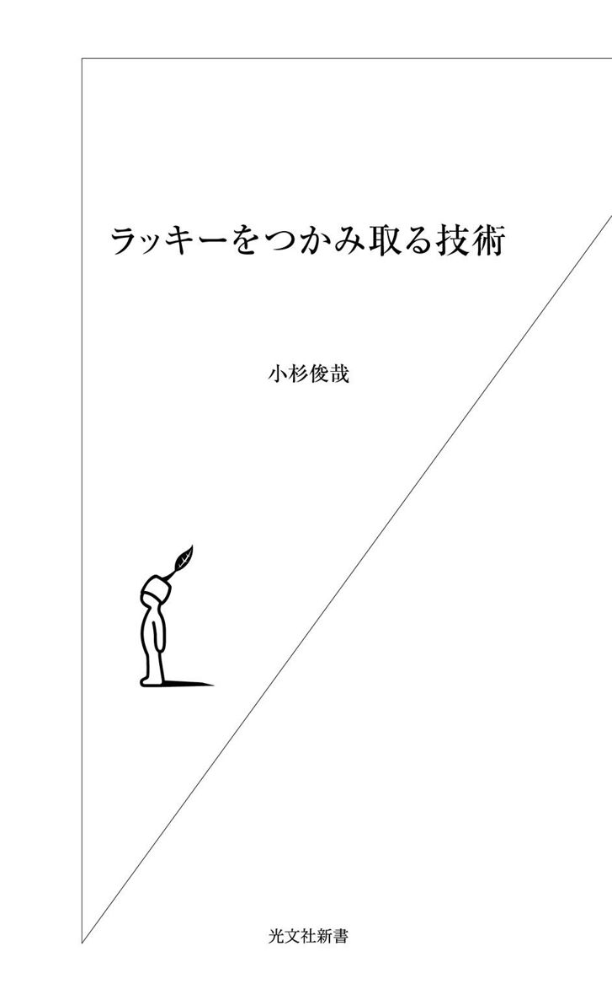

| ラッキーをつかみ取る技術 | |
| 小杉 俊哉 | |
| (2005) | |

あなたの周りを見てください。いつも運がいい、そんな人が何人か思い浮かぶでしょう。一体どうしてあの人ばかりにいつもラッキーが起こるのだろうか？ 世の中不公平だ、と思ってしまうような人。
私の周囲にも、まさにラッキーを絵に描いたような人が大勢います。彼らを見ていると世の中で成功することが実に簡単に見えるし、いつも楽しそうに生きている。彼らももちろん努力をしているのでしょうが、それが外からは少しも見えないし、たまに見えても、「ああ、あの人でも努力することがあるんだ」と変に感心してしまうくらいです。
一方で、あなたの周りに、一生懸命やっているのだけれど少しも運に恵まれない人がいないでしょうか？ その人が運に恵まれないのは、そういう星の下に生まれた宿命だからなのでしょうか？
私は、二つの会社の人事の責任者として千人以上の人と面接をしてきました。また、独立後も十年間、多くのベンチャー経営者に会い、ベンチャー幹部採用のお手伝いをして、数多くの人たちを見てきました。キャリア自律研修やリーダーシップ研修を通じては、大企業に勤める多くの人たちと接し、今も毎年六、七百人と接し続けています。
戦略コンサルティング会社で働いている人、働いた経験のある人、弁護士、会計士、税理士、医師など多くのいわゆるプロフェッショナルの人たちと知己を得、また数え切れないほどのビジネススクール出身者とも交友を続けています。
その中で、同じように優秀であっても、同じ仕事をしていても、ラッキーばかり起こる人と、そうでない人とが明確に分かれているのは不思議なほどです。
ラッキーが起こる人にはラッキーが起こるべくして起こっています。彼らは皆共通する考え方、行動をとっている。いつラッキーがやってきてもいいように普段からそれに備え、ラッキーがやってくるように呼び込むような状態を保ち、ラッキーを見つける行動をとり、ラッキーを取りにいく。そして一度つかんだらそれをモノにするまで決して離さない。
その一つ一つの段階の行動を知り、一連の行動を意識して行うことで、誰でも、ラッキーをつかむ確率を格段に高めることができるのです。
すなわち、ラッキーをつかみ取ることは「技術」であり、それを意識して行うことで誰でも習得できること、と考えられます。その意味では、スキルという言葉に置き換えることもできます。一方、ラッキーをつかみ取るための思考や行動ととらえれば、それはコンピタンシー（または、コンピテンシー）と言うこともできます。ただし、本書では、それが技術なのか、スキルなのか、コンピタンシーなのかを規定することにはまったく意識を置いていません。それが何であろうと、そのように考え、行動し、習慣にしてしまうこと、それだけで十分であると考えるからです。
ただし「どうやってツイている人間に見せるか」という単なる小手先のテクニック・ノウハウを語るつもりはありません。それでは、たとえラッキーが起こったとしても単発で終わってしまいます。ラッキーをつかみ取るためには、考え方や行動を変え、それを習慣としてしまうことが必要です。ラッキーが起こる「クセ」をつけ、習慣にしてしまえば、今はまだあなたにとって夢のようなことでも、それを実現させることが可能になるのです。
この本は、おそらくあなたの学術的な興味を満たすものではないことを最初にお断りしておきます。そして、もう一つ。私自身、自他共に認める非常にラッキーな人間であることを申し上げておきます。具体的には随所にご紹介していきます。
私の持論ですが、いくら研究調査に励んで持論を展開したとしても、どう見てもキャリアに成功していない人がキャリアの話をしても説得力がないのとまったく同様に、どう見てもラッキーでなさそうな人がラッキーのつかみ取り方を書いたとしても、それは説得力がないと考えています。
それでは、さっそくラッキーをつかみ取るための扉を開けて、中に入っていきましょう。なお、能書きはいいから、どうしたらいいかさっさと教えてくれ、と思う人は序章を飛ばして第一章から読んでください。あるいは、自分の興味がある章から読み始めてもらっても結構です。
まずは、ラッキーとは一体何なのか？ ということを整理したいと思います。そのためにチャンスとの関係、努力との関係、性格との関係、時代的背景、そしてキャリアにおける位置づけを整理してみたいと思います。
ラッキーとは一体何だろうか？ 最初にラッキーの定義をしておく必要があるでしょう。まず、日本語の「ラッキー」と、英語の"lucky"とはどうもニュアンスが違うようです。また、似た言葉に"chance"がある。どう違うのでしょうか？
研究社の新英和大辞典で、まず、"lucky"の派生元の語である"luck"から調べてみると、「１ 運、運勢、巡り合わせ、２ 幸運、成功」となっています。"luck"は、good luck（幸運）に対して、bad luck（不運）というように、第一義にはよい意味にも悪い意味にも使われます。
次に、"lucky"を見ると、形容詞が「運の良い、幸運な、幸運をもたらす......」、名詞が「幸運なもの、幸運をもたらすもの」とあります。"lucky"は常によいほうにだけ使われていると分かります。
一方、"chance"はどうでしょうか？ 私も含め一般的な日本人は、"chance"というと好機という意味で使うことが多いのではないでしょうか？
これも調べてみると、「１（人間の意図・因果関係と無関係な）偶然、予期せぬこと、運、巡り合わせ、２（あることに幸いする）機会、好機......」となっています。"chance"は、本人の力が及ばないまったくの偶然、運、可能性など無色透明なものと、幸運な機会という両方の意味があることが分かります。ネイティブは、bychance＝偶然、by any chance＝万一、Is there any chance?＝可能性はあるの？ など、好機、という意味よりも第一義の偶然、可能性、という意味で使うことのほうがむしろ多いのです。
さて、我々が、「ラッキー」と言ったり、思ったりするのはどういうときでしょうか。身近なことでは、コートのポケットに入れて忘れていた千円札を見つけたとき、買おうとしていた服が二割引セールになっていたときなどは、思わず「ラッキー」と言ってしまうのではないでしょうか。
また、テニスをやる人は、試合を分ける大きなポイントで相手がダブルフォールトしてくれたり、相手がイージーボールをネットやアウトしてくれたときに、「ラッキー」と叫ぶでしょう。たまたま何かの都合で飛行機を一便遅らせたために事故に遭わずに済んだ、という話も聞いたことがあるでしょう。これなどは究極のラッキーと言えます。これらは、すべて自分が意図しないたまたまの巡り合わせ、あるいは自分の力が及ばないことです。
つまり、日本人の多くは、自分自身が何か働きかけた結果としてではなく、思いもかけず転がり込んできたもの、棚からボタ餅、ひょうたんから駒のようなものを「ラッキー」ととらえているようです。ということは、ラッキーは偶然「起こる」ものであって、自分自身が必然に「起こす」ものではないととらえているということです。
私は、言語学や社会学に明るいわけではないので、残念ながら詳しい考察ができません。しかし、直感的に感じるのは、少なくとも日本語の「ラッキー」は、どうもひたすら受け身で待っているもののようで、これは日本人のメンタリティーを反映しているような気がしてなりません。つまり「チャンス」（運、偶然の機会）がいつかやってくるのを待っているのです。
日本のサラリーマンの多くは、社会の、会社の、そして自分の周りの閉塞感を、いかんともしがたいと感じています。それらは自分のせいではない、自分は与えられた環境で与えられたことを一生懸命にやってきた、これ以外に仕方なかったと思っているからです。
彼らは、何かとてつもない大事件や天変地異を待っていると言われています。それらが、現状をすべてひっくり返してくれる、洗い流してくれるようなことをどこかで期待しているのです。嫌な上司がいなくなったり、自分にいいポジションが転がり込んできたりしないかな、というような、そんなラッキーをどこかで期待しているのではないでしょうか。
本書では「ラッキー」を、あくまで"lucky"の名詞の定義である「幸運なもの、幸運をもたらすもの」ととらえています。"lucky"は、巡り合わせや偶然ではなく、自分の意志、働きかけで手にすることができるものである、と考えるからです。言い方を換えれば、"chance"（運、偶然）を必然にすることができる、ということです。
私の直接の知人、友人二百数十人に、ラッキーについてのアンケート調査に協力を依頼し、約百人から回答をもらいました（以下「ラッキー・アンケート調査」）。回答者の属性はかなりバラエティに富んでおり、男女の比率はほぼ同じ、年齢も二十歳そこそこの学生から六十代までかなりの幅があり、職業もビジネス・パースンから専業主婦まで含まれています。アンケートの対象者を私の直接の知人に限ったのは、私の知らない人だと、本人がそう答えていても客観的にラッキーかどうか判断ができないからです。
その結果、大変興味深いことが分かりました。自信を持って自分自身がラッキーであると考えている全面的ラッキー派の人たちは、自らラッキーであると思い、自分自身の働きかけによって、そうなっていると答えているのです。また、後述しますが、ラッキーであるために普段から具体的な考え方や行動をとっています。すなわち、ラッキーは自ら働きかけることにより、コントロールできるものである、と考えています。回答してくれた人の顔を思い浮かべると、客観的に見ても皆ラッキーと言える人生を送っています。
一方、自分自身がアンラッキーであると考えている人は数名しかいなかったのですが、彼らは自分はどういうわけか、たまたま運に恵まれないのだと考えています。アンラッキー派の人数が少ないのは、世の中にアンラッキーと考える人が少ないわけではないでしょう。母数も少なくサンプルにも偏りがあるので確かなことは言えませんが、私の知人にはアンラッキーであると考えている人がほとんどいないか、または、アンラッキーであると考えている人はアンケートに積極的に協力してくれなかった可能性が高いと考えるべきでしょう。
そして、「多くの場合にラッキーだと思う」「いろいろあるけど総じてラッキーであると言えると思う」というような答えの条件付きラッキー派の人たちも同様に、皆たまたま自分は運がいいのだと思う、と答えています。つまり、ラッキーは結果であり、ラッキーになろうと思ってなれるものではないと考えているのです。
ところで、若手の創業経営者の中でももっとも成功している一人で、インターネットモールを運営し、球団経営も行っている楽天の三木谷浩史社長は、まさに次のようなことを言っています。「運がよかったと感じることも多々あります。でもすべて必然と思うことにしています。株式公開も、いいタイミングだったと言われますが、そうじゃなかったら、別のやり方で同じ結果を出してみせますよ。要は流れがきたときにそれをつかまえる準備ができているかどうか、それが運というものでしょう」。
あなた自身は全面的ラッキー派ですか？ 条件付きラッキー派ですか？ それとも？
勉強と仕事との関係から考えてみましょう。「一生懸命勉強し努力すれば、仕事で成果が上げられるか？」ということです。一生懸命勉強し、努力すれば、勉強はできるようになるでしょう。たとえ、人より学力が劣っていたとしても、人の倍、三倍努力することによって克服することは可能です。
勉強における「頭のよさ」は、学力です。そして、現在の通常の試験制度において測られる学力は、非常に多くの場合、覚えたことを忠実に答案用紙に再現する、という記憶力です。
ところが、仕事においては、学力の中心となる要素であった記憶力はどのくらい成果を生み出すでしょうか？ もちろん、記憶力が悪いよりいいに越したことはありません。しかし、会社の人事に長年関わってきた経験から言うと、実際にデキルと評価の高い社員は、単に記憶力が高いのではない、と断言できます。
それよりも、機転が利く、状況理解力・判断力がある、バランス感覚に優れている、吸収力がある、柔軟性がある、物事を俯瞰・大局的に見ることができる、イメージ力があり仮説が立てられる、人の気持ちがよく分かる、どうすれば人を動機づけられるか分かる、などなどの能力を発揮しているから評価を得ているのです。これらも「頭のよさ」です。
こういった頭のよさは、ただ勉強をしても身につくものではありません。そういうと語弊があるかもしれないので、少なくとも試験勉強や座学で身につくものではないと言っておきます。一流大学卒の学力の高い人が、仕事をやらせてみたら、からきし使えないということは往々にしてあります。「頭のよさ」の中の一要素に過ぎない学力だけが発達した結果、他の力が未発達のままなのです。さらに、仕事においてはこのような「頭のよさ」以上に、人間性、人間的魅力のほうにより重要性が認められているのですが、これについては後の章で詳しく述べたいと思います。
このことは人事部門の人や、少なくとも管理職の人であれば誰でも分かっているはずのことです。それなのに、なぜいまだに多くの企業が、入社時に学生を「学力」試験でふるいにかけるのか、私には不思議でなりません。
一つの理由は、保険です。一定水準以上の学力があれば、会社での指示を正確に理解できることを期待できるから。もう一つの理由は、スクリーニングの手段として他に適当なものがないからです。学力は手っ取り早く測れるが、それ以外の、仕事で高い成果を上げるために必要な能力をペーパーテストで測ることは難しいと考えられています。しかし、論文を書いてもらったり、面接の質問の仕方を工夫したりすることによって、それは可能になるのです。私は、実際にある鉄道会社で学力試験を行わないコンピタンシー採用のお手伝いをし、人事の人間ではなくライン部門のいわば素人の面接官でもそれができるようにした経験があります。
さて、「一生懸命勉強し努力すれば、仕事で成果が上げられるか？」という観点で述べてきましたが、これは、「一生懸命勉強し努力すれば、ラッキーは手に入るか？」と置き換えてもまったく同じことが言えます。
一生懸命勉強し努力することは、後の章でも触れますが、当然大変重要なことです。しかし、ただ決められたこと、人から与えられたこと、今までは皆がそうしていた、ということをただ一生懸命やっていても、その方向ややり方が、今の時代にラッキーをつかむために行われているものでなければ、ほとんど役に立たないのです。
このようなテーマを考えるとき、私はいつも名取勝也さんを思い浮かべてしまいます。彼は慶應義塾大学経済学部を卒業し、翌年司法試験に受かり、弁護士になります。そして、渉外弁護士事務所に入り、そこからワシントン大学ロースクールに派遣され法学修士号を取ります。その後ジョージタウン大学のビジネススクールでＭＢＡも取得。帰国後は、エッソ石油を経て、アップルコンピュータの法務本部長、日本サン・マイクロシステムズ取締役法務本部長、ファーストリテイリング執行役員を歴任します。そして、現在は日本ＩＢＭ法務・知的財産担当取締役であり、また慶應義塾大学法科大学院の准教授でもあります。企業内弁護士として若くして彼ほど華麗な経歴を持って成功し続けている人は、他に見当たらないくらいです。
親友なのであえて言ってしまうと、彼に「努力」という言葉はないのではないかと思うほどで、日本中探しても、彼ほど「最小の努力で最大の効果を上げている」人は他にはいないのではないかと思ってしまいます。
大学時代はまったく学校に行かず、友人たちのサポートで留年もなく卒業できたそうです。司法試験でも、口述試験（最終試験）の直前に弟さん（彼も後に司法試験に合格し、現在は検事になっています）に頼んで練習問題をやってもらったら、まったく同じ質問が三問も出たそうです。また、司法研修所でもほとんど勉強せず、教官からあきれられていたそうですが、このときも最終試験の直前に見るに見かねた同期の友人が個人教授をしてくれ、まったく同じ問題が出て無事卒業したということです。最初照れでそのように言っているのだと思ったのですが、彼を助けた同期の弁護士でやはり私の友人でもある高橋鉄さんも、その話が事実に相違ない、と言っているのでどうも本当のようです。
確かに、名取さんが一生懸命努力しているところを見たことがありません。以前同じ会社の隣同士の部屋で働いていたのでよく知っていますが、仕事はいつやったのかと思うほど効率よくしかも確実に仕上げ、朝の出社は遅く、毎晩七時過ぎになると飲みに行ってしまいます。また、ほとんど毎週のようにゴルフに行くなど充実したプライベートライフを送っています。ところが、彼にはラッキーなことばかり起こり、いつもいい目に遭います。
名取さんにどうしていつもそんなにツイているのか聞いてみたところ、こういう答えが返ってきました。「人生は運だと思っている。僕はいつも、自分はツイテイル、ツイテイル、と念じているんだよ。だからいつもラッキーなんだよ」。自分を暗示にかけ、そして周りの人にも暗示をかけてしまうかのようです。
艱難辛苦、歯を食いしばって努力している人を人は称えることはしても、そのような人に仕事を任せようと思うでしょうか。それよりも、いつも余裕で、どんなに大変そうな状況に見えても、難しそうな仕事に直面しても、楽々とこなしてしまうような人にこそ仕事を頼み、またそのような人を会社に、あるいはビジネスのパートナーに欲しがるのです。いつもツイている人に頼めばすべてはうまくいくように思えるからです。
この例では、「そんなこと言ったって、その人は司法試験に受かるくらい頭がよかったわけじゃないか」という反論が聞こえてきそうです。しかし、では、司法修習生時代に留年寸前の成績だったことと、今では彼の同期の弁護士の中でもおそらくトップクラスの業績を上げ、成功していることをどのように説明できるでしょうか？
もちろん、一生懸命勉強して、努力することが無駄だと言っているわけではありません。ただ、そのやり方を間違えていると、一向に成果に結びつかないということを言いたいわけです。名取さんにしても、おそらく人が見ていないところで相当の努力をしていることは間違いないでしょう。その努力が、実に理に叶っていて効率がいいので、人から見ると楽々やっているように見えるということなのです。
この点について、公認会計士・経営コンサルタントである金子智朗さんは、このように表現します。「自分の人生において、ろくに努力もせずにいい結果だけ出たことは皆無に等しい」「『努力が報われない人』は努力の仕方が間違っているように思うのです」「努力は、『正しいこと』、を『正しいやり方』でやって初めて報われると思います。やっていることは正しいのに、詰めが甘い、時間の投入が少ない、他の誘惑に負ける人が多い。逆に、ストイックなまでに時間を使って努力している気になっているが、やっていることが正しくないので、結果を伴わない人も多い」。
金子さんは、東京大学工学部を卒業後、東京大学大学院工学系研究科修士課程を修了し、日本航空にＳＥとして就職しますが、在職中に公認会計士二次試験に合格します。プライスウォーターハウスクーパースコンサルタント株式会社（合併後、現在はアイ・ビー・エム ビジネスコンサルティング サービス株式会社）でコンサルタントとして働いた後、独立し現在は経営コンサルタント、経営顧問、社外取締役等を務める一方、企業研修、講演を数多く行い、名古屋商科大学大学院等の教授も務めるなど、まだ四十代ですが、八面六臂の大活躍をしています。そんな金子さんから出た言葉だけに説得力があります。
さらに、こう言います。「そこまでがんばれるのはあなたの能力だと言われることもあるので、そういう能力を親から授かったことはラッキーだと思います」と。では、正しいこと、正しいやり方とは何か？ これは後の章に譲りたいと思います。
さて、この問題を避けて先には進めないでしょう。少し専門的な話になりますが、お付き合いください。前述の名取さんのような人は、そういうおめでたい性格だからラッキーになれたのだ、と思う人もいるわけです。実際、そもそもラッキーな人がラッキーなのは、結局のところ楽天的な性格だからじゃないか、ということを言う人に何人も出会いました。
拙著『29歳はキャリアの転機』（ダイヤモンド社）の本の帯には、こう書いてあります。「こんな僕でもできたんだ。君だってできる！」これを見たかつての部下から、「そのとおりだと思います。でも、やっぱり小杉さんだからできたんじゃないでしょうか。私も、小杉さんのように楽観的に考えられる性格だったら、もっと思うような人生を送ることができるだろうに、と思ってしまいます」というようなことを言われたことがありました。これは、自分は私のようには能天気に考えられる性格ではないから、思うような人生を送れないと言っているわけです。これに対するコメントは後回しにして、性格とラッキーについての興味深い調査があります。
イギリスのハートフォードシャー大学のリチャード・ワイズマン教授は、ラッキーの研究をしている数少ない研究者の一人です。教授は心理学における五つのパーソナリティモデルである「協調性」「誠実性」「外向性」「神経症的傾向」「開放性」と運のいい人と悪い人との関係を調べました。その結果、運のいい悪いを決定づける要因は、たった一言、性格に集約される、としています（『運のいい人、悪い人』角川書店）。
テストの結果、「協調性」や「誠実性」には運のいい人も運の悪い人もさしたる差はありませんでした。しかし、「外向性」「神経症的傾向」「開放性」に関しては、両者に大きな差があり、運のいい人は運の悪い人に比べて「外向性」「開放性」が高く「神経症的傾向」が低かったということです。
外向的な人は、内向的な人よりもたくさんの人と会い、対人関係の仲立ちをし、そしていつも人と接していることにより、運のネットワークを築き、それを広げている。神経症的傾向が低い、すなわち、情緒安定性の高い人は、そうでない人に比べて緊張や不安に強い。いつも落ち着いてリラックスしているから、それだけ偶然のチャンスに気づきやすい。そして、開放性の高い人は、新しいことを試し、挑戦することが好きだ。予測できないようなことを歓迎する。したがって、運に巡り合う可能性も高まる。以上のようなことが説明されています。
これはそのとおりだと思います。この中で、「外向性」は本著の中の、第Ⅲ章―「１ ネットワークを作り、育てる」に合致しますし、「開放性」は第Ⅳ章―「２ あえて人とは違うことをやる」の内容と重なる部分があります。また、「神経症的傾向」が低い、すなわち情緒安定性ということと第Ⅱ章―「２ ありのままの自分を出す」ということは関係が深いと考えています。
それでは、性格が外交的で、情緒が安定し、開放的である、ということに当てはまらない人はラッキーをつかめないのでしょうか？ 私は、このことを疑問に思いました。特に、ＭＢＴＩ®（マイヤーズ・ブリッグス・タイプ・インディケーター）との兼ね合いはどうなるのだろうか？ と思いました。
ＭＢＴＩは、六十年以上前に今の形が確立され、現在では二十四言語に翻訳され四十五カ国で使用されており、米国では年間三百万人、世界では五百万人が受検すると言われているデファクト・スタンダードと言える性格検査です。ユングのタイプ論をベースにしており、人はその指向により十六のタイプに分類されるという考え方です。
十六通りは、①心のエネルギーの向き方が、外向か内向か、②情報の取り入れ方が、感覚か直観か、③判断の仕方が、思考か感情か、④外界への接し方が、判断的態度か知覚的態度か、の２×２×２×２の組み合わせで決まります。これを心理的における五つのパーソナリティモデルのうち、運のいい人は高かったとされる「外向性」「開放性」に関して対応を見てみます。
ＭＢＴＩの①心のエネルギーの向き方である外向‐内向のうちの外向を指向する人が示す特徴と「外向性」が高い人が持つ特徴は、他人から見える行動としては類似します。また、④外界への接し方である判断的態度‐知覚的態度のうち、知覚的態度を指向する人は「開放性」が高い人と他人から見える行動の特徴が類似します。
しかし、ＭＢＴＩの大きな特徴は、誰もが十六の指向タイプのどの機能も備えていて使うことができる、しかし自分の好む機能をより発達させていると考えることです。
たとえば、あなたは、外向を指向しているか、内向を指向しているかと考えたとき、内向と外向のどちらか一方しか使わないわけではなく、時と場合によりどちらも使っているのです。ただ、外向を指向している人はそちらの機能をより発達させている。内向を指向している人は、そちらの機能をより発達させている。
しかし、発達心理学の立場から見ると、人が成長するということは、一方に発達させた機能のために犠牲にしてきた対極の機能をもうまく使うことにより、こころの全体性へと向かうということなのです。外向の人は内向の時間をより持つようになり、内向の人はより外向の時間を持つようになることを成長ととらえるのです。
そもそも人の発達は、人の持って生まれたタイプの指向と、環境との間に生まれる相互作用によってもたらされるものであり、環境が支援的でない場合は、その環境が求める条件にどの程度順応できたかによって、成長が左右される、と考えられています。たとえば、外向的に見える人が生まれつき外向を指向している場合もあれば、環境によって本来内向を指向しているのに外向にならざるを得なかったという場合もあるのです。
ですから、五つのパーソナリティモデルで言う「外向性」は外向的な性格、というようにひと括りにし、固定的なものとしてとらえることは必ずしも正しいとは言えないのです。これは非常に重要な点です。
この点を確かめたくて、慶應義塾大学キャリア・リソース・ラボラトリーのロンドン出張のついでに、思い切ってワイズマン教授を訪ねました。たまたまそのとき、教授は別荘のあるエジンバラにいるとのことだったので、わざわざラボのメンバーと一緒にロンドンからまた飛行機に乗り、出向いたのです。そして、非常に興味深い話を聞きました。
「ＭＢＴＩの結果と運のいい人、悪い人との相関を調査しましたか？」と質問したのですが、これに対し、ワイズマン教授は、「もちろんさまざまな調査をやってみたのですが、これが、ＭＢＴＩとの相関はまったく見られなかったのです」と断言したのです。
これは、どういうことを意味するのでしょう？「外向性」という生まれながらの性格を持っていなくても、「外向」を指向し、または指向していなくても時と場合によって「外向」機能を働かせることによって、ラッキーになれるということです。
ワイズマン教授も研究の対象として取り上げている"luck"は、必ずしも宝くじに当たるかどうかというような偶然に任せるようなことだけではなく、仕事でチャンスをつかんで成功するなど、自分の行動や考え方次第で変わる可能性のある"luck"に注目したわけです。また、そもそも運のいい人と悪い人のサンプルをとる際に、自分が運がいいと思うか、悪いと思うかということにより区分している点にも注目すべきです。
これは、前記の私が行ったラッキー・アンケート調査同様、本人が運がいいと思っている人は運がよくなるような考え方、行動をしている、ということと実は同じ考え方なのです。実際、ワイズマン教授が行っている「幸運のレッスン」「幸運のワークショップ」は幸運をつかむような考え方、行動を指導していくものであることからもそれは明らかです。
ラッキーかどうかは性格によって決まるのではなく、考え方や行動によって決まるのです。ただ、性格によってラッキーになりやすい考え方や行動をとる傾向があるということです。そのような性格でなくとも、ラッキーになるような考え方、行動を意識してやってみる、それを習慣づけることでまったく問題ないということです。
数年前から日本企業でも取り入れるところが多くなったコンピタンシー（または、コンピテンシー）も、基本的にはこのような考え方に立っています。コンピタンシーは、高い業績を上げる人に共通に見られる再現性のある思考、行動特性と定義できます。これを人材育成に活かす場合、高い業績を上げる人と同じような具体的行動パターンを意識してとることにより、その能力が高まっていくのです。
あなたの行動が変わればそれは周りの人にも影響を与えます。周りの人の行動の変化はあなたにフィードバックされます。すると、それがあなたの性格にも影響を与え、変えることもできると、自身の経験や周囲の人の観察から私はそう考えています。意識して行動することにより、性格を決定づけると言われるノルアドレナリン系、セロトニン系、ドーパミン系の三種類のホルモン量のバランスが変わり、性格を変えることが可能である、というような研究もなされています。少なくともアンラッキーであることを生まれながらの性格のせいにすることは的外れだ、と考えられます。
現代はキャリアが見えない時代と言われます。これは、環境変化が激しいために、会社の上司や先輩を見習ってコツコツと仕事をしていても会社の業績悪化で彼らのように処遇される保障がなくなった、あるいは、やり手の上司に長年仕え引き上げてもらっていたがその上司がヘッドハントされ退社してしまった、出世コースに乗っていたのに突然の会社の合併でゼロからのスタートとなった、などなどのことで、例を挙げればキリがありません。要するに、これをやっておけば将来こうなる、といった予定調和的なキャリアの見通しがまったく利かないということです。
では、かつてはキャリアが見える時代だったのか、ということを考えてみる必要があります。こういう見出しをつけましたが、正確に言うと、かつてもキャリアが見えていたわけではなかったのです。
唯一の例外は、昔は「キャリア」と言えば彼らを指していた、高級官僚です。大学、そして国家公務員試験の成績順位でその後の出世も約束されていた。しかし、一般の企業に勤める場合は、新卒で会社に入って、以後三十有余年、社命による人事異動に従って与えられた仕事に全力を尽くす、あるいはこれはという上司に忠誠を尽くす、いずれにしてもそこにはキャリアという概念が入り込む余地はありませんでした。
恵まれた勤務地に配属になったというようなラッキーは多くありました。また、同期より早く出世した、よいポジションについた、これはもちろん本人の努力もあるのですが、それを評価する会社、上司の意向次第であり、それが反映されればラッキー、ということに過ぎません。つまり、ラッキーはまったくの偶然の産物か、あるいはひたすら待つものという、いずれにしても受け身の姿勢だったのです。
さて、現在はどうでしょうか？ 終身雇用という概念が社員にも会社にもなくなっている。その結果、個人は会社に対するロイヤリティーが、また会社は人材を育てる、という意識が希薄になっています。これは、会社が一生雇用を保障してくれるわけではないし、他によい会社があれば転職したい、あるいは転職してもいいという個人が増え、また、すべての社員を一生抱え込むような余裕はもうないと会社も考えている、という相互の関係の変化によるものです。
もちろん、現在も終身雇用を標榜している会社もごく少数ありますし、これを否定するものではありません。しかし、すぐか将来かは別として、会社を辞めようと考えている二十代、三十代前半の社員が全体の六割以上に達しているという数年前の旧通商産業省の調査結果や、実際に多くの企業が大量の社員をリストラしている事実があります。いくら会社に忠誠を尽くしていても、たとえば会社が潰れてしまったり、買収されて外資系になってしまえば何にもならない、という数多くの実例を若者は見ているわけです。また、会社側、というより経営者も、そのような事態が起こる可能性を否定できないのです。ですから、そのような環境の変化によって、個人と会社は新しい関係を構築する必要が出てきたわけです。
それは、従来のような親子関係でも、親分子分関係でもない、対等の関係、大人同士の関係です。一方が他方に依存することはない。個人は、絶えざる自己成長と自分の職務に対するコミットメントを持つ。会社は、個人の能力の発揮と成長の機会を提供する。その限りにおいて雇用関係が成り立つ。そのような、相互の対等な関係です。
このような関係においては、社員は受け身でいることは許されません。自ら主体的に働きかけ、主体的に自分のキャリア開発に取り組まなければならない、ということです。言い方を換えれば、自律が求められるということです。ということは、受け身にラッキーを待っているのではなく、自分からラッキーをつかめるように働きかける必要がある、ということがお分かりいただけるのではないでしょうか。
また、現在の変化は、以前のような先が見通せるようなゆるやかな変化ではありません。つまり、変化の内容も質的に変容しているし、変化のスピードが従来とは比較にならないほど速く、変化が断絶している。しかしこのような環境ほど、またラッキーがたくさん転がっている、誰にでもラッキーをつかみ取れる可能性が十分にある、ということなのです。
実際に、たとえば買収されて外資系になった企業で、以前より自身を高めるためにアフタースクールに通ったり、語学力を磨いていたりした結果、かつての上司が退職していく中で評価、抜擢され、買収前では考えられなかったような若い年齢で重要なポストについている人はたくさんいます。
従来のキャリア論の中心は、どのようにしてあなたにもっとも合った仕事を探すか、そのための選択の仕方、意志決定の方法を規定します。たとえば、その代表的なアプローチであるマサチューセッツ工科大学のエドガー・Ｈ・シャイン教授の説くキャリア・アンカー理論では、あなたの才能と能力、動機と欲求、態度と価値、その三つの観点を自覚することによって、あなたにもっとも適したアンカー（錨）を探しそれを選択することを中心に据えています。
アンカーとは、たとえば、技術的／職業的能力、管理的能力、自律、保障、創造性などがあり、そのどこに錨を降ろすかという選択をするわけです。つまり、技術的・専門職的な仕事を選ぶか、管理職的な仕事を選ぶか、などなどです。キャリア選択の見極めとなるのは、才能と能力、動機と欲求、態度と価値であり、当然ながらそこにラッキーや偶然という概念が入り込む余地は極めて少ないということが前提になっていると考えられます。
それに対して、いかにして偶然やラッキーを計画的に作り出すかを考え、行動しなさい、という新しいキャリアの理論が、慶應義塾大学キャリア・リソース・ラボラトリーによって紹介され、日本でも広く知られるようになりました。Career Planned-happenstance Theory（プランド・ハプンスタンス。キャリアにおける計画された偶然性理論）、スタンフォード大学のジョン・Ｆ・クランボルツ教授が提唱するアプローチです。表現は荒っぽいですが、従来のキャリア理論が「東海岸を中心とする保守系」だとすると、こちらは「西海岸のお気楽系」理論とも言えると私はとらえています。
従来の目標達成型の考え方ではなく、実はほとんどの人はこの偶然の積み重ねによって今に至っているのではないかということを指摘しています。それでは、その偶然を積み重ねてキャリアを作ってきた人は、単にラッキーだっただけなのでしょうか？ クランボルツ教授は、そうではない、そのような人たちは皆偶然を必然に変えるようなアプローチをしているのだと指摘しています。キャリアは偶発的事件の積み重ねの結果だ、その偶発的事件を作り出せ！ ということです。そして、彼は、ゴールはキャリアの意思決定をすることではなく、「生涯にわたる学習」と「あなたが毎日を生き生きとエンジョイすること」と言っているのです。
では、そのアプローチとは具体的にはどのようなことなのでしょう。それは大きく五つに括られます。一つ目は、好奇心。自分の好奇心に従い、広げていく。それを押しとどめてはいけない。二つ目は、持続。すぐにあきらめず、結果が出るまでやり尽くしてみる。三つ目は、楽観。大半の悲観的なコメントよりも、たった一人の前向きなコメントを心に置いてみる。その一人がたとえ自分だけだったとしても、です。四つ目は、リスクテイキング。失敗はするもの。今持っている何かを失うよりも、新しく得られる何かに賭けてみる。そして、五つ目は柔軟。一度意思決定したことでも、環境や状況の変化に伴い、いくらでも変化させればいい。そのようにあなたの行動を変えなさい、ということなのです。その意味で従来のキャリア論の「目標設定型」に対して、「行動変容型」キャリア論と言うこともできるわけです。
いかがでしょうか？ 計画された偶然性理論では、簡単に言ってしまうと、ラッキーを中心に据え、いかに偶然を必然にするような行動をとるかということに尽きるのです。この理論では、ラッキーをつかみ取るのは技術である、というこの本の主題と見事に一致しているわけです。そしてそのアプローチで述べられているエッセンスは、まさにこれから述べていくことと同じ考え方をしていることがお分かりいただけると思います。
それでは、ラッキーを手に入れるための行動とはどんなことなのかを具体的に考えましょう。それは、五つのステップに分けて考えることができます。
では、さっそく一つ一つ扉を開けて見にいきましょう。
いつもラッキーな人というのは、ラッキーに対して自分自身がいつも備えています。ラッキーに対してそれを受け止めるだけの基礎的なインフラを自分自身で持つ。それがラッキーをつかみ取るための最低限クリアすべき資格要件とも言えます。ただ、何も難しいことはありません。普段の考え方を少し変えてみるだけでよいのです。それだけでまったく違う世界が見えてきます。
フランスの細菌学者のルイ・パスツールはこう言っています。「心の準備が十分にできているほうが、より多くのチャンスが到来する」。
あなたは毎朝電車通勤をしていますか？ もしそうなら、電車の中で周りの人の顔をじっくりと眺めてみてください。皆、実につまらなそうな顔をしていることに気がつくでしょう。無表情であればまだいいほうで、多くは積極的に（？）不機嫌そうな表情を浮かべています。人によっては世の中が今日終わるかのような絶望的な顔をしている人もいます。眉間には皺が寄り、口元はへの字に曲がっています。
電車の中の不機嫌な顔は人ごとではなく、その中の一つの顔があなたの顔ではないですか。苦虫をかみつぶしたような顔をした人、世の中の不幸を全部背負っているような顔の人、不満だらけで生きているような顔の人。考えてみてください。このような顔の人にラッキーが訪れることが想像できるでしょうか。その人たちにラッキーは似合いません。なぜでしょうか？
それは、多くの場合ラッキーは人を媒介にしてやってくる、つまりラッキーを運んでくるのは人、だからです。人には感情があります。あなたがもし、ラッキーを運ぶとしたら、不機嫌そう、不愉快そうな顔をした人にラッキーを届けたりしたいと思うでしょうか。言い方を換えると、あなたは、そのような人たちを助けたり、大事な仕事を頼んだり、一緒に働いたりしたいと思うでしょうか。
『29歳はキャリアの転機』の中でも書きましたが、ユニデン、アップルコンピュータと二つの会社の人事の責任者として人材の採用に関わってきて、私が結論として至ったことは「面接は顔が命」ということでした。面接の合否は「いい顔」かどうかで決めるということです。改めて言うまでもなく、もちろん美人やハンサムな人を選ぶ、ということではありません。顔つき、表情にその人は表れている、ということです。スキルや知識、経験がいかに豊富でも、顔に輝きがない人を採用すると、ほとんど入社後にうまくいった試しがありません。
あるベンチャー企業で、人事部門の責任者を採用する際、経歴も申し分ない人で他の役員も諸手を挙げて採用したいと言っていた人物と面接したことがありました。確かに願ってもない経験とコミュニケーション力を持った人でしたが、話しているときにふと見せる表情の暗さとのギャップが大きいことが気になり、念のため調査をかけたところ、学歴、経歴ともに詐称していたことが判明した、などということがありました。反対に、求められるスキルや経験が足りないなと思っても、前職がそのとき採用する職種とは無関係であっても、「いい顔」の人は思い切って採用してみると、入社後大きく伸びたという経験が何度もあります。
また、会社勤めを辞めて独立後十年以上、ベンチャー企業の取締役や、サーチ会社の顧問として、大企業のコンサルタントとして、あるいはキャリア開発研修の講師として、多種多様な地位、年齢、職業の数多くの人たちを観察してきましたが、改めて確認できたのは、つまらなそうな顔をしている人には決してラッキーはやってこない、という事実でした。いくら優秀でも、誰もつまらなそうにしている人を採用したり、応援したいとは思わないのは当然です。
ベンチャーでも、成功している創業者は皆「いい顔」をしています。「そんなことはない、いかにも悪そうな顔をした成功者もいるじゃないか！」という声が聞こえてきそうですが、確かにそういう人もいます。それではこう言い換えましょう。〝成功し続ける〟人は皆いい顔をしている。一時的に時代の寵児のようになり、もてはやされた人でも、顔つきの悪い人は決して長続きしません。こればかりは実際の例を出すわけにはいかないのが残念です。あなたの周り、あるいはあなたが気になる人を観察していてください。私の言うことがお分かりになるはずです。したがって、ラッキーをつかむための第一歩は「いい顔」になることです。
では、どうしたら「いい顔」になるのでしょうか？ 顔の造形が大きな意味を持つのは若い頃だけです。人は美人に生まれたほうがそうでないよりいいに決まっています。でも、その生まれつきには有効期限があって、せいぜい二十代半ばくらいまででしょう。それ以降は、どういう人生を送っているかが顔に表れてしまいます。人間年をとれば皺ができて、皮膚もたるんできます。でも、それをどのような皺にし、どのようなたるみにするかはすべて自分の責任です。「三十過ぎたら自分の顔に責任を持て」というのはそういうことを表現しています。そういう生き方が顔に表れているのだから、ちょっとやそっとで今まで作ってきたものを変えるのは並大抵のことではない、と特に年配の方は思うでしょう。
でも、今日からすぐに「いい顔」になるためにできることがあります。それは、口角を上げることです。口角を上げると微笑んだ顔になります。私は、ずいぶん多くの会社の面接を受けてきましたが、いつもこれをやって緊張をほぐすどころか、嬉しい気持ちで面接をこなしてきました。
このことは、実は大脳生理学的にも証明されているそうです。人間は嬉しいと感じると、それが大脳から神経を伝わって顔に到達し思わず口角を上げてニコッとします。そうすると、その嬉しい顔をしているという情報が反対に神経を伝わり大脳に届き、もっと嬉しく感じる、ということです。これを顔面フィードバックというそうです。この仕組みを利用するのです。つまり、無理にでも嬉しそうな顔、いい顔をすると本当に嬉しい気持ちになるということなのです。そしてそういう気持ちは必ず相手との関係によい影響を与えます。なぜなら人間はその言葉のとおり、人と人との間に相互に作用を及ぼす生き物だからです。その即効性は驚くほどです。これを利用しない手はありません。
いつも楽しそうな顔をしていると、嬉しくなるからいつの間にか「いい顔」になる。嬉しそうな顔をしていると周りの人も気持ちよくなり、あなたに何かよいことをしたいと思うようになります。ラッキーは「いい顔」にだけやってくるのです。
成功し続ける人は皆いい顔をしている。いい顔になるかどうかは、自分の責任。まず口角を上げる。できるだけ笑顔でいる。
よくコインの裏表でたとえられますが、同じ金貨も表から見るのと裏から見るのとではまったく異なります。
たとえば、山登りをしているとします。ちょうど半分くらいまで登ってきて、標識を見るとちょうど五合目です。このとき、「まだ半分もある」と考えることもできるし、「もう半分しかない」と考えることもできます。「まだ半分もある」と考えると、次には、「これだけ大変な思いをしてきたのに」という嘆きや、「はたして本当に頂上までたどり着けるのだろうか？」という恐れが出てきます。一方、「もう半分しかない」と考えると、次には、「よおっし、このままがんばるぞ」というポジティブな気持ちが出てきます。何も登山でなくて、スケジュールのキツいプロジェクトや出張などでも同じです。
このように、同じ半分であっても、それをどうとらえるかによって、まったく逆の気持ちになるのです。どちらにとらえても「半分」に変わりはありません。それなら、どうとらえたほうがよいかは明らかなはずです。
いつもいいほうにとらえる人のことを「楽観的な奴だ」、あるいはそれが度を越えている場合は「あいつはほんとにオメデタイ」と言ったりします。その言葉の裏には「憎めない奴」あるいは、積極的に「まったく羨ましいよ。自分もそうなりたいものだ」という感情があります。
そういう人は生来楽観的な性格なのでしょうか？ もちろん、もともと楽観的な性格の人は、放っておいても楽観しています。しかし、生来心配性の人はそのようにできないのでしょうか？「楽観的」というのは性格だとしても、「楽観的に考える」というのは行動であり、誰でもそのようにしようと思えばできるということです。
天気予報では、「よい天気」は気象予報士やお天気お姉さんにとって禁句であることはよく知られています。我々は一般に快晴の天気をよい天気と言いがちですが、では雨が「悪い天気」なのか、ということを考えてみると分かります。日照りが続くとき、田畑に、森林に、庭に、また、貯水池・ダムに、降雨はまさに「恵みの雨」となるわけです。
天気に関する会話は日常茶飯事に交わされていますが、「ひどい天気ですね」「何もこんな天気にならなくてもいいのにね」という天気を恨むような発言を我々はついしてしまいがちです。しかし、天気に文句を言っても何もいいことがないばかりか、嫌な気分になり、さらには他人をも嫌な気分にさせます。
もし、曇りや雨に文句を言うのであれば、イギリス人はいつも文句を言っていなければなりません。もちろん季節にもよりますが、たとえ晴れていても曇天からにわか雨という日が年間を通じて非常に多いからです。少しくらいの雨なら（あるいはかなりの雨でも）傘を差している人は稀です。
テニスの全英オープンでは、何度も何度も雨で中断し、挙げ句の果てにはサスペンデッドになり翌日に途中から再開、などということはしょっちゅう起こります。もし選手が天候を恨んだら、その時点で負けは決定です。否定的な感情がめばえたら、相手と戦う前に天候に負けてしまいます。ですから、選手たちは目まぐるしく変わる天候をそのまま受け入れ、これが全英オープンというものなのだ、と自分に言い聞かせながら、気力を保っているのです。ゴルフの全英オープンの強風、くるくる変わる天候もまったく同様です。どちらも、それぞれのスポーツ発祥の聖地です。もともとが、天候をそのまま受け入れることを前提として生まれたスポーツだと言えるでしょう。
繰り返しますが、天気についていつも楽しい気分で話をすることです。子供はいつも元気ですよね。天候にかかわらずいつでも楽しそうです。雨は雨なりに傘が差せたり、レインコートが着られたり、水たまりができたりするのでワクワクします。台風ならもっと非日常のイベントですからはしゃぎます。雪もそうです。あなたも昔はそうではなかったですか？
ものごとはすべていい面と悪い面と二面ある。いい面からとらえようとするクセをつけるといつも前向きな気持ちでいられる。
よく、どうして自分にはこんな大変なことばかり起きるのだろうと嘆く人がいます。あるいは、せっかく資格を目指して勉強しようとしているのに今のプロジェクトが忙し過ぎて時間が取れない、というような声も聞きます。前者は一方的な被害者意識であり、後者は前向きにやろうとしているのにたまたま時間の余裕がない、ということのように思えるかもしれません。でも、実はどちらも一緒です。
あなたの周りにはあなたの予想だにしないようなことが突然起こることもしばしばあります。そして、それはあなたの準備や努力いかんにかかわらず、まったくコントロールできないこともしょっちゅうです。新しいプロジェクトへのアサイン、他部門への異動、勤務地の変更、上司の異動・退社、どれもあなたがコントロールできないことがほとんどでしょう。また、プライベートでも、事故、病気、怪我、災害、家族や親の病気・死などが突然降って湧いてくるのは決して珍しいことではありません。
考えてみてください。あなたが受験するときは、幸せなことにただ勉強だけしていればよかったのではないでしょうか？ それは、大変幸せなことです。言うなれば無菌室のような中でただ一つのことだけをやっていればよかったのですから。それは中学生、高校生、あるいは学生、という単独の立場でしかなかったからできたことです。しかし、社会人になり、会社に勤め、家庭を持ち、また、年老いた親の面倒を見る、となってくると複数の役割をあなたは負うことになるのです。それは、年齢を経て働き盛りと言われる年齢になるほど、どんどん増えていきます。あなたはあなた一人で何でも好き勝手にできなくなっていきます。
子供が大きくなるにつれ、お稽古だ、塾だ、学費だと教育費が鰻のぼりにかさみ、自分の趣味や飲み代に使う金を我慢しなければならないということは、世の中のお父さんのほとんどが経験することでしょう。そこで、何か新しいことを決心しやり始めるのは、時間的にも金銭的にも極めて困難が伴います。奥さんや、お子さん、親を食べさせるために我慢しなければならないことが増える、ということになるのです。しかし、本当にそうなのでしょうか？ 実は、自分を取り巻くさまざまな負担や重荷を何もできないという理由にしていないでしょうか？
ラッキーをつかみ取る人というのは、いつも順風満帆な人生を送っている、ということでは決してありません。傍からはそのように見えても、たいていはその人なりに結構いろいろなことがあるはずです。しかし、そのようなアンラッキーが起こったときに、そのアンラッキーから学習しその後の人生に備え、アンラッキーなことの中にラッキーを見つけ、アンラッキーをラッキーに変えてしまうようにしています。
たとえば、私自身の例をお伝えします。身内の恥を晒してしまうことになりますが、もともと本を書くということは、人前で裸になるようなものだと思っていますので、思い切って書いてしまいます。
私は、自他共に認める楽観的な人間です。今では私を知る周りの人は誰も想像もできないでしょうが、実は非常に心配性の子供でした。いろいろと考えては眠れず、毎晩二時か三時くらいまで悶々としていました。たとえば、鼓笛隊のオーディションでメンバーに選ばれるかどうか。オーディションの結果が心配で、何度も何度も先生のところに聞きに行って、怒られました。また、クラブ活動でレギュラーに選ばれるかどうかとか、いつも心配ばかりしていました。そのたびにそんな自分がたまらなく嫌いでした。周りの友達を見てはいつも「いいなあ、みんな無邪気で」と思っていました。
そのようなことならまだよかったのですが、小学校を卒業する直前に、足に腫瘍ができました。正月に走っていて転んだところの痛みがひかず、念のためにレントゲンを撮ってもらったら、たまたま見つかったのです。発見が一カ月遅ければ足を切断しなければならなかったと医者から言われました。手術のために入院し、幸い良性の腫瘍で完治するとの診断でしたが、もう片方の足にもできている可能性があり、それがまた心配でたまりませんでした。幸い、片方だけで大丈夫でしたが、そのときは心からホッとしました。ただ、結局小学校の卒業式も中学の入学式も入院中で出席できませんでしたし、退院しても半年ほどは松葉杖でした。徒競走ではいつも一番だったのに、すっかり走るのが遅くなってしまい、がっかりしました。
その後、結構内に籠もるようになってしまったのですが、中学生のときにある事件がきっかけで心配をしないようになりました。父が、泥酔して車を運転し人を轢いて大怪我をさせてしまったのです。人を轢いてから、電信柱を倒し、駐車してあった大型トラックに激突したのです。
本人は怪我一つなかったのですが、朝起きて車のところに行ったらフロントボディがぺちゃんこになっていて、びっくりして出社前に警察に寄っていくと言って出て行きました。父は、私の中学時代のほとんどを交通刑務所に入っていました。経済的には不安に思いましたが、父は大丈夫だと言っていたし、母も働いていたので、そのまま受け取ることにし、それ以上考えるのをやめました。自分が考えてもどうしようもないことを心配するのはやめようと割り切ることにしたのです。
自分が今できることをやろうと、松葉杖が取れてしばらくすると、やりたかったバスケットボールクラブに入り、明けても暮れても練習の日々を送りました。また、友人たちと音楽を聴いたり、ギターを弾いたり、拾ってきた部品から自転車を作ったりと、遊ぶことに集中していました。酒やタバコも覚えて、結構悪いほうの道にも行きそうになりましたが、深入りしませんでした。勉強もそれなりにしました。これらは周りの友人たちのお陰です。
父のことがきっかけで、起こった結果はもうどうすることもできないのであれこれ考えるのはやめよう、と思うようになりました。もう一つ、自分にはどうしようもないことを思い悩んでも仕方ない、とも思うようになりました。そのときそのときに自分ができるだけのことをしよう、と自分に言い聞かせ、そのできることに集中することにしました。
そうしているうちに、心配したり、結果に後悔することがなくなっていったようです。後は、もしうまくいかなくても、どんな状況になっても、誰かが自分の命を奪いにやってくるわけではない、と考えることにしました。そう考えると、何だかとっても気が楽になりました。これは、性格が変わってしまったと言ってもいいくらいの大きな変化でした。
父にとって、事故は自ら引き起こしたことではありますが大変な不運でした。長期間家族と離れて暮らさなければならないし、財政的なやりくりも大変だったでしょう。もともと、彼は酒に飲まれるタイプで、事故を起こす前にもしょっちゅうトラブルを起こし、転職を繰り返していました。しかし、事故のときに自動車保険の対応をしてくれた人が非常にいい人で大変助けられ、そればかりか、父にその保険の仕事を勧めてくれたそうです。その後父は改心し、酒は晩酌程度にし、損害保険代理店の仕事にまじめに取り組み、営業成績でトップをとるなど、ようやく天職に巡り合ったと喜んでいました。その後二十年間にわたり充実した人生を送ることができたのです。
また、変な話ですが、同居していた祖母も含めそれまでバラバラだった家族の絆が、その事件をきっかけに確実に強まりました。
また、それより遡ると、私は幼稚園のときに両親と共に新潟から上京しました。以降六年ほどはトイレも、もちろん風呂もない四畳半一間のアパートに親子三人で暮らしていました。私の時代にもそのような貧乏生活をしていた同級生はまずいなかったのですが、多少友人から馬鹿にされた以外は特に嫌だったわけではありません。しかし、自分自身のハングリーな部分はそういう幼少時代があったお陰ではないかと思っています。つまり私は、そういう経験ができて大変ラッキーだったのです。
ラッキー・アンケート調査でも似たような経験を語ってくれた人が何人かいます。
たとえば、住宅メーカーの設計士として活躍しているＩさんは、若くして大きなチームを率い、多くの実績を残して注目される存在ですが、父親が小さい頃から消息不明になりそのため貧乏に育ったそうです。彼は、母子家庭に育ったことをラッキーなこととして挙げています。そのために大学時代四年間新聞配達が続けられ、給与をもらい、理事長賞をもらい、就職の際推薦文をもらうなどできたから、と。また、お金がなくても、〝仕方ない〟、朝三時起きでも〝仕方ない〟と何が起こってもたいていのことはそれを受け止められるようになった。それは結局自分自身の問題だととらえ、だからこそがんばるしかないと、自分に言い聞かせてやってくることができたし、これからもやっていける、と語っています。
また、若くして、横須賀の秋谷に陶房を作り素晴らしい作品を生み出している陶芸家の濱田陽子さんは「一見悪いことが起こっても"Everything happens for the best"と固く信じて疑わない」と答えています。アンラッキーが起こったらそれは自分に必要だったからだ、と考えることができます。人生のあらゆることには意味があるという考え方です。
日本を代表するような創業経営者で、若い頃何不自由なく生きてきた人はまずいないというのはよく知られていることです。もともと病弱であったり、大きな病気を患ったり、満足な教育を受けていなかったり、と大きなアンラッキーを背負った人がほとんどです。松下幸之助さんや本田宗一郎さんは、そのような典型でしょうが、彼らだけではありません。それは彼らが残した著書等を読むとお分かりになるでしょう。そのような自らのアンラッキーを嘆いて一生を終えるか、それは自分の成長に必要なことなのだととらえて、そのことをラッキーに変えてしまうのかは、それはただひとえにその人の考え方次第ということです。
大変なことや、アンラッキーなことがあっても、それは自分にとって必要なことだったからだ。そう思えば、それをラッキーな出来事に変えることができる。
ひょっとして失敗するのではないか、うまくいかないのではないか、と思ってやったことはまずうまくいきません。たとえば、自分は三日坊主だと思っている人がスポーツクラブに通い出したり、ダイエットを始めたりしても、「どうせ長くは続かない」と思っている限り、当然と言えば当然のことながらすぐにやめてしまうでしょう。というよりいつもやめるきっかけを探しています。「ほんとは続けたいんだけど、今ちょっと仕事が忙しくなったから」「どうも最近体調がよくないから大事をとって......」、何かをやらない理由はそこいらじゅうに転がっています。
しかし、イチローや松井秀喜選手がバッターボックスに立ちながら「打てないかも。だめかも」と思いながらヒットやホームランを打てるでしょうか？ タイガー・ウッズが「今は調子いいけど、決まって最後は崩れるんだよな」と思いながら戦って勝つ、なんてことはあるのでしょうか？
特別な素質があって、日頃から人の何倍も練習を重ねている彼らであっても、たとえばイチローのような傑出したバッターでも打率は四割に達しないのですから、六〇から七〇パーセントは失敗するのです。タイガー・ウッズだって優勝できるのは十回のうちせいぜい一回か二回です。しかし、彼らは常に打てる、勝てる自分のイメージを持っています。そして、その結果ようやく何度かに一回うまくいくのです。
つまり、世の中ではうまくいくよりも、うまくいかない確率のほうがずっと高いのです。だから、何度かやってみてうまくいかないからといって、あきらめないことです。うまくいかないかも、というイメージが出てきたら追い払うことです。そして、もう少し積極的に備えることです。それは難しいことではありません。試合に備えて、日頃からうまくやっている自己のイメージを描くことです。つまりイメージトレーニングです。
プラスの自己イメージを描く第一歩は、今までに自分が成功した、うまくいったときのことを思い出してみることです。そのとき、周りの様子はどうだったか、自分はどんな行動をとって、どんな気持ちだったか、できるだけ克明に思い出すのです。それを紙に書いてみてください。それをやると気持ちが高揚してきます。その気持ちのまま、新しいチャレンジの場面を思い浮かべ、うまくいくことをイメージするのです。チャレンジの場面ではさまざまな状況が想定されるはずです。それを一つ一つうまくやれる自分をイメージしておくのです。
これも、「計画された偶然性理論」と共通ですが、クランボルツ教授は、偶然を普遍化することを説いています。つまり、自分の過去を振り返って、自分が起こした一連の行動がどのように予期しない出来事につながっているかを思い起こしてみるということです。
そして、うまくいくイメージが持てたら、それを口に出して言ってみることです。「今度のプレゼンで僕は絶対に価値のある発表ができる」「この案件は絶対にお客さんから高い評価を得ることができる」など具体的にです。それを何度でも念じながら本番に臨むのです。
さらに、自分をポジティブに思えるような簡単な方法をお教えします。あなたが考えるあなたの長所を書き出してみてください。自分で考えるのが難しければ、配偶者や友人に相談してみてもいいでしょう。それだけでも十分なのですが、もしも心配なら、あなたの知っている成功している人やラッキーな人が、そのあなたの長所を持っているかどうか考えてみるのです。たとえば、「自分のほうが多くの後輩に慕われている」とか、自分だけの長所が必ずいろいろと出てくるはずです。そうすると、あなたは、自分が思っていたよりもずっとたいした人間だと思えてくるのではないでしょうか？
これも、口に出して唱えるのです。「自分はとても価値ある人間だ」「みんなが自分を必要としている」。だまされたと思って毎朝やってみてください。きっとその効果に驚くはずです。
人からほめられると、闇雲に否定する人が結構います。「オレなんて全然だめなんだよ」とか「私なんてそんなとんでもない」とか。本人は謙遜しているつもりでしょうが、これはもったいないのです。せっかく人がほめてくれるのだから、素直にありがたく受け取ればいいのです。実際、嬉しいのですから。嬉しそうにすればいいのです。そのほうがほめたほうもほめ甲斐があるというものです。
私は、人からほめられたり、いいアイデアが浮かんだりすると「オレって、やっぱりすごいかもしれない！ ねえ聞いて！」と叫んでは、家内を捕まえては得意になって話します。家内は「すごいすごい！」とお決まりのように言ってくれます。すると、「ありがとう！ ほめてくれて！」と感謝します。これで、停滞感のあるときにも、またエネルギーをチャージすることができます。（馬鹿馬鹿しいと思うかもしれませんが、だまされたと思って、配偶者や恋人に協力してもらってやってみてください。）
また、今までもいろいろなところで書いていますが、自分がほめられたことをノートに書きとめて残しておくのです。人から、賞賛された、感謝された、そのときは自分の存在感をひしひしと感じます。
常に前向きにいることができる人などいません。ですから、常にプラスの自己イメージを持つ工夫をする、これが重要です。
あなたは自分が思っているより、ずっとたいした人間だ。まず、自分で認めてあげる。人からほめられたら、素直に受け取る。周りの人にも協力してもらって、折に触れ、自分はたいしたものだ、と確認できるシステムを工夫する。
「渡る世間に鬼はなし」ということわざがあるのに反して、ＴＶ番組で「渡る世間は鬼ばかり」というのがあるとおり、世の中には残念ながら悪い人が結構います。悪い人、というのは邪悪な考え方、利己的な考え方ばかりしている人を指します。迂闊にしていると、その手の人たちにだまされてしまうこともあります。しかし、あなたが関わる人が皆あなたをだまそうとしているかというと、もちろんそんなことはありません。あなたがいつも、自分をだますのではないか？ と疑り深く人を見ていたら、誰もあなたに近づかなくなってしまいます。
では、処世術としてはどうしたらいいのでしょうか？ 明らかにうさんくさいと感じる人、それはあなたの直感がそう警告を発しているので、そういう人には近づかないことです。しかし、仕事の関係などでそう感じてもどうしても接しなければならない場合もあります。また、初対面の人の場合は、どういう人か分からないわけです。
その場合は、まずは相手に対して疑心暗鬼にならず白紙の状態で接することです。そして、できるだけ相手とコミュニケーションをとることです。会う前はとても怖かったけど会ってみたら意外にもいい人だった、ということはよくあるのではないでしょうか？ また、第一印象は悪くてもその後いい関係が築けることは多いものです。
すでに親しい友人や夫婦のような関係にある人でも、相手の言動に対して違和感や不信感を抱くことがあります。いったん自分が認め、親しい間柄になった人間ですから、初対面やよく知らない人間の場合よりも深刻です。この場合、圧倒的に多い原因はコミュニケーションの絶対量の不足です。親しいからといって、安心して放っておくと、認め合った仲であればなおさらすれ違いが起こるものです。とにかくお互いに話をする時間を作ることです。そして、気になることを率直にぶつけることです。
人のことを悪くとらない究極の人といえば、おそらくビクトール・Ｅ・フランクルではないでしょうか？ 心理学者、精神医学者である同氏は、著書『夜と霧』（みすず書房）の中で第二次世界大戦下のユダヤ人強制収容所の中の生活を生々しく描いています。
フランクルは、人間は、刺激に対して直接に反応が決まることのない唯一の動物であることを説きました。人間は刺激があって、それに対してどうそれを認知するかというワンクッションがあって、自分のとるべき行動を選択できるということを指摘しています。
強制収容所の中で、ナチの親衛隊により日々拷問を受け、毎日自分たちと同じ民族が虐殺される中でも、彼はそのような行為をする親衛隊の人たちを、憎むことをしない、という選択ができることを身をもって発見したのです。
信じられないことですが、ナチの親衛隊の家族に関する相談に乗って励ましたりもしました。また、自分がいつ死ぬか分からない究極の状態でも、発病し弱っている人たちに自分の食料を分け与えたり、いたわりの言葉をかけてやれることを発見しました。同氏は、それを世の中に伝えようという目的を持つことにより生き延びることができました。そして、収容所の中で目的を持って生き延びることを周りの人間に教え、励ましました。
「こっちはそんな気はないのに、あいつがああいう言い方をするから腹が立って、ついやり返してしまうんだ」。よく聞く話です。しかし、フランクルの言うように、相手がどうであろうと、それをどう受け取ってどう反応するかは自分で決めているのです。十分に相手を理解するほど話をしてみる、ということがまず必要です。そして、もしどうしても自分が納得できない、あるいは取るに足らないような人だったとしたら、逆にそんな人に自分が過剰に反応していること自体が人間としては未発達な行為であり、そのようなことに悩まされるとしたらもったいないことです。
しかし、そこまでしてもやはりどうしても、合わない相手はいるものです。そのときは接触をしないようにすることです。また、どうしても付き合わなければならない関係であれば、最小限の付き合いにし、できるだけ感情が動かないようにすることです。ラッキーについてのアンケートで、あるメーカーに勤め三十代半ばで同期の中でもいち早く経営企画部門の課長職になり、エースと言われているＮさんは、「ツキがない人には極力付き合わないようにしています。やはり『類は友を呼ぶ』でアンラッキーがうつりそうに思うからです」と答えています。
人生は短い。そのような人と関わっているほど暇ではない、と割り切ることも重要です。ただ、時間が経過することによって両者のケミストリー（化学反応）が起こり、お互いがいい関係になることも往々にしてあるから不思議です。そうなったら、それはすばらしいことです。
まずは、相手の言動をいいように受け取る。相手の言動に対して、自分の反応は一対一ではない。相手の言動を自分で認知し、自分の意思で反応を選択している。人間はそれができるということを忘れてはならない。
さて、ラッキーをつかむための基本的な備えができるようになったら、次は積極的にラッキーを呼び込むような行動をとることです。ラッキーや、ラッキーの種を持った人が寄ってきたくなるような行動と言ってもいいと思います。それは、大きく言って二つあります。一つは、エナジー・レベルを意識して高めることです。もう一つは、ありのままの自分でいることです。
あなたの周りにもエナジー・レベルの高い人がいると思います。それはどのような人ですか。また、エナジー・レベルが高いことはどうして必要なのでしょうか。
人はエナジー・レベルの高いところへ、高い人のところへエネルギーをもらいに引き寄せられます。エネルギーの高い人とはどのような人でしょう。常に元気にあふれていて、何事にも前向きで、話し方にもパワーがあり、目力があるような人です。その人と接していると周りの人も元気になるような気がします。それは、必ずしも外に向かってエネルギーを放出している人に限りません。内側にエネルギーを湛えている場合も同様です。そのような人は周りの人も一緒に仕事がしたいし、応援したいし、企業も採用したいと思うのは当然です。前にも述べたとおり、ラッキーは人が媒介してやってくるので、そのような人にはよりラッキーが来やすいわけです。
反対に、いつも否定的で、後ろ向きで、話しているとこちらのパワーを逆に吸い取られてしまうような人と一緒にいたいと思うでしょうか？ あなたが悩んでいたりめげていたりすると、エナジー・レベルが低いだけではなく、そのようなネガティブ・パワーを周りに振りまいていることになります。そうすると、ラッキーは決してやってこないということになります。
第Ⅱ章の「人の言動を悪いようにとらない」で、どうしても合わない人とは付き合わない、付き合いを最小限にすると書きました。これは、そのような人との付き合いはあなたのエナジー・レベルを下げるからです。
アメリカの大統領予備選の様子を見ていると、よりエネルギーを発している人が結果的に候補者に選ばれています。そして、各州を制していくとより多くの支持者を集め、さらにエナジー・レベルが上がっていきます。それに比べ、経歴は立派で弁は立っても、エナジー・レベルが低いままの人は、なかなか大統領候補の座を射止めることはできません。敗退していった候補のエナジー・レベルの落ちた様子は見るからに気の毒です。下馬評では必ずしも高い評価を得ていなくても大統領に選出されるような人は、たとえば故レーガン大統領にしても、クリントン元大統領にしても、そのようなエネルギーの好循環を作っていました。彼らは多くの人から、チャーミング（人を惹きつける）であると言われていました。
面白いことに、エナジー・レベルが高ければ、それが必ずしも正義ではなく、時に悪であっても人を惹きつけるということです。日本でも決して清廉潔白とは言いがたい政治家に多くの支持が集まるのもそれです。
私の知人にベンチャー企業を二社、株式公開したやり手の事業家がいます。決して悪とは言いませんが、彼は、くどいほどの自己主張と〝ずるい〟と言えるほどの賢さを持った人です。彼と仕事上の取引のあった人の三人のうち二人は、二度と一緒に仕事をしたくないと言います。しかし、多くの資金と人を集めて二度も上場に成功しています。なぜなら、彼を知る三分の一の人は彼のエネルギーに魅了され、彼に投資しているからで、彼と付き合えば損はしない、と思わせるだけの高いエナジー・レベルを彼自身が持っているからに他なりません。
人はエネルギーの高いほうへ引き寄せられる。たとえそれが悪のエネルギーであったとしても。
アメリカの大統領選挙では、スタイリストがつき、ファッションから髪型まで事細かに、いかに受ける印象を作り出すかはよく知られたところです。
ファッションだけでなく、もちろん話す内容にはブレインがつき、話し方、身振り手振りにもコンサルタントをつけています。特に、決戦の天王山であるＴＶ討論会の印象で雌雄を決するのは、内容そのものよりもいかにより力強い印象を視聴者に持たせるかであると言われています。
ビジネスの世界でも、ＣＥＯが自信を持って話せるようにエグゼクティブコーチがつき、バリッと見えるようにスタイリストがつくのは常識です。なぜなら、企業の業績だけでなくＣＥＯの記者会見や報道の有様が株価にまで大きな影響を与えることを、彼らも自覚しているからです。
そんな見てくれ、体裁ではなく、大事なのは中身じゃないか、という反論も聞こえてきそうです。それでは、我々はなぜ着替えをするのかということです。会社にはスーツ、家では楽な格好や人によってはパジャマ、休日はラフなカジュアルウエア。最近はスーツを着ていかなくてもよい会社が増えましたが、それでも営業でお客さんに会うような場面ではまだ必須の会社が大多数です。それは、ビジネスの場にふさわしい格好をすることによって相手の印象をよくするということもあるからです。
しかしそれ以上に、その場にふさわしい格好をすると自分自身の気持ちが大きく左右されます。ＴＰＯによって着替えるということは、相手のためだけではなく自分のためなのです。その場にふさわしい、と自分が考える格好（これはビジネスの場に、ケースによってはあえてジャケットなどで崩すことにより自分を際立たせる、というようなことも含めてです）をすることで、自分がその気になるということです。
大統領選挙に戻しますと、これはもちろん格好だけではなく、話し方、表情、身振り手振りなども重要な要素です。元気にエネルギーにあふれた、コミュニケーションの仕方、立ち居振る舞いをすることによって、周りの人もそのエネルギーを感じ、その反応からさらに自身がエネルギーを増幅する、という循環を作ることもできます。
アメリカ企業に勤めていたとき発見したのは、やり手のエグゼクティブたちが皆パーティーで、いろいろな人とエネルギッシュに話して回るのが好きなわけでは決してない、ということでした。むしろ、一人静かに本を読むのが好きだったり、趣味の釣りに没頭するのが生きがいだったりするのです。
しかし、ほとんどの人はエネルギッシュに見えます。そのようにエネルギッシュに動き回るのが好きなように見せます。なぜなら、リーダーやトップにはそのような人が求められるからです。そのように振る舞うことで、自分もその気になる、また周りからそう思われることでさらに弾みがつくということを知っているからです。
具体的には、力強く握手をする、相手の目をしっかり見て話す、積極的に相手の話を聞く姿勢を示す、身振り手振りを交えて表情豊かに話す、というようなことです。
まずは、形から入る。自分のエナジー・レベルが高くなるような服装、振る舞いをすることにより自身の気持ちが高揚し、周りからもエネルギーに満ちあふれていていつもラッキーな人であるように見られる。意識してやってみる価値はあるはず。
もし、あなたが三十歳を過ぎていて日頃何も運動していないとしたら、それだけでラッキーをつかむ権利を放棄している、と言ってもいいほどです。いくら健康でも屈強でも、また学生時代に体育会にいたとしても、その遺産で食えるのはせいぜい三十歳くらいまでです。三十代になると誰でもガクンと体力が落ちますし、生活習慣病検診でも引っかかる項目が出てきたりします。そして三十代後半にもう一段ガクンときて、四十代前半になるとそれがもう一段ガクガクと落ちます。酒量も減り、今までのように飲んでいると決まって二日酔いになります。徹夜ももうできません。無理をするとその後しばらく体調が戻りません。
男性ですと、その四十代前半が、そのまま落ちていく人と、その後元気な壮年、老年時代を送る人との分かれ目となります。男の厄年です。ちなみに、女性の厄年は三十代前半ですが、それは女性のほうが精神的にも、身体的にも発達が早いため、その分早く決断を迫られるからだと考えられます。したがって、女性の場合は、三十代前半が転機となります。これは、厄年だけではなく、発達心理学の見地とも一致しています。
不健康な人は、どうしても発想がネガティブになりがちです。いくらがんばろうとしても、どうしても安定的にエネルギーを出すことができません。簡単な話、皆さんが風邪を引いているときに何か新しい取り組みやクリエイティブな仕事ができるかを想像してみれば分かると思います。高熱で寝込んでいるときは、健康のありがたさを身をもって知るはずです。でも、喉元過ぎれば熱さを忘れると言うとおり、健康のありがたさをつい忘れてしまいます。私自身、こんなに健康が大事だ、なんてジジくさいことを自分が言い出すとは、二十代の頃は思ってもいませんでした。
どんなに優秀であっても、スキル・技術があっても、健康がなければそれを発揮することはできません。体力がなければ、一瞬火花のように光を発することができても長続きしません。そして、能力はそれほどでなくても健康で継続できる体力のある人には最後は決して勝てません。ほとんどの仕事がそうであるように、最初は突っ走っていても、長丁場では気力が続かなかったり、健康を害してしまったりして先に脱落してしまうからです。
健康、体力はスキルや技術を提供するためのジェネレーター（発電機）であり、必須のインフラであると言うことができます。どんなに能力の差があろうと、最後は体力のあるほうが勝つのです。体力がなければ能力を発揮し続けることはできません。ラッキーを呼び込むためには、自分の身体はしっかりと健康管理し、積極的に鍛えておくことが最低限必要なことです。
私は、二日間ないしは三日間のキャリア自律研修を年間のべ五十日間ほどやりますが、数年前に始めたばかりの頃は二日目くらいになるともう疲れてきて気力が続かなくなりました。授業や講演であれば一、二時間であり、どうにかなりますが、二泊し夜も参加者と酒を飲みながら議論するような研修では、体力がなければ話になりません。
ファシリテイターは私一人で、相手は少なくても二十名、多い場合は五十名以上ですから、高いエネルギーを放出し続けなければとても参加者に影響を与えることはできないし、自分が納得できる内容の研修ができないと、つくづく反省しました。
それで、毎週三日は何らかの運動をすることを自分に課しました。一時キックボクシングをやっていた頃は、確かに体力もつき、体重も体脂肪率もずいぶん下がりましたが、膝、腰、手首など関節を痛めて早々に「引退」しました。今は、毎週スポーツクラブでのトレーニングか、テニスか、ゴルフのいずれかを組み合わせてやるようにしています。最近ではランニングを始めました。すると全然気力の持ち方が違います。研修中は泊まりがけで極端に運動不足になるので、朝研修前に走ったり、運動施設があるホテルなどに泊まる場合は終了後ジムかプールに行くようにしています。
気持ちが落ち込んでいたり、何となく調子が出ないときに、思い切って運動をしてみると気分が爽快になり、前向きに世の中をとらえることができます。生きていることを実感し、気力が蘇ってきます。そんなとき、人間はつくづく、動物なのだなぁと実感します。もともと、人間は一日中机の前に座ってデスクワークをしたり、会議をし続けることには向いていないのです。
健康・体力はエネルギーの源泉。それなしには、どんなに優秀でスキル・技術があっても、成果を出し続けることはできない。人間は動物であり、元来、運動することを必要としている。
企業で働くあなたにとっては、どういう上司の下で働くかは非常に大きな問題です。上司との関係で悩んでいると、あなたのエネルギーは非常に低下してまったく力が出ない状態となっているはずです。エネルギーを吸い取ってしまうような人が上司だった場合（そしてこれが非常によくある話です）、できるだけ付き合わないと言っても限界があります。
拙著『キャリア・コンピタンシー』では、キャリア・コンピタンシーが高く、自身のキャリア満足度が高い人たちは、皆共通して上司とそれなりにうまくやっていることを指摘しました。上司と合わない場合も直接ぶつかることは避け、上司とは関係のないプロジェクトや、上司がよく理解できない最先端分野の仕事を作って忙しくしながら、他の部門に話をつけ引き抜いてもらったりしています。
しかし、皆が皆そのようにうまく関係を作れるとは限りません。私自身かつて上司との関係で苦労したことがあります。
三社目に就職した会社は、一部上場企業でありながら実質的なワンマン企業で、突然人事総務部長に指名され四苦八苦しながらも、日々創業会長兼社長にしごかれ経営の本質を学ばせてもらったと思っています。しかし、二年目に別の社長が着任し、コンサルティング会社やビジネススクールの出身者はいっせいに冷や飯を食わされます。
トップが替わると方針が変わるのはごく当たり前のことではあります。しかし、日々四、五回は新社長に呼び出され、あれこれと仕事のやり方のことで注意を受けます。私はそのような注意を受けても、すぐに自分の意見を言ってしまうのですが、それが火に油を注ぐようなものでした。毎回三十分はこってりしぼられ、その逃げ場のないところへ追い込むようなスタイルに閉口しました。そのうちに、またいつ呼び出され、怒られるかもしれないと恐れ、電話が鳴るたびに毛穴が開くようになり、首が硬直し、しまいには回らなくなってしまいました。医者に行くと自律神経失調症と診断されました。このままでは精神的な病になってしまうと危機感を覚えました。
その前にいたコンサルティング会社には一年二カ月しか在籍せず、「短い期間で十分にコンサルティングというものを理解できた」と嘯いていたものの、実際には辛くて逃げるようにして辞めてしまった、という不完全燃焼感がどこかにありました。もう二度とそのような形で会社を辞めたくないと思っていました。そこで、社長の出張中にどうしたらいいかを徹底的に考えました。
そして、まずは社長の言うことを、是非は問わず、一切自身の意見は言わず、自分の感情をいったん白紙にしてすべて受け入れてみることにしました。何か指摘を受けると「はい、畏まりました！」です。これは、上司の命令は絶対服従という軍隊スタイルで、もともと会社に長くいる人たちは皆やっているものでした。それを真似することにしました。そして、次には社長の行動パターンを秘書の人にも協力を仰ぎ教えてもらい、彼が言いそうなこと、指示しそうなことを先回りして準備することにしました。
そうすると、彼の態度は徐々に軟化し、機嫌がよいときも多くなりました。社長と仕事をすることも苦痛ではなくなり、逆に社長の非常に綿密で細部にまで気を遣うやり方は自分にはないものだと、非常に勉強にもなりました。社長からもだんだんと信頼されるようになるのが分かりました。その後会社を変わることになりますが、それはもう十分にやり尽くした、という実感を持てたからでもありました。
社長からは「小杉、本当によくやったな」と声をかけてもらい、かつ送別会も社長が主催してくれました。先日ＯＢ会があり、リクルートした最初の会社の先輩社員が、自分が入社してみたら採用した張本人の小杉はもう辞めていて、だまされた、というような発言をしていました。これに対して、十年ぶりにお会いした元社長は、やや気色ばんで「小杉はあのとき本当に大変だったんだ。その中で本当によくやっていたんだ。お前には分からんのだよ」と肩を持ってくれました。私を鍛えてくれようとしていたことが改めてよく分かり、こみ上げてくるものがありました。このことはとても嬉しく、自分の中で一つ大きなものが消化できたと思えました。
上司に限らず苦手な人に対しては、無理に好きになろうとしたり、その人のよいところを見ようとしてもなかなか難しいものです。しかし、前に述べたように会う前に口角を上げたり、あるいは目を閉じて、その人を手を広げて全部受け入れるというイメージを持ってから接すると全然違います。ぜひやってみてください。
それでもダメな場合は、以前知り合った霊媒師をしている人の対処法を紹介しておきましょう。霊媒師なので普通の人以上に相手のことが見えてしまうので、苦手な人の相手をするのは実は大変苦しいと正直に語ってくれました。そんなときにどうするか、という質問をぶつけてみました。すると次のような答えでした。とにかく、徹底的に形から入っている現実的なところが参考になるのではないでしょうか。
・テンションを上げて、パワー全開にして臨む。自分のほうから、面白かったことや、珍しいことなどをしゃべりまくる
・思いっ切りぶっちゃける
・とにかく相手を受け入れる。しかし、気持ちは反応しない。「あと何十分間、と思って」
・相手のニーズに徹底的に応える。その場で相手が求めていることに徹底的に応える。演技であってもいい。しかし、やっているうちに相手の反応がよくなるので楽になる
苦手な人にエネルギーを吸い取られないような工夫をする。特に上司との関係は日々のことなので、距離を離す、詰めるなどいろいろとやってみて、思い切って関係性を変える試みをしてみることが有効。
別に会社の社訓ではありませんが、もっとも基本的かつ重要なことに、常に感謝の気持ちを持つ、ということがあります。
ラッキー・アンケート調査でも多くの人が、ラッキーであったことに対して強い感謝の念を持っています。
相手への感謝としては、「この母親の子供として生を受けたこと」「この父親の子供であること」など両親の子供であることをラッキーと感じ、感謝している人が何人もいました。この親の子として生まれたのがラッキーと思えるなんて、そのこと自体が本当にラッキーです。ちなみに、そう答えた方の一人に伺ったところ、お母様もラッキーを絵に描いたような人で、どうして何をやってもそんなにうまくいくのだろう？ といつも思ってきたそうです。そのような環境で子供の頃から育てられた、今でもこのように思える人が、ラッキーでない人生を送るとは考えにくいですね。
他に、いい家族、子供に恵まれたことを挙げた人も多くいます。また、彼らは同じくらい、「宝物のような友人に恵まれたこと」をラッキーと感じ、感謝しています。そのように感じているということは、そのような気持ちで、親、配偶者、子供、友人に対して接しているということですから、それが必ず相手に伝わります。それが相手のエネルギーを高めます。あなたとの間にエネルギーが行き交うのです。
さらには自分自身の境遇、人生全般に対する感謝を感じている人も多いです。たとえば、「日本という平和で豊かな国に生まれてこられただけで九〇パーセント、ラッキー」「平和な国・時代に生まれて、生きるための基本的な部分（衣食住）が満たされた状態から人生をスタートできたこと自体がラッキー」などと答えている人が何人もいました。嫌なことがあると、いつもこれを思い出して自分は幸せ、と思うようにしているそうです。
また、ご先祖様に感謝するという方もいました。特定の宗教はないし、ご両親も健在ですが、毎日お花とお線香をあげて、今日も守ってくださって感謝していますと、供養するそうです。まだ三十代の主婦の方ですが、確かによい旦那さんとお子様たちに恵まれて、とても幸せそうに暮らしています。
先祖を大切にすることがラッキーにつながるかどうかは分かりませんが、お墓参りをすると、滞っていたものが洗い流され清々しい気持ちになるのは、私もいつも感じています。エネルギーが充電されるような感じです。
一神教ではない風土の日本では、神に祈る、神の前ではすべてをさらけ出すということがない人が多いため、この祖先を敬い感謝する、というのは非常に重要なこころの働きのような気がします。
家族や、友人、平和に暮らしていることなど、感謝できることは数多いはず。そういう気持ちを持って日々暮らしている人のエナジー・レベルは高く保たれている。感謝の気持ちを持つとそのエネルギーが相手に伝わり、相手のエネルギーを高め、よりよい関係になる。
周りを気にしながら声をひそめて泣く赤ん坊がいるでしょうか？ 人間は生まれてきたときは皆そのままの自分を表現するし、それが本能として備わっているのです。だから、赤ん坊はあんなに小さな身体なのに、大人よりも大きい声を出すことができる。そのエネルギーに満ち満ちていること。赤ん坊や小さい子といるとこちらも元気になるのは、彼らのエネルギーをもらえるからです。大人、特に年をとるほど子供がかわいいのはそのエネルギーに憧れるからなのです。
ありのままの自分でいることが一番強いし、周りにも影響力を与え、ラッキーを呼び込むのです。
ラッキーを呼び込むには、「そのままの自分でいること」「自分が被っている仮面を脱ぎ捨てること」。
こう言われてもピンとこないでしょう。このことを人に説明するのはとても難しいことですが、できるだけ分かりやすくやってみます。学生に言うと、「そうか、自分は自分でしかないんだ。このままでいいんだ。そのまま出しちゃえばそれでいいんだ！」と努力することなく開き直ってしまいます。ビジネスマンに言うと、「そんなこと言ったって、長いこと自分を殺してこつこつと真面目にやってきたのに、今さらどうすればいいんだ？」という怪訝そうな反応を示します。
前述のようにラッキーは人が運んでくると考えると、人を惹きつけることがすなわちラッキーを呼び込むことになります。一方、ラッキーだけにかかわらず、人に対して影響力を与えリーダーシップを発揮する、成果につなげる、ということは、学習し自分自身を絶えず向上させるという縦のベクトルと、自分自身をそのまま出すという横のベクトルとの合成、というように私は考えています。どちらか一方では力を出し切れないのです。
世の中にはまぶしいくらいのオーラを発してバリバリと活躍している人がいます。企業を創業し株式公開に成功した経営者、俳優・女優、プロスポーツ選手、などなど。しかし、すべての人がそれを目指す必要はないのです。
私の例ですが、もともと話し方が遅く滑舌が悪く、立て板に水で速く話せる人をいつも羨ましいと思っていました。また、頭の回転が悪いのか反応が遅く、すぐに反論しなければならないディベートなどは苦手でした。新入社員時代、私が話していると「あー、止まる、止まる」と同期の女子社員にからかわれたりするくらいでした。
しかし、その後経営コンサルタントになり、厳しい環境の会社で人事部長、人事本部長になり、また独立してからは講演や研修をやるようになり、スマートそうに、切れ味鋭く話すことが求められるようになりました。正確に言うと、そうしなければならない、そうしなければ評価されないと思い込んでしまったのです。
ところが、それが結果的に私のよさを消していったのです。お人好しで、もったりして、柔らかく温かみのあるのが取り柄、というのが学生時代からの旧友の私への評価です。周りの人間を安心させるホンワカした雰囲気があるからこそ、私と付き合ってくれているのだと思います。
ところが、仕事の場面ではそれがまったく出なくなっていったようです。そして、あるとき自分がそういった「仮面」を被っていることに気づかされたのです。その後、カッコつけるのはやめようと一大決心をし、できるだけ人前で自分そのものを出すように心がけました。また、できるだけ分かりやすい言葉で、日常会話のように話すことを心がけるようにしました。
すると、大きな変化が起こりました。研修や講演で受講者の反応がそれまでとは様変わりし、共感を持ってくれるのが手をとるように分かりました。終了後、駆け寄ってくる人、手紙をくれる人、メールをくれる人が以前とは比較できないほど増えました。私の話し方がゆっくりなのが安心感がある、と言われることも多いです。それは、私がもともと自分の欠点だと思っていたことが、私本来の持ち味としてそのまま出ることによって、受講者の中に私の言葉や気持ちがスーッと入っていくようになったからだと思います。短所は同時に長所にもなるのです。
こうあるべき、という理想のイメージに囚われているということは、ラッキーを呼び込むような姿勢には程遠いということなのです。
雑誌編集者のＮさんは、そこにいるだけで周りの雰囲気が和むような笑顔の素敵な女性です。いわゆる天然ボケで、よくうっかりミスをするのですが、それがラッキーにつながる不思議な人です。たとえば、以下のようなことを紹介してくれました。
「撮影した発売前のクライアントの商品を電話ボックスに置き忘れて紛失したが、クライアントに丁重に謝罪し、私があまりに落ち込んでいたため、かえってクライアントの社長の覚えがめでたくなり、気に入ってもらった（商品も警察に届け出され、回収できた）」
「遅刻してくるのに注文が多いアートディレクターにカメラマンが腹を立て、スタジオ内が気まずかったが、私のパンツのファスナーが全開だったため、それについて全員で爆笑し、一気に雰囲気が改善した」
「就職試験時、好きな作家の名前を誤字で書いてしまい、面接の冒頭で謝ったら、誠実な人柄だと思われて合格した」
これは、すべてＮさんが変に取り繕おうとしたり、ごまかそうとしたりせず、その人柄をそのまま出しているからこそ、失敗すら逆にラッキーに変えてしまうのだと思います。Ｎさんに会ったことのないあなたも、これらの話だけで、Ｎさんの様子が目に浮かぶようではないですか？
企業研修を行っている数多い会社の中でも近年もっとも伸びた会社の一つ、セルムの創業者である松川好孝さんは、ありのまま、ということをもっと精神的な境地から説明しています。ラッキーでいるために気をつけていることは、「全体的にペースを落とす」「身体と心と魂の一体化を心がける」「魂が喜ぶというか、透き通るというか、健康的であるように意識する」ことであると。
理想の自己イメージに縛られないようにする。人の評価を気にしない。そのままの自分であること、自分の仮面を脱ぎ捨てることが、逆にあなたの力を最大に発揮することにつながる。
前記の私自身の例とも関係が深いのですが、仕事で立場上求められる像、というのがあるのは事実です。自分でそう感じ取るだけではなく、明示的に周りから求められる場合も多々あります。私も、コンサルティング会社では「常にクライアントより優秀であるように見られなければならない」と言われましたし、オーナー系のメーカーで人事総務部長になったときに、オーナーや社長から「会社の顔として振る舞え」としょっちゅう求められました。当時三十三、四歳の若造ですから、私は何とかそのとおりにしようと健気にもがんばろうとしたのです。その結果、本当の自分とは別の自分を演じるようになったのです。
もちろん、立場が人を作る、というのも事実です。たとえば課長になった当初はぎこちなく、頼りなげだったのが、だんだんとそれらしい風格が出てくるというのはよくあることです。それは人が成長するのに重要なことです。たとえば、管理職ポジションになると、今までの役割に加え、部門の収支責任や人材管理・人材育成、他部門調整などが加わり、リーダーシップに関わるスキル、人材育成に関するスキル、他部門との調整に関するスキルなどが必要となるでしょう。それを意識し、伸ばそうとすることは自己成長のためのもっとも効果的な方法です。
一方、価値観に関してはどうでしょう。人は自らの大事にする価値観に沿って行動するとき動機づけられます。慶應義塾大学キャリア・リソース・ラボラトリーが日本に紹介し、コーポレイト・ユニバーシティ・プラットフォームが企業向けに提供しているキャリア自律プログラムであるキャリア・セルフ・リライアンス®（ＣＳＲ）では、キャリアを考える際には自己理解から始め、その中でもまず自身の大事にしている価値観を分析していきます。それが今の仕事とマッチしていないとまったく力が出ないからです。
プログラムでは自分が大事にする価値観ベスト一〇を選んでもらうのですが、そこで「それは本当にあなたの価値観ですか？」あるいは、「その価値観はずっと変わらないですか？」と聞くと、多くの人が考え込んでしまいます。その価値観が重要だと自分が思い込んでいる、思い込まされている場合も往々にあります。また、入社前は重要ではないと思っていた価値観を今は重要だと思うようになったということもあります。自分の価値観でさえ、組織や環境の影響を受けるのです。
米国のゼネラル・エレクトリック（ＧＥ）社はＧＥバリューを明確に定め、職務の成果の達成と同じ比率でその会社の価値観に従って行動しているかを評価します。したがって、大事だと思う価値観は変化する、という特性を利用することができます。なりたい自分はどういう価値観を大事にしているかを考え、その価値観に従った行動をするようにするのです、するとだんだんとその価値観が自分のものになっていくのです。ただ、そのように主体的に価値観をとらえ自身の価値観を理解した上で納得してアクションをとっていかないと、いつの間にか企業の価値観に染まってしまうことにもなるのです。
さらに、企業にはその企業独自の文化というものがあります。風土と言い換えてもよいでしょう。その組織に属すると、明文化されていないが、誰もがそのようにする、あるいはしないということが行われ、しかもそれが何千、何万という人間によって日々実行され続けるのです。したがって、外部の人間から見ると非常に摩訶不思議なことでも、内部の人間は何の疑問も抱かなくなり、仮に疑問を抱いたとしてもそれに抵抗することはまず不可能になります。
組織行動に関する有名な実験があります。部屋に四匹のチンパンジーを入れ、中にバナナの実った木を入れます。チンパンジーはもちろん競ってバナナを食べようとします。しかし、バナナに手をかけようとした瞬間に熱湯のシャワーがかかるという仕掛けにしておきます。するとチンパンジーは慌てて木の下に降り、こりごりするわけです。別のチンパンジーたちもすべて熱湯シャワーの洗礼を受け、誰もバナナを取ろうとしなくなります。ここまでは学習効果です。
次にその中の一匹を部屋の外に出し、新しいチンパンジーを入れます。新入チンパンジーは早速バナナを取りに木に登ろうとします。するとそれを見ていた他のチンパンジーはどうするでしょう？ いっせいに止めにかかるのです。新入チンパンジーはわけが分かりませんが、何度取ろうとしても止められるのでしまいにはあきらめてしまいます。
今度は、別のチンパンジーを外に出し、第二の新入チンパンジーを部屋に入れます。当然バナナを食べようと木に登ろうとします。すると熱湯シャワーを知っているベテランチンパンジーは止めにかかります。さて、先に入った、先輩の新入チンパンジーはどうするでしょうか？ 答えは、同じく止めにかかるのです。
そして、他のベテランチンパンジーを一匹ずつ出し、第三の新入チンパンジーを入れ、最後に第四の新入チンパンジーを入れます。今や部屋にベテランはおらず、すべて新入だけ四匹いることになります。誰も熱湯シャワーの存在を知りません。しかし、誰一人としてバナナを取りにいきません。「あれをしてはいけない」「あれはできないことになっている」、そう、個々のチンパンジーは思っているのです。もうシャワーは出ないかもしれないのに、です。
チンパンジーは、ヒトと遺伝子構造が九八～九九パーセント同じであると言われています。最近、もっと異なるという学会発表がありましたが、いずれにしても、ヒトも同じようにその組織文化を受け入れてしまうと仮説づけられます。
日常の仕事を行う視点は固定化され近視眼的になってしまいがちです。視力の柔軟性を取り戻すのに必要なように、時に遠くを見る必要があるのです。日々の視点から離れ客観的に仕事や組織を眺めてみる、ゼロベースで考えてみたらどうなるかなど今やっていることを疑ってみる、というようなことです。
エリートほど周囲の期待に応えようとするので、管理職になり、社歴が長くなると完全にその企業文化の囚われの身となっていく人が多いのです。実際、定年退職後どうしていいか分からず、家に居場所もなく腑抜けのようになり急に年をとりボケてしまうことが一時社会問題になりました。いわゆる濡れ落ち葉、です。リストラされた中高年は、なぜなかなか別の就職先が見つからないかというと、それはスキルの問題ではありません。前の会社の文化に染まり、社内慣行、社内・業界人脈には精通した、〈スペシャリスト〉になってしまっているがために、他社では機能できないということが最大の理由として挙げられます。
周囲の期待に応えようとするあまり組織に過剰適応したがために、自分がなくなってしまったのでは誰のための人生か分かりません。そのような受け身の人には会社がラッキーを与えてくれる以外には、ラッキーは来ないでしょう。
周囲の期待に応えようとしない。人は組織の中にいると、いつの間にかその文化の中に埋もれ、視点が固定されるのでそれを疑問に思わなくなる。視力の柔軟性を取り戻すのが必要なように、時に組織から距離を置き、客観的に眺めてみる、今やっていることに疑問を持ってみることが必要。
常に冷静で、理性的であるというのは重要なことです。特に仕事の場面では冷静、理性的な判断、対応が求められることが多いのは事実です。あまりにすぐカッとするような感情的な対応では、仕事はできませんし、人間関係も築けないでしょう。
しかし、多くのビジネスシーンには極端に感情の交流がなくなっています。パーティションで区切られた職場には「おはようございます」と声をかけ合うこともなくなっているところもあります。近くにいるのだから話しに行けばいいのに、メールでやりとりして済ませることも多いです。確かにメールは便利ですが、そこに感情の流れはありません。メールに感情を持ち込むと非常に厄介です。文章では残りますし、日本語で表記する感情は非常にきつい表現になりがちです。あとあと禍根を残すことも少なくありません。したがって、ここでいう感情はあくまで口頭による感情の発露です。
フジテレビアナウンサーの松尾紀子さんは、取材で相手がなかなか乗ってくれないときには「やりにくいですね」と自分の感情を相手に伝えてしまうそうです。すると、かえって相手との間にあった壁がなくなり、スムーズな会話ができるようになると言っていました。
私も、たとえば研修でどうも参加者のノリが悪いときには、「つまらないですか？ みんながつまらなそうだったり、眠そうだったりすると結構傷つくんですよね」というような話をします。「私は一対一のコミュニケーションは得意なのですが、一対多は苦手なんですよ。元来照れ屋で小心者なので、そう見えないかもしれないけど、皆さんの視線を受けながら本当はドキドキなんですよ」というようなことを正直に告白してしまいます。すると、場の空気が一変し、参加者が俄然身を乗り出してきます。
また、コンサルティングなどの仕事で、じっくり考えた末に相手の対応がどうしてもおかしいと思うときは、そのままそれを相手にぶつけることにしています。相手がクライアントであっても同様です。そういうときは結構怒気を含んだ言い方になっていると思います。相手の言い分もある場合は言い合いになることもあります。しかし、その後まずほとんどの場合に、それ以前よりずっといい関係になります。それを言わないでおくと、何かの折にもっと膨らんだ形で爆発してしまうのだと思います。やはり腹に一物二物ある中で良好な関係を築くことはできません。「物言わぬは腹膨るるわざなり」ということは昔から言われています。これは、家族の間でも同様です。
しかし、効果的に感情を表現するには守るべきルールがあります。それは、相手の行為ではなく状況を対象にすることと、相手ではなく自分を主語にすることです。「私は～が悲しかった、残念だった」というような表現です。相手を主語に、相手の行為を対象にすると、それは攻撃になってしまいます。状況を対象にして自分が主語であれば、それが相手の行動の結果引き起こされたものであっても二次的な表現であり、直接相手を攻撃するものにはなりません。「今回の結果には、正直私はがっかりしました」と言われて、それだけで怒り出す人はいないでしょう。
もちろん、そのような否定的な感情だけではなく、「嬉しい」「すごい」「感動した」など、それが本心からであればほめられて嫌な人はいません。また、仕事のシーンで表してはいけないという決まりはないのです。あなたがそのような感情をストレートに発露することによって、場に感情のうねりができ、それまでよりずっと居心地がよくなるでしょう。それがきっかけで、職場環境や人間関係によい影響を与えることはよくあります。ラッキーを呼び込む可能性を上げるのです。
感情は表現したほうがいい。ただし、否定的な感情の場合は、状況を対象に、自分を主語にする、というルールは守る。
現代は知識偏重社会です。「知っている」ことが偉い、「知っている」人が偉いのだ、という風潮です。知識はないより、あったほうがいいに決まっています。しかし、ただ単に知っていることを過大評価してはいけません。
以前、授業で学生にある経営書の解説をしたところ、感想に「その本は経営戦略を専攻している学生はほとんど読んでいるので意味がないと思う」というものがありました。これには二重の意味でがっかりさせられました。まず、経営戦略を専攻している学生は授業を取っている学生の三分の一程度に過ぎないこと。残りの三分の二の学生はその本を読んでいないわけで、彼らに対する配慮はまったくなく、非常に利己的であることがまず一つ。そして、もう一つは、一度読んだくらいで理解している、と思い込んでいることです。後者が特にがっかりした点です。
知っていることと理解していることとは、まったく違います。あなたが、「ああそれなら知っている」と思った瞬間、あなたの思考はそこで停止し、そこから何ら発展しないのです。それでは、自分のモノになりません。自分のモノになっていなければ、それを書いたり、話したりということによって人に伝えても説得力がありません。自分が読んで理解したことと人が解説することはどう違うか、新たに発見があるか、そこから何か導き出せることはないかと、一度読んだものをおさらいする、思い出すことで、さらに理解を発展させることができます。その絶好の機会を彼はみすみす逃しているのです。
また、理解していることとそれを考えつくことも、天と地ほどに違うのです。
大学でも教えている広告代理店に勤める知人が嘆いていました。
コマーシャルを見せると「その程度なら自分も作れそうです」という学生が結構いるそうです。これには、愕然とすると。「絶対におまえたちには作れない！」と怒鳴ってやると言っていました。同感です。
もったいないのは、彼らが、自分の知識を過信することにより、それ以上に理解したり、新しいものを生み出したりする可能性を自ら潰してしまっていることです。学生に限らずそのような姿勢の人に対して他の人は、それ以上を教えようという気がなくなります。
それに対して、自分が知らないことを認めて率直に質問してくる人に対して、それがどんなに初歩的な質問であったとしても、聞かれたほうは悪い気がするはずはないのです。その質問が、本心からの知識欲や関心から出た、無邪気で無防備なものであれば、どんなに拙いものであっても、未熟を表すようなものであっても、むしろ微笑ましいのです。ほとんどの人が丁寧に答えてくれるはずです。
なぜなら、誰でも、熱心に聴いてくれる人に対しては、何とか教えてあげたいと思うものだからです。また、自らの知識や知恵を人に披露したがるものだからです。相手が心を閉ざしてしまうような姿勢と、相手が気持ちよく対応してくれるような姿勢と、どちらがラッキーを呼び込むか、説明する必要もないでしょう。
知ったかぶりをしない。知っているということを過信しない。知っていることと、理解していることは違うし、ましてやそのアイデアを作り出すこととは全然違う。純粋な関心を寄せて質問をする人に対しては、相手は熱心に教えてくれる。
あなたはいつでも、あなたが今いる場所にいますか？
そう聞かれても、何のことか分からないですね。これは、今自分がしていることに全身全霊を傾けているかどうか？ ということです。たとえば、会議に出ていても「つまらない会議だ。何で自分がこんな会議に出席しなければならないんだ。早く終わらないかな」と心ここにあらずで積極的に参加しようとしないとき、あなたの身体はそこにあってもあなたの魂はそこにない、ということになります。
同様に、講演や研修でもそこにいない人が必ずいます。会社から強制的に参加させられる場合は特に、「このくそ忙しいのに、何で自分がこんなところに来なくちゃいけないんだ」と顔に書いてある人がいます。そういう人でも、多くの場合は徐々に身を乗り出して顔が輝いてくる場合が多いのですが、最初から最後までそういう姿勢を崩さない、ないしは、そもそもつまらなそうな顔すらせず、徹底して無表情を貫く人もいます。
昨年、私立中学・高校の教頭、校長先生たちの前で講演をする機会がありました。私は二人の子供を私立の学校に通わせている親としても、学校の外のビジネスや世の中について先生方が知り、理解した上で生徒に接するのとそうでないのとでは雲泥の差になると考えているので、少しでも役に立てればと張り切って話をしました。
終了後のアンケート調査の結果、受講した多くの先生方から、「今日のお話を明日からでも授業の中で取り入れたい」など、非常に前向きなコメントをいただきました。しかし、そんな中で二人、何とも寂しいコメントを書いていた人がいました。参加していた学校の中でも一、二の進学校の方々です。一校の教頭は、「先生のお話しされていたことはすべて分かっていました」。もう一校は事務局長でしたが、「先生のお話しされることは分かりますが、学校には適用できません」。特に後者は私の出身校だったので余計にがっかりでした。内容に関する批評、批判であればいいのですが、それ以前の問題です。最初から聴く気がないのです。
参加費に自腹は切っていないだろうし、忙しい中、校長の代理で出席させられたのかもしれませんが、少なくとも来た以上自分の貴重な時間をそこで使うわけです。その時間何も得られないのであれば、その時間をドブに捨てたのに等しい。たとえ、どんなにつまらない話にも、一つや二つ何か得るものはあります。最悪、まったく得るものがないとしても、自分ならそのような話し方はしないようにしよう、などと反面教師として利用することもできます。そのような、「今、ここにいない」という時間の使い方をするほど、我々はふんだんに自分の時間を持ってはいない、ということをその人たちは知らないのです。そして、自らの成長の機会を放棄していることも、です。
「今、ここにいる」ことの重要性は、何も研修や会議のことだけでありません。いかなる場であっても、今ここにいない人に対して人は違和感を覚え、場合によっては不快感さえ感じます。
たとえば、何かのお祝いに来ているのに全然祝おうとしていない人、いかにも義理で来ていて早く帰りたそうなのが見え見えな人。あるいは、一対一で食事をしているのに全然心ここにあらずの人。このような場合は、取引先でも友人でも恋人でも相手は怒って帰ってしまうでしょう。来たからには、少なくともそこにいる間は、貴重な自分の時間を使っているのですからなおさら、その時間を十二分に楽しみ、活かさなければならないし、そうしなければ相手にも失礼です。
今この瞬間は二度と戻ってこない。あなたはそこにいないことでその貴重な瞬間を無駄に使ってしまうことはないでしょうか？ たとえば、この一週間を振り返ってみてください。今ここにいない人にラッキーを呼び込めると思いますか？
いつも「今ここにいる」ことにコミットする。そうでなければ、その間あなたは人生の貴重な時間をただ浪費しているだけ。
実際企業には、上司にはペコペコして部下に威張り散らす人が今でも結構います。それほど露骨ではなくても、上司や経営層の動向ばかり見て過剰に反応している、いわゆるヒラメ族は今でも多いのではないでしょうか。それでは、誰にでも同じ態度で接するということがなぜ必要なのでしょう。
答えは簡単です。以前は、上司を見ていれば済んだのです。自分を引っ張ってくれる上司に忠誠を尽くしていれば出世できたからです。しかし、それは年功序列の古きよき時代の話であって、今やそのようにしていたからといって出世できる保証はまったくありません。
会社が終身雇用制度をとるかどうかにかかわらず、自分のキャリアは自分で作らなければならなくなったのです。そして、年功を加味せず成果主義を行っていけば、かつての部下が自分の上司になることも珍しいことではなくなります。すでにそのような例は決して特別ではなくなっています。
また、もっとすぐにでも可能性があるのは、かつての部下が退職して得意先、顧客になるということです。もし今まで威張り散らしていた部下がいきなり顧客になったら、一体どのような顔をしてビジネスをするのでしょうか？ いいビジネス関係が築けるでしょうか？
しかし、誰にでも同じ態度で接する重要性は、そのような皮相的な組織の上下関係や取引の話だけにとどまりません。もっと根源的な話なのです。
年齢、学歴、社会的地位が上がるほど、自分より「下」の人がどんどん増えていくわけです。これは当たり前のことです。しかし、その「下」を物理的年齢や役職の違いではなく、自分のほうが偉い、知恵があると見下してしまうことに大きな問題があります。自分より「下」の人間を見下してしまうと、彼らから学ぶということをしなくなるからです。「上」にいくほど「下」の人間は増えるということは、そのようなスタンスをとると自分が「上」にいくほどに学ぶ人が減る、学ぶ機会が減るということを意味します。これはもったいないことです。
組織行動においても、「学習」はキーワードです。ラーニング・オーガナイゼーションの権威であり、この言葉を広めたマサチューセッツ工科大学のピーター・センゲ教授は「学習する組織は、学習する個人がいなければ成り立たない！」と喝破しています。いくら組織や仕組みを作って暗黙知を共有し、レベルを上げようとしても、そこにいる社員が、特にリーダーとなるべき管理職層に全然そんな気がなければ、学習組織などは絵に描いた餅に過ぎません。
また、「継続的学習」という表現もよく使われます。特にキャリアにおいては、必須の考え方です。勉強は学生時代においてや資格を取るためのもので終わりますが、学習は一生涯続くのです。まさに生涯学習です。そうでなければ、変化の激しい時代に対応し価値を提供していくことや、自分の満足すべきキャリアを作ることはできません。
「上」になるにつれて人に対して尊大な態度をとること自体も問題なのですが、それ以上に、その結果自分が学ぶ機会を失う、すなわち成長しなくなることが自分にとって問題だということなのです。せっかくのチャンスもそれが「下」の人が持ってきたものだというだけでみすみす見過ごす、あるいは「下」の人がそもそもチャンスにつながるような話を持ちかけたりしなくなるということなのです。言ってもどうせ聞かないのですから。「我以外皆我が師」と言ったのは吉川英治ですが、まさに金言です。
私は、前職の米国企業に入ったときには三十六歳で、ディレクターとしては社内でもっとも若かったので、自分より年上の部長や課長たちからかなり慇懃無礼な対応を受けましたが、それはあまり気になりませんでした。それよりも、閉口したのは、同じディレクターの横の関係（ピア、と言います）です。年長の人から、「君は自分よりずっと年下なのにどうして対等な口の利き方をするのだね」と言われたのです。日本企業から来たその人は自分より年下の人間はペコペコするものだと決めつけていたからです。私は、その人に不遜な態度をとったわけではなく、ただ自分の部下や上司と同じように対等なコミュニケーションをしただけだったのです。それを理解してもらえるようになってからはよい関係を築けましたが、一年半ほどかかりました。
これは、若手ベンチャー企業の創業者の多くがいわゆる「ジジ殺し」と言われ、産業界の大物からかわいがられるようなやり方とは対極をなします。その分、損をすることがあったかもしれません。でもそれが自分のスタイルであり、逆にそれによって得たもののほうが圧倒的に多かったと思っています。もっとも、私は人によって態度を変えなさ過ぎるようで、「自分に対するのと、子供たちに対するのが同じなのはまだしも、犬たちにも同じつもりで接してるでしょう！」と家内から指摘されるくらいです。
同様に、若いうちから戦術的に動く人は伸びない、ということも言えます。若いうちから人によって対応をあれこれ考え、うまく使い分け立ち回っている人がいます。彼らは、すぐに頭角を現します。上司にも重宝なのでかわいがられるでしょう。しかし、戦術的、ということは利に聡いということになりがちです。つまり、この人は自分にとって有益かどうかという嗅覚が発達しているので、それが態度に出ます。それが相手に見えてしまうと、即座に今度は相手から不信感を持たれるようになります。
私も多くの会社で、二十代で華々しく活躍しても、三十代も半ばになると周りから疎んじられてまったく精彩を欠いてしまう人を何人も見てきました。どうせ役職が上になれば、どんな人でも駆け引きが必要になってきます。若いうちからそれを身につけるとその技に溺れ、本来身につけるべきものをおろそかにしてしまいます。若いうちは、愚直に、一生懸命やることです。
人によって態度を変えない。特に自分より「下」の人に横柄にすることによって、せっかく学ぶことができる貴重な機会を失っていることに気づくべき。また、若いうちから人間関係において戦術的に動くと後から伸びない。
人材の評価においても、スキル、知識から、もう一方の側面である人間性、あるいは人間力に焦点が当たるようになってきました。これは、誠実である、裏表がない、人によって態度を変えない、信頼関係を築いている、その人がいるだけで周囲の空気が和み周りの人がリラックスする、などなど。一言で言うと「いい人」であると言ってもいいと思います。多くの職場で、さしたる冴えや頭脳の明晰さもないけど、たとえば課長、あるいは中堅社員のＡ君の人間性のおかげでウチの部はうまくいっている、ということはよくあることです。
いい人なんだけど今一つ仕事ができない、ということももちろんあります。しかし、それはいい人であることが問題なのではなく、仕事のプロセスや効率に問題があることがほとんどであると、多くの人を見てきて思います。
毎年フォーチュン誌が発表する、「働きたい会社ベスト一〇〇」は第三者機関による社員にとってよい会社のランキングです。それを見ると、米国企業は人材採用・確保の材料としてこれをおおいに意識していることが分かります。どういう会社がベストなのか、を測る指標としてGreat Place to Work ® のTrust Index © というのが使われています。そのインデックスとは次の五つです。
Credibility（信頼感）・Respect（尊敬）・Fairness（公正）・Pride（自尊心）・Camaraderie（仲間意識）。
お気づきのように、どれも信頼、ということをベースにしています。高い給与ではなく、このような指標が米国においていい会社かどうかの基準になっていること自体が注目すべき点です。
たとえば、一九九九年に第一位にランクされたシノヴァス・ファイナンシャルというアトランタ州の中堅金融サービス会社は、マネジャー以上の定例会議で「ビジネスが成功する反面、会社は社員のことを見失っているのではないでしょうか？」とあるマネジャーが立ち上がって意見を言ったのを受け、全員が同意。創立の精神に立ち戻り、私たちの会社は思いやりのある気風をはぐくむべきだと、風土改革に取り組みました。
ＣＥＯジミー・ブランチャードは、「すべての社員が一つの理念に共感した――だれかが自分を気にかけてくれると、だれもが思える職場、嫌がらせ、ごまかし、隠し事、いじめがない会社、面従腹背の姿勢がない企業」（『ウォー・フォー・タレント』エド・マイケルズ、ヘレン・ハンドフィールド=ジョーンズ、ベス・アクセルロッド著、マッキンゼー・アンド・カンパニー監訳／渡会圭子訳、翔泳社）を目指そう、「心の文化」を目指そうと、これに従わない幹部を何人も首にして徹底して企業文化の変革を行ったのです。その結果さらに高い業績を上げています。
また、二〇〇二年、二〇〇三年に一位となったエドワード・ジョーンズという中堅証券会社は、「ネットで顧客の喜怒哀楽は分からない」とネット取引を否定しています。そして、「ドットコム株の上昇は現実離れしている」と、一九九九年、二百三十万の顧客すべてに手紙を出しました。マネージングディレクターのバックマン氏は「顔見知りの顧客にギャンブルは勧められない」と語っていたそうです。
二〇〇四年に一位になったのは、J. M. Smucker Companyというジャムの会社です。会社のポリシーとして、「全精力をかけて聞く」「他人のよいところを探す」「ユーモアのセンスを持つ」「よくしてもらったことにありがとうと言う」ということを掲げ、高いモラルと安定性を保っていることが評価されたのです。
どれも、生き馬の目を抜くようなビジネス手法とは対極にあるような話です。会社も「いい会社」を目指し、社員にも「いい人」になることを求めているのです。それが結局としてはチャンスに結びつき、会社がラッキーな集団となり、そうあり続けることを知っているからではないでしょうか。
五つのパーソナリティモデルのうちの「誠実性」は前掲のワイズマン教授の調査では、運のいい、悪いこととの関連はないということでした。しかし、これらの例でお分かりのように、誠実性やモラルには企業が非常に大きな価値を置き、そこで働く社員たちも注目しているということです。そのようなことが本当にラッキーにつながらないのでしょうか？
私のラッキー・アンケート調査では、自分がラッキーだと答えた人で何人もが、考え方・行動でラッキーであるために気をつけていることとして「いつも正直でいる」、「自分にウソはつかない」ということを挙げています。
さて、次章はいよいよ、ラッキーを見つけるということに入っていきます。まず、ネットワーキングを取り上げていますが、それと誠実性との関連は非常にあります。誠実ではない人が、質の高いネットワーキングを維持継続拡大できるかどうか、と考えてみれば明白なはずです。誠実であること、正直であること、「いい人」であることを恐れる必要はありません。そのまま、あなたの良心に従って「自分が正しいと思う」行動をすることがラッキーを呼び込むのです。なぜなら、そのときあなたのパワーが最大限発揮され、一番強いあなたになるからです。
〝いい人〟であることを恐れる必要はない。誠実であることが、人から信頼を得て、あなたの力を最大限発揮する。信頼を大切にする会社が、信頼を大切にする人を惹きつけ、高い業績を上げ続けている。
ラッキーを呼び込むだけのエナジー・レベルの高さを持つことができたら、もういつでもラッキーを迎え入れる準備ができています。次は具体的にラッキーを見つけることです。それには、ネットワークを作り、育てるという働きかけと、ラッキーに対する洞察力を持つことが必要です。
ラッキーの中でもその偶然の最たるものが、人との出逢いだと思っている方は多いのではないでしょうか。たまたま出逢った友人、恩師、上司との出逢いがどれほどまでに私たちの人生に大きな影響を与えるか、皆さんも経験があるでしょう。もちろん配偶者、そして子供との出逢いがあります。その前に、当たり前のことですが、自分が生まれてきたときにはすでにいた両親との出逢いがあります。これらは、皆さんのネットワークです。そのネットワークの中に皆さんはいるのです。出逢いはたとえ偶然の産物でも、ラッキーな出逢いの可能性を高めることはできます。そして、それをあなたのネットワークにできるかどうかは、ひとえにあなた次第です。両親のように自分では選べないものでも、そのネットワークの質を高めるのは皆さん自身ができることです。
皆さんは、困っているときや、何か助けが欲しいとき、ちょうどよいところに必要な人が向こうからやってきた、という経験はないですか？ 私には、いいタイミングで必要な人がやってくる経験がよくあります。顧客との契約内容をどう契約書に反映させたらいいのだろうか、と考えているとちょうど弁護士の友人が電話をくれたり、そろそろ本を出したいなと思っていると出版社から人を通じて連絡があったり、というようなことです。
キャリアにおいても、そろそろ転職しようかなと考えていたときにはヘッドハンターから電話がありました。会社を辞めて独立しようと決心したときに、ベンチャーキャピタルから新しい出資先で人事部門を立ち上げ、人事制度を作ってほしいのでやってくれないかと誘われたり、大学で教えてくれないかとか、友人が新しい会社を作ったので顧問として入ってくれないか、とかいう話が入ってきたりしました。
ラッキー・アンケート調査でも、多くのラッキーな人が同じような経験を教えてくれています。たとえば、前述した陶芸家の濱田陽子さんは「人生の岐路みたいなところで必ず助けてくれる人が現れるのです。仕事にしても自分が探そうとする前に必ず話がやってくる――たとえば、陶芸家の先生への弟子入りの話も、自分の作品をお店に卸す話も、陶芸教室の講師の仕事も、さまざまな展覧会、個展の話も、すべて向こうからやってきました」と答えています。
また、中小企業向けコンサルタントのＵさんは、「○○さんと会えないかなあ......と思っていると友人が紹介してくれることがよくある」と答えています。Ｕさんは、美大生だったときたまたま応募したビジネスコンテストの一人の審査員の考え方に惹かれ、アルバイトをしているうちに、デザイナーではなくコンサルタントになろうと大学を中退し、そのままその審査員の会社に就職しました。
Ｕさんのそれ以外のエピソードもユニークなので紹介します。「うちの会社も人数が急激に増えすぎて意思疎通がうまくいかなくなってるなぁ。まだこれだけの人数をうまく維持活用できる段階じゃないのになぁ......人数を減らしたほうがいいのになぁと思っていたら、ごっそり人が辞めていき、結果よい雰囲気になった」。こんなこともあったそうです。「ある日お財布に百円しか残っていなくて帰り道が心もとないなぁと思い、何らかの方法でお金が手に入らないかと歩いていたら、道ばたに千円札が落ちていた。それでアイスクリームを買って食べながら帰った」。小さなことは思っているとだいたい叶う、と語っています。
なぜ、こんな偶然のようなことが起こり、しかも重なるのでしょうか？ これについて、Ｕさんは次のように述べています。「まず具体的に願う。そうすると行動に何らかの影響が出て願いを引き寄せるようです」「かなり本気で願うと周りが助けてくれることが多いです。しかし、中途半端な願い方だと周りが助けてくれたことはありません」。
困っていたり、助けが必要なときは、それを本気で願っていると何かを発信して、それを感知した人が助けに来てくれる。そんなことがあり得るのでしょうか？
私はテレパシーや透視能力についての話をするつもりはありません。しかし、自分が発している周波数と同じ周波数の人間がシンクロして反応してくる、ということは多くの人が感じているのではないでしょうか？ 英語でも、気が合うことを"same wave"と言ったりします。まさに同期するという意味でしょう。
では、そのような同期はどうして起こるのか？ と考えてみたいと思います。先の陶芸家の濱田さんは「私の人生はシンクロニシティに満ちあふれています。でも、それがとても自然なことなんだ、と最近思っています。人がその人らしく生きているとそうなるのだと」。これは、まさに前章の「ありのままの自分でいる」ということなのだと思います。濱田さんの構えのない態度や、屈託のない笑顔は、彼女のありのままを発信しています。ありのままの自分が人と自分を紡ぎ、また自分が間に入って人と人を紡いでいくとそれがネットワークとなり、あなたが必要なときに助けてくれるのです。
先に紹介したプランド・ハプンスタンス（計画された偶然性）理論の提唱者である、スタンフォード大学のクランボルツ教授も、経済学を専攻するつもりだったのが、たまたま一緒にテニスをした人が心理学の教授で意気投合し、それが心理学を勉強するきっかけになった、と自らの体験を話してくれました。これはまったくの偶然の出逢いです。しかし、前述したように、教授はその偶然はどのようにして起こったかを分析し、普遍化することを唱えています。これを「偶発性の普遍化」と表現しています。
クランボルツ教授が七十歳を過ぎられてもまだ毎週テニスをし、自分の専門外の人にも絶えず興味を示し、相手の話を熱心に聞く様子を見ていると、それを実践し続けていることがよく分かります。
以前キャリア・コンピタンシーのインタビューをしていたときに出逢った、ある企業のＩＴコンサルタントで若くしてマネジャーになったＮさんはこう言っています。「自分から積極的にアプローチして人脈を作っていった。自分が持っている問題意識を研究しているうちに人脈に出食わすことが多かった。たとえば、こんな部署はないのか、ということを日頃から言っているとふと耳に入ってきたり、会議で出逢ったり。本気で勉強していれば、必要な人に必ずと言っていいほど出食わすのです」と。
本気で必要だと思っているときには、必要な人があなたに引き寄せられてくる。ただし、あなたはその人にふさわしいように自分を高めている必要がある。
ベンチャー企業への投資はよく「千三つ」と言われます。千件の事業計画の中で実際に投資に至るのは三件しかない、という意味です。しかし、米国のある調査では七五パーセントのベンチャー投資は、友人、同僚や良好な関係にあるビジネスの仲間など社会的ネットワークにより投資を受けているとされています。そうすると、単純に計算して、千三つのうちの七五％はそのようなネットワークによる紹介ですから、純粋にビジネスプランをベンチャー・キャピタルに持ち込んで投資に至る確率は〇・〇〇三パーセント×〇・二五＝〇・〇〇〇七五パーセント、すなわち四千三つほどの確率になってしまいます。すなわち、まず普通ではあり得ない、ということです。
また、株式市場などでも、大きな金を動かす個人投資家や機関投資家はそれぞれのネットワークから情報を得て判断しています。Ｍ＆Ａにしても、最終的なディールは証券会社や投資銀行が入りますが、大きな案件ほどトップ間やそれをつなぐ大物が個人的なつながりで紹介され話がまとまる例が非常に多いのです。ネットワーク＝ソーシャル・キャピタルであることを、ミシガン大学のウェイン・ベーカー教授はさまざまな研究調査を通じて結論づけています。
また、同教授は、「運のよい人は『クモの巣のような情報網』を構築しており、多種多様な情報をキャッチし、タイミングよく行動するチャンスを増大させていることが数々の研究によって証明されている」「クリエイティブなタイプの人間はまわりの人にアイデアを話したり、手助けをしたり、反対にまわりの人から学ぶことにより、自分の運を高めている」とも述べています（『ソーシャル・キャピタル』ウェイン・ベーカー著、中島豊訳、ダイヤモンド社）。
このように、ネットワークを作っている人はラッキーが起こる確率を高めています。これをソーシャル・ネットワーク（社会的なつながり）と呼びます。注意が必要なのは、この人脈は、ビジネス・ネットワークや仕事で有用な人脈では必ずしもない、ということです。ビジネスそのものを目的として作ったネットワークや人脈ではなく、むしろ相通ずる交友関係を作ることが、結果的にビジネスでも役に立っているということです。
ラッキーな人はラッキーな人同士お互いがツルんで、情報を提供し合って、公私共に助け合っている。まずネットワークの存在に気づくこと、そしてそこに入り込む方策を考える。そのネットワークに入ることがあなたのステージを何段も押し上げる。
さて、ネットワークがそのような仕事に直接関係するラッキーだけに影響するわけではもちろんありません。たとえば、生まれながらの才能よりも、その後の環境がより大きい影響を与えます。どのような教育を受けるかは、重要なネットワークである両親、兄弟、先生、塾の講師、友人たちに大きな影響を受けます。
第Ⅰ章でも触れましたが、私が中学時代に非行に走らず、それなりに勉強したのも親のおかげであり、周りの友人のおかげでした。どの中学、高校、大学にいたかは、実は非常に大きなものです。入るには勉強がどのくらいできたかという基準に過ぎないかもしれませんが、そこに毎日通い、あるいは通わなくても所属し、友人と交わることにより身につけるものは、その後のその人の雰囲気や言葉遣い、動作にまで大きな影響を与えます。これが学校でなくて会社であればなおさらのことです。
また、人がどのくらい努力を重ねたかも社会的状況によって大きく左右することが、組織行動学、心理学の研究報告にあるようです。たとえば、人間は生産性の低いところにいるよりも生産性の高いところにいるほうがより一生懸命になる、ということです。したがって、ウェイン・ベーカー教授は、「成功とは社会性を伴うもの」、すなわち、成功できるかどうかは「他の人との関係次第で決まる」と言っています。
スポーツでもずば抜けた選手はもっと強い選手がいる環境を求めます。たとえば、野球でずば抜けた成績を残す高校生、大学生、社会人はプロ野球選手を目指し、トップ・プロ野球選手は大リーガーを目指し、同様に飛び抜けてサッカーが上手な子たちはＪリーガーを目指し、トップ・ＪリーガーはセリエＡなど本場のリーグを目指すのです。なぜなら、そこにはより強い、うまい選手がおり、その中でプレーすることがさらに自分のレベルを上げることを本能的に知っているからです。
ラッキー・アンケート調査でも人との出逢いは偶然であり、それを「運命」と呼ぶ人もいます。しかし、前述のプランド・ハプンスタンスでクランボルツ教授が主張するように、偶然を一般化すること、少なくとも偶然の出逢いの確率を高めるような行動をとることはできるのです。
私のよき友人であり、教育研修ビジネスを展開するルネッサンス・アイズ社長の松尾一也さんは、まさにネットワーキングの達人です。松尾さんは、出逢うべき人と出逢い続け、今では数百人の講師を抱え、また自らも講演を行っています。ただ、脂ぎってひたすらネットワーク作りに励むような生き方とは対極をなします。
松尾さんが上梓した『出逢い力』（明日香出版社）では、「あなたに逢えてよかったと言われる人生」をテーマに、よい出逢いが人生を変える、と数多くの出逢いを紹介しています。自分を磨き、よい出逢いに恵まれる、これが人生の妙味であると言います。松尾さんは有名無名を問わず、その夥しい数の人との出逢いを重ね、彼らとのネットワークによって輝いています。しかし、はっきりしているのは松尾さん自身がその楔となり人を結びつけていることです。松尾さんの周りにだけは、いつもさわやかな涼風が流れているかのようですが、それは彼の誠実、清廉潔白な人柄や押しつけがましくない気遣い、ペイフォーワード（与える行為）、そして何よりも「出逢い」を大事にしていることが人に伝わるからだと思います。彼を見ていると、たとえ出逢いは偶然でもそれをネットワークにするのは必然であることがよく分かります。
あなたが今あるのは、あなたの周りの人々のおかげであり、その人たちに活かされていることを意識すべき。そう意識すると周りの人への行動が変わり、自分が何をなすべきか分かる。さらによい出逢いの循環が生まれる。
「間に六人を介せばすべての人と知り合うことができる」というのを聞いたことがありますか？ 米国ではよく言われることで、それを確かめる実験が行われたそうです。まったく面識のない、しかも著名人でもない人の顔とプロフィールを配り、知っていそうな人に送る、ということをしてもらったのです。結果は、平均五・五人を介して本人の元に届いた、ということです。
日本でもそれを実験したテレビ番組がありました。北海道の田舎に住む身寄りのないおばあちゃんが、どのようにして奈良県に住む女子高生にたどりつくか、というものです。おばあちゃんのネットワークにいる数少ない人が、手紙を届けてくれる郵便局のお兄さんでした。彼から出発するルートで次々に知人をたどっていって、ついに間に六人を経て奈良県の女子高生につながったのです。
では、あなたの場合をやってみましょう。あなたに千名の知人がいるとします。友人、親戚、仕事関係など今までに知り合った人すべてを数えればそのくらいになるのではないでしょうか。あなたから、直接の知人は千人です。その知人たちの知人（友達の友達）は、一〇〇〇×一〇〇〇＝一〇〇万人です。その知人たちの知人たちの知人たちは、一〇〇〇×一〇〇〇×一〇〇〇＝一〇億人です。あれっ？ 三人目でもう日本の人口をはるかに超える十億人です。さらに、四人目までいけば一兆人となり、はるかに世界中の人口を超えます。
これはなぜでしょうか？ 言うまでもなく、そこには共通の知人がたくさん含まれてダブっているからです。たとえば、あなたの千人の知人のうち九百人が他の人の知人と共通だったりするのです。我々は自分が思っている以上に、地域、年齢、社会的地位、学歴などが同じような人とばかり付き合っているのです。
私たちがやっているコーポレイト・ユニバーシティ・プラットフォームという会社では企業向けにキャリア自律プログラムを提供しており、その中で自分自身のネットワークの棚卸しをしてもらいます。そして、多くの人がショックを受けます。自分はなんて狭い世界に暮らしていたのかと。
多くの人は、いつも非常に限られた人と仕事をしています。したがって、新しいビジネスのアイデアを生み出そうとしても、いつもと同じ人たちと話しているだけではちっとも創造的な発展を見ません。また、自分のキャリアや人生について悩んだり考えようとしても、同じような境遇の人たちと話していては、ヒントや学ぶことはなかなかありません。
まったく関係ない仕事をしている人からすばらしいヒントをもらって、霧が晴れるようにアイデアがまとまった、悩みが解決された、という経験はないですか？ たまたまその人と話したことが大変なラッキーなわけです。
ラッキー・アンケート調査で、情報システム会社の事業部長Ｍさんは将来の社長の呼び声も高いエースですが、そうは見えない人なつこい笑顔と率直なコミュニケーションの仕方に好感が持てる人です。Ｍさんは次のように答え、意識してまったく異業種の人と話すようにしているそうです。「いろいろな意味で自分から遠い人と会うことが幸運をもたらしてくれるような気がする。仕事の悩みを解決するアイデアはビジネス本よりも時代小説にあったりするように」。
仕事とはまったく関係ないところに実はラッキーがあったりします。
医者、高級官僚、ニューヨーク在住のピアニスト、カリフォルニア在住のＩＴコンサルタント、プロレスラー、ＪＡ職員、ラーメン屋経営者、弁当屋経営者、女性向けファッションブランド店店長、美容師、内装職人、板前、土木建築業経営者、杜氏、ヤーさん（？）。私の小中学校の同級生のうちサラリーマンでない人たちの職業の一部です。官僚を除いては、私の大学の同級生では一人もいない職業です。
大学で一緒だった人間たちは、結構同じような職業についています。しかし、高校、中学、小学校と遡れば、自分とは違う世界で生きている相当に多様性に富んだ人間がたくさんいることに気がつくはずです。昔の仲間ですから、気心は知れています。私は、小中学校の同窓生達とは、同窓会、ゴルフコンペ、飲み会もよくやります。地方に住んでいる人たちともしょっちゅうメールでやりとりしています。カリフォルニア在住の幼なじみの息子は、幼少の頃より天才ジャズピアニストと言われており、毎年日本でライブがあるのですが、そこにも多くの同窓生が集まります。
プロレスラーの越中詩郎もその中の一人ですが、自分と同じ年の人間がいまだ現役で毎日身体を張って頑張っているということだけで、自分もがんばるぞ！ と励みになります。全日本プロレスに入社、新日本プロレスに移籍し、そして独立して新会社ＷＪを長州力らと立ち上げましたが、うまくいかず、今はフリーランスでさまざまな組織と契約をして現役を続けています。「職種」は違っても、これらのキャリア・ルートや、「トップが分かってない」などという話など、ビジネス・パースンとの共通項は多く、いつ話を聞いても興味深いものがあります。
小中学校の同級同窓生といまだにしょっちゅう会っているというのは珍しいようですが、会うと必ず思いもよらない発見や自分が必要としていた情報に出逢います。一番簡単に自分のネットワークを広げる方法として皆に勧めています。同窓会を誰かがやってくれるのを待っていないで、自分から仕掛けてはどうでしょう？
住宅メーカーで人材開発に関わるＩさんは、忙しい中、入社十五年目に意を決して、全国に散らばる百数十名の同期に声をかけて同期会を企画しました。入社以降配属が分かれてしまうため、通常そのような集まりは他の期でもなかったようです。誰も幹事役を買って出る人がいなかったからでしょう。同期会会場でも、Ｉさんは話をしていて相手に悩みがあったりすると「そんなことなら○○君のところへビール持って話しに行けや！」とか、「それなら今後○○さんを紹介したげる！」とかやって仕切っていたようです。そんなことから、参加者から大変感謝されたそうです。しかし、Ｉさんは、「むしろこちらのほうが感謝ですわ」「同期全員に顔を覚えてもらって、みんなに感謝されてこちらのほうが得したんですよ。その後各支店に頼み事をしたり、情報をもらったり、仕事にもとっても役立っています」と。ちなみに、Ｉさんのモットーは「喜ばしたもん勝ち」だそうで、他人が「自分と出逢えてラッキーだった。お前がそうしてくれてラッキーだった」と言ってくれるのを常に目指しているそうです。
私は、仕事が変わる狭間、時間があるときに、特に仲のよかった仲間と声をかけ合い高校のクラス会を十五年ぶりに復活させました。それがきっかけで、以降、すでに引退された恩師も交えて定期的に会うようになりました。小中学校の同窓会幹事も引き受けましたが、ある友人から「お前忙しいのによくやるなぁ」と感心されました。でも忙しいかどうかは関係なく、やる気があるかどうかの問題です。忙しいから幹事なんてできない、と思っている人は、きっと同じ理由で他のいろんなことをやらずじまいにしていることでしょう。これは仕事にも通じることでしょう。本当はやりたいのだけど忙しいからできない、というのは言い訳であって、本当はやろうとしないからできないのです。
最近は、同窓会を代行し、昔の名簿から音信不通になっている人を捜し出してくれるネットのサービスもいろいろとあります。ネットワークを復活させてはどうでしょうか？（これは余談ですが、いち早くブロードバンドが普及した韓国では同窓会ネットが発達した結果、同窓会ネット不倫が横行して社会問題になりました。）
同窓会以外にもそのような多様性のあるネットワークを作ることは可能です。それは、たとえば地域のネットワーク。犬を飼っていれば近所のさまざまな人たちとにこやかに言葉を交わすようになります。彼らの職業はそれこそ千差万別です。
また、スポーツクラブなど、趣味や共通の目的を持って集まる人たちもさまざまなバックグラウンドを持っています。子供たちの友人の親とも共通項を持つ者同士ですので、いい年になってからもさまざまな職業の人と本当に親しくなれます。私は、娘の学校の親たちと飲みに行ったりゴルフをしたりしています。
また、息子のテニス部のメンバーの親たちとは子供の試合を応援しているうちに自分たちもテニスをしようと「おやじーず」というグループを作り、毎月二回の練習に加え、合宿に行ったり、他流試合をしたりしています。私は、その他、プロの歌手、ホテルマン、大工、プロゴルファー、プロテニスプレーヤー、スポーツトレーナー、整体師、政治家、不動産屋などなど、自分とは違う世界で活躍する友人たちがいます。もちろん学生もいます。彼らと話すと本当にたくさんの発見があります。まったく別の視点を持って生きているからです。その多様性に富んだ仲間と会うと、いつも、エネルギーをもらったり、ラッキーなことが何か見つかります。
我々は思う以上に、同じような年齢、学歴、仕事、社会的な地位の人とばかり付き合っている。ネットワークに多様性を持たせるもっとも手っ取り早い方法は、埋もれていたネットワーク、たとえば同窓会を復活させること。これなら、誰でもすぐにできる。そのとき重要なのは、幹事の役割をあなたがやること。
しかし、ネットワークを作るのを目的に近づくとその魂胆はあまりに見え見えです。ましてや最初から仕事に利用しようとすると二度と付き合ってもらえなくなります。先日大学時代の友人から聞いたのですが、同級生が卒業以来初めて電話をかけてきて、同窓会でもやりたいねと言ってきたそうです。しかし、その話は単なるつなぎで、目的は保険の売り込みだったそうです。友人は、「まったく何十年ぶりにかけてきたと思ったら、商売かよ、とんでもない野郎だ！」と憤慨していました。
私もよく何年も会っていない人から突然連絡があります。その多くは近況報告もそこそこに「ところで、今度の、○○会社の社長って元同じ会社だよね。紹介してほしいんだ」、「○○先生、同僚だよね、紹介してくれないかな」。もちろん紹介はします。でも、相手が求めていたのは私ではなく、私の人脈であることが分かると懐かしい気持ちも一気に萎えてしまいます。これなどは、ネットワークを復活させるどころか、むしろせっかくのネットワークを叩いて壊しているようなものです。
同窓会に関しては、そろそろ、久しぶりに皆の顔を見たい、というのがそれぞれの同窓メンバーの求めていることであり、それ以上でも以下でもありません。したがって、保険を売りたい、というのはあくまでその人の都合であって相手のニーズにはまったく応えていません。これではネットワークは作れないということです。
"Give & Take"という言葉があります。これはすでに信頼関係が築かれている親友や腐れ縁の間柄では、持ちつ持たれつ、ということで成り立ちますが、初対面やそれほど近しくはない間柄ではこれを意識したとたんネットワークは形成されなくなります。なぜなら、Takeが少しでも垣間見えてしまうと人は一気に相手への不信感でいっぱいになるからです。
あくまでどうやったら相手の役に立てるかを考えることです。たとえば、友人が、同僚が、上司が今一番関心を持っていること、求めていることは何だろうか？ と考えてみたことはありますか？ あるいは新たに出逢った人が求めていることは何だろうかと知ろうとしていますか？ それに応えようとすること、またそれに応えられる情報や人を紹介することです。
ラッキー・アンケート調査の中でも、友人でクロスメディア・コミュニケーションというウェブのコンサルティング会社を経営している雨宮和弘さんは、「何か情報を得たとき『この情報を欲しがっている人は誰か』すぐ考えるようにして、できるだけすぐに送ってあげる」と言っています。私も、ネット関係の新しい、面白い情報はいつも真っ先に雨宮さんからくるので、いつもとても助かっています。
家族についても同様です。どれだけ、親の、奥さんの、旦那さんの、子供たちの欲していることをあなたは知っているでしょうか？ シカゴ大学大学院で行った調査では、新製品やサービスのリスト二十の中から何を欲しがっているかを予想し順番に並べてもらったところ、ほとんどの夫は自分の予想は正しいと自信を持っていたにもかかわらず、正答率はわずか七％だったそうです（前掲『ソーシャル・キャピタル』より）。アメリカでは、夫婦のコミュニケーションは必須で、行われないとすぐに離婚につながります。そのアメリカでさえ、夫は家族の求めているものをほとんど知らないのです。
さて、はたして日本ではどうでしょうか？ 相手のニーズが分からないということであれば、まずそれが何かを聞く、という行動をすることです。
我が家では、息子が小学校二年生、娘が幼稚園の年少組のときに、お話し会を始めました。普段は仕事が忙しく、時間があるときは家族とキャンプに出かけたりスポーツはしても、あまりゆっくりと話をする時間がないことに気づいたからです。それで、三カ月に一度食事をしながら、「それぞれの家族に感謝すること」「それぞれの家族にもっとこうしてほしいと望むこと」、この二つをそれぞれ言い合うことにしました。
最初は満足に話せなかった娘もだんだんと自分の意見を言うことができるようになりました。また、子供たちの考えていることとその変化もよく分かるようになりました。息子が五年生になり受験勉強に取り組むようになってからは、話題を「自分自身の三カ月目標」に切り替え、それぞれが目標を設定し、それに対して振り返り、他の家族は自由に意見を言うやり方に切り替えました。小さい頃から始めて、息子が高校生、娘が中学生になった今も続いています。
相手の求めているものに応えようとする、ひたすら応えようとし続けることが、唯一ネットワーク作りに関してあなたがやるべきことです。"Give & Give"です。それでは、与えてばかりで損しちゃうじゃないか？ と考える人がいるでしょう。でも、その見返りは期待しないのです。というより期待する必要がないことに気がつくでしょう。
与えるということは聖書の中だけでなく、さまざまな宗教でも基本的な概念です。与えることができること自体が喜びだからです。人は、他人に何らかの施しを行うことができた自分に満足できるのです。相手が感謝してくれただけで本当によいことをしたと実感できます。しかし実際にはそれだけにとどまりません。それ以上のものが、必ず返ってきます。ただし、相手から返ってくるとは限りません。別のところから、ラッキーに形を変えてやってくるのです。これは宗教の話でも精神論の話でもありません。実際にラッキーな人はこれを常に意識して行動しているのです。
たとえば、最初に紹介したラッキーを絵に描いたような名取勝也さんは、ラッキーであるために気をつけていることとして「相手のために全力で考え、何とか相手に最善の結果がもたらされるよう誠心誠意考え、行動している」「自分の『運』が他の多くの人に同じようにもたらされるにはどうしたらよいだろうかと考えて行動している」「自分が知り、関わり合う人には、同じようにラッキーで幸せな人生を送ってもらいたいと考え相手に接している」と言っています。そんな行動が相手にもラッキーを引き起こし、もっと大きなラッキーとなって返ってくることは想像に難くないでしょう。彼の特技は一度会った人の名前を決して忘れないことです。また、会食やゴルフを共にした人へはどんなに忙しくても翌日のサンクス・メールを怠りません。実にネットワーキングの基本に忠実です。
ちなみに、どうしたら相手の役に立つかを考える、相手は何を求めているのかを知ろうとする、これは実にビジネスであってもそのまま当てはまることだと思いませんか？ いい製品、サービスがあるから売ろうというプロダクト・アウトではなく、顧客が求めているものを作り、提供しようとする、マーケット・アウトの発想はビジネスでも基本です。
どうしたら相手の役に立てるかをいつも考える。そのためには、相手が何を求めているかを知ろうとすることが大事。相手に"Give & Give"することによって、結果的にもっと大きなラッキーが別のところからやってくる。
作り上げたネットワークの中であなたはラッキーを見つける確率が格段に上がりました。次に、それがラッキーであるということに気づく洞察力を持つことが必要になります。
あることに対してそれがラッキーなのかどうか見極めることが必要です。さらに、ラッキーは人が運んでくるのですから、人に対する洞察力を持つことが必要になります。
人に対する洞察、ということでは、代表的なものにカウンセリングやコーチングがあります。まず、相手の言っていること、相手の人そのものを理解しなくては先に進めません。そこで重要になるのは傾聴ということです。
傾聴にもさまざまなレベルがあると言われていますが、ただ相手の言っている内容を聞き取るのは第一段階。第二段階は、相手の言っている言葉そのものではなくその内面、場合によっては相手も気がついていないことまでも読み取ろうとすることです。そして、第三段階は、相手そのものではなく相手の背景、相手を取り巻く空間や宇宙、気まで含めて読み取ろうとすることと言われています。
以前ＣＴＩジャパン元代表で日本のコーチングの草分けとも言える存在の榎本英剛さんから、上級のコーチングでは第二段階と第三段階を行ったり来たりしながら傾聴を行うという話を聞きました。
私はその話を聞いて、第三段階は噺家だ、と思いました。落語家は古典をやっていても、そのときの寄席に来ている客の層、場の雰囲気から、話の持っていき方や、話しっぷり、強弱などを変化させて必ず受けを取るのだと思います。だから、名人と言われるのでしょう。
たとえば桂三枝は、第三段階で話を展開させているのではないでしょうか？ 何十年も続いている長寿番組「新婚さんいらっしゃい」では、出演する素人夫婦とは一切事前打ち合わせもデータもなしでいきなり本番です。駆け引きの中で、観客の反応も見ながら本人たちも気づかないおかしさを引き出します。第三段階の傾聴ができていなければできる芸当ではありません。明石家さんまも、「恋のから騒ぎ」などで大学生やＯＬたち素人を素材に、突っ込んだり、引いたりしながら、さらにスタッフの反応も見ながら本人も気がつかないおかしみを際立たせ、笑いをとります。まさに達人です。
噺家ではなく、コーチングでも、その段階にいくまでは相当の修業とそして素質も必要だということです。しかし、第二段階までは、気をつければすぐに誰でもできるはずです。非言語コミュニケーションと言いますが、手振り、身振り、表情、声のトーン、強弱など情報はたくさんあり、言葉そのものよりも能弁に語ります。それを見逃さないことです。ラッキーはちょっとしたことの中に隠れているかもしれません。
ラッキーは人が運んでくるので、ラッキーかどうかを見極めるためには、人に対する洞察力を磨くことが必要。傾聴の高度な段階はまさにその実践。
リーダーシップというと、カリスマ性を湛えたトップダウン型のリーダーを思い浮かべる人が多いのではないでしょうか？ しかし、中世以来行われてきた、封建的、中央集権的な管理統制（Command & Control）型のリーダシップは、今や一部のオーナー企業以外には見られなくなっています。特に、リーダーが答えを持っている時代はよかったのですが、変化の激しい時代には、企業において上席にいる人が答えを持っているわけではありません。むしろ、かつての成功体験を持っていることが柔軟な発想や創造力の邪魔になることが往々にしてあります。
前にも述べたとおり、現場に近い人、若い人のほうが新しい製品、サービスを作り出し、ビジネスモデル（儲ける仕組み）にすることができるし、逆にそうでなければ企業が勝ち残っていくことはできません。そうすると従来の官僚的な組織は不要です。リーダーの役割は、いかにして社員をモチベートし、生き生きと働いてもらえる環境を提供するかということになります。そのためには、自分が言ったこと、示した方針に対する社員の反応に敏感でなければとても務まりません。トップが独断に陥っていても社員は従っているふりをするかもしれませんが、いわゆる面従腹背で本気に受け取らない危険性が高いのです。
今やすっかり、企業再生のヒーロー、名経営者と言われるようになった日産自動車のカルロス・ゴーン社長ですが、着任当初は濡れぞうきんを絞るだけ絞るコスト・カッターと恐れられ、社員も戦々恐々としていました。ところが、かなり早い段階でゴーン氏はただのコスト・カッターではない、ゴーン恐るべし！ と見抜いていた人たちが社外にいたのです。
都市対抗野球で、当時日産のライバルだった会社の野球部監督を務められていたＯさんから伺った話です。陸上など他の運動部が廃止される中で、都市対抗の野球部も廃部に追い込まれるのは必至と他社の人たちは見ていたといいます。当時の日産の監督は、ライバルである他チームの監督からも大変慕われる人格者で、Ｏさんも大変お世話になっていたそうです。ですから、なおさらそんな日産の野球部廃部の噂はライバル・チームからも大変残念がられていました。そして、ゴーン社長が都市対抗戦を観戦することになり、ついにこれで日産野球部も終わりかと思ったそうです。ところが、観戦後、ゴーン社長はいたく感激した面持ちで、こんなに社員の士気を高め、会社へのロイヤリティーの表現となる活動をつぶしてはいけないと、早々に継続を発表しました。それどころか、その監督を再生プロジェクトチームの委員に任命しました。
日産の人事の方からもお聞きしましたが、ゴーン社長は着任当初から社員の意識調査をし、社員がどう考えているかに大きな注意を払っていたそうです。調査の結果、社員はいろいろと不満は持っていても日産が好き、と答えているところに着目したと言います。
このことと、ゴーン氏が野球部を継続し、そしてその象徴とも言える監督を再生プロジェクトチームの委員に任命したことは非常に関係が深いと見るのが自然です。つまり、ゴーン氏は単なるコスト・カッターではなく、社員の反応を敏感に感じとり、それを戦略に反映させる緻密な経営者だということになります。彼は、社員から積極的に改善策を募り、それを採用していったそうです。また、常々「自分の役割はコーチだ」と言っているそうです。道理で「傾聴」ができているはずです。まさに、ゴーン氏恐るべし！ です。
日産の再生には、もともと質の高い社員がいたこと、親会社ルノーの風土と合ったことなどラッキーな面があったと言われることもありますが、このエピソードからだけでもゴーン氏は自ら成功への可能性を高めていたことが分かります。周囲の反応に敏感でなければ、真のリーダーは務まらないのです。
サーバント・リーダーシップ（召使い的リーダーシップ）ということが言われるようになりました。これは、いつもメンバーに気を配って皆が必要とするものをさっと用意している、目立たないのだけれども実は皆が頼りにするようなリーダーのあり方です。上に立って引っ張るのではなく、社員の力を最大限活かすように環境を整える、縁の下の力持ちという形のリーダーのあり方が、トップが答えを持っていない今の時代に特にマッチしているのではないかと、最近とみに注目を集めています。
今の時代にリーダーシップを発揮している人は、みな周囲に対する洞察力を持ち、周囲の反応に敏感。そうでなければ、リーダーにはなれない。
「データはどうなっている？ きちんと調査して分析したのか？」 会社でしばしば上司から言われることです。もちろん事実をきちんと押さえることはビジネスであれば基本的なことです。しかし、事実に固執し過ぎると、がんじがらめになり解が見つからなくなることも往々にしてあることです。
先に紹介したように、ＭＢＴＩでは、情報の取り入れ方として対極の二つの指向があるとしています。
一つは、「感覚」で、これは、日本の語感からは少し分かりにくいかもしれませんが、簡単に言ってしまうと五感を使って事実をありのままに取り入れようとする心の動きです。こちらの指向が強い人は、一つ一つ細部が積み上がって全体を構成しているというのが見えないと不安です。したがって、今そこにあるものが重要で、現在に生きます。
その対極にあるのが「直観」です。観という字を使っていますが、直感も基本的に同じ意味です。これは、事実よりもそこから連想されるもの、ひらめくことから情報を取り入れようとすることです。第六感を使うのです。どこからでも手をつけ、きっちりと細かいことが積み上がっていなくとも、パターンや全体像をイメージでとらえられればよいのです。したがって、考えを広げ、将来に夢を馳せながら生きます。
このＭＢＴＩは自己の性格を知るのにも有用ですが、他人のことを理解するのにも大変役立ちます。人は能力や経験の差以上に、その人の指向によって行動が傾向づけられるからです。なぜ、あの人はそのような行動をとるのか、ということはＭＢＴＩのタイプを知るとよく理解できます。
私は、社外取締役を務めたり顧問先であったりする企業には社長以下全員にＭＢＴＩを受けてもらいます。お互いを理解すると議論の質や効率が格段に上がるからです。コンサルティングを行っていたあるＩＴ系ベンチャー企業は、役員会で同じ課題をいつまでもああでもないこうでもないと分析ばかりしていて一向に前に進みませんでした。私が入って、「こんなやり方はできないのか？」「こういうアプローチでは問題があるのか？」と指摘すると、はっとして、そうだ、そうすればいいかもしれない、と止まっていた議論が回り出すのです。
合宿をしてＭＢＴＩを受けてもらったところ、四人のトップ全員が情報の取り入れ方が「感覚」でした。個別事象や事実にばかりこだわる理由が分かりました。ちなみに私は、「直観」なので、外部の人間であるという以上に、まったく別の見方や発想が自由にできるのです。「感覚」の人が「直観」を使えないわけではなく、意識すれば使えるのです。ただ、直観を信頼していないというだけなのです。ですから、事実や細部、きちんと構成された全体像ができていないと気持ち悪いと思う人も、時にパッとひらめいたことを使ってみるということを意識してやってみることが必要です。それによってバランスが取れるのです。組織で言うと、「感覚」を指向する人と、「直観」を指向する人が両方いたほうが、バランスよく課題にアプローチできます。
ちなみに、では「直観」のほうがいいのかというとそうではありません。もし、「直観」の人ばかりがトップにいたら、おそらく新しいアイデアの出し合いばかりに終始し、いつまでたっても実行プランができないという弊害が生まれる可能性大です。
会社では、どうしてもきっちりした分析や計画を重視し、そのような直観を軽視、あるいは無視するように動いていきます。なぜなら、直観、直感は説明ができないからです。しかし、人間も動物であることを忘れないことです。本来、説明はできないけど、これはいいんじゃないか、いやこれはやめておいたほうがいいんじゃないか、などという感覚を誰でも持っています。虫の知らせ、という言葉もあります。それが当たるときもあれば、外れるときもあります。しかし、意識しているうちに経験によって、そのような直感は磨かれていきます。
たとえば戦略コンサルティングですが、一見そのような直感とは対極にあるように思っている人は多いのではないでしょうか。しかし、実際にはまず直感を使います。どういうことかと言うと、クライアントからの仕事を受けたり、プロジェクトが始まる、その前に、だいたいこの辺が落としどころだ、というのを直感できるかどうかが、その仕事の成否を決めると言っても過言ではないということです。
仕事を引き受けてから、さまざまな情報を分析し戦略を導き出すなどということをやっていたら、とても時間がかかってしまって大変です。メンバーは、やってもやっても方向性が出なかったり、方向性が変わったりで疲弊してしまいます。〝できる〟コンサルタントは、直感で落としどころの目安を決め、それに合った情報を集めさせ、結論に合うようにロジックを組み立てるのです。それは、意識して磨くことで、研ぎすまされていきます。経験に裏打ちされた直感的判断力をガッツフィーリングと言うのです。
ラッキー・アンケート調査でも、自分自身が行動をとるときに、直感を使っていると答えた人が多くいました。前述の陶芸家の濱田さんは「自分の本当の声を聞く。その声を信頼する」と表現しています。さまざまな情報や、周りの人の意見に振り回されてしまうと後悔します。「自分の内なる声は、自分という存在のもっとも深いところから立ち上ってくる声です。表面的なおしゃべりに邪魔されて、それを聞くことができなくなっている人がとても多いように思います」と語ってくれました。もし自分の内なる声に従った場合は、その結果がどう転んでもそれをそのまま受け止めることができるのだと思います。そして、多くの場合、正直に行動した場合にこそラッキーなことが起こるのではないでしょうか。
マネジメント・ロジックというベンチャー経営支援の会社を一緒に作った仲間であり、その会社の社長を務め、現在は人材サーチの仕事でも活躍している藤田早苗さんもラッキー・パースンです。オーストラリアの大学を卒業後、ＩＢＭで秘書業務をするようになり認められ、インテルでは西岡郁夫さん、傳田信行さんという歴代トップの秘書を務めるだけでなく、彼らから絶大な信頼を得、また幅広いネットワークを築き、現在の仕事にもそれがおおいに活かされています。藤田さんの、ラッキーであるために気をつけて実行していることの一つに、「石橋を叩かない。直感を信じ、行動する」を挙げています。また、まさにネットワークを意識しており、「Give First」「周りの人を味方につける努力」「出逢いを大切にする」「前向き」とも答えています。
直感はもともと人間が動物として備わっているものであり、それを意識して使うことで磨かれる。直感が研ぎすまされると、ラッキーを見つける可能性が高まる。
いつも上司から叱られる部下がいるのは、その部下に能力がないというのが理由ではなく、上司の行動のパターンや仕事の流れを読めないがために、上司が期待する行動をとれないからだと言われています。児童心理学の分野でも、いつも親に叱られる子供は親の行動のパターン認識に欠けている、と指摘されているものを読んだことがあります。
長男や長女ばかりいつも怒られ、下の子がめったに怒られないという例も非常に多く見聞きするところです。これは、年齢が下の子に親が甘いということだけではなく、下の子は上の子が怒られるのを見ているので、自分はそうならないよう気をつけているからです。兄や姉がどういうときに怒られるか、というパターンを認識しているのです。
反対に、たとえば、父親の機嫌がいいのは酒を飲んできたときなので、そのときを見計らっておもちゃを頼み買ってもらう、などという芸当をする子はたいてい下の子です。この例からも、パターンを読む、流れを読むというのは必ずしも能力ではなく、ものごとをよく観察することを意識づけることにより高めることができるということが分かります。
また、第Ⅳ章中の「食わず嫌いに目を向けてみる」で紹介しているように、今取り組んでいることとまったく異なる分野の話を読んでみたり、聞いたりしてみると、思わず手を打つようなヒントがあります。
ロンドン・ビジネススクール客員教授、ハーバード・ビジネススクール客員教授を歴任した戦略の大家であるゲイリー・ハメルは、以下のように語っています。
「すでに進行しつつある変化のなかに、未来の前兆をかぎとる。変化の速度が変わるところを見てとる」
「些細な事実に共通して流れるビッグ・ストーリーはなんだろうか」
（ゲイリー・ハメル著、『リーディング・ザ・レボリューション』鈴木主悦、福嶋俊造訳、日本経済新聞社より抜粋）
流れを読むことについて、もう一つ紹介しておきます。
「未来はすでに起こっている。ただ、それが誰の目にも同じように映らないだけなのだ」
（ウィリアム・ギブソン、作家）
若くしてあるメーカーの経営企画部門のマネジャーを務めるＮさんは、大学時代野球選手だった経験をふまえて次のように言っています。
「自分のツキのバイオリズムに気をつけています。『ツキを逃す行動をしない』『ついていないときにはジタバタしない』が私のモットーです。ついていないときは、おとなしくツキをためてから、ツキがこちらに向いてくるタイミングを測っています。これは野球部時代に得た教訓です。他のスポーツも同様と思うのですが、ツキを逃すプレーとは怠慢なプレー、軽率なプレーであり、試合の流れを一気に変えてしまいます。実力が拮抗している場合、次にチャンスが来るのは一回あるかないかなので、そのチャンスが来るのをじっと待たなければなりません。逆にツキを呼ぶプレーとは状況判断がすこぶる的確にできたときに生じるプレーです。ほんの五十センチ守備位置を変えるだけでもツキを呼び込むことができます」
一方で、パターンや流れには、普遍的なものもあるはずです。前出の公認会計士、金子智朗さんは、原理原則に従うということを大事にしています。ラッキーであるために気をつけて実行していることについて以下のように答えています。
「『正しいこと』を『正しいやり方』でやる。『正しさ』を見抜くためには、なるべくものごとを本質や原理原則から考える」
また、その前提として自分を高める必要があると答えているのですが、それが参考になると思うのでご紹介します。
人間を形作る『知、体、心』をバランスよく高める。
知：常に学習し続ける。よく考える。
体：「体育」の時間を作る。大人になると体育の時間がなくなるのはおかしい！
心：おおいに遊ぶ。
パターンや流れを読むには、自分を取り巻く環境に常に関心を持ち、注意を払うこと。自分自身のツキのバイオリズムも意識し、それによって行動を変える。一方、正しいことを正しくやる、つまり原理原則に従うということも重要。
前述のようにラッキー・アンケート調査では自分がアンラッキーだと思ったり、アンラッキーなことが起こったとさえ認識している人がなかなか少ないのですが、その数少ない例がここにあります。
ライターのＹさんは、ラッキーと思うときとアンラッキーと思うときと両方ある、と答えた上で、アンラッキーな出来事として「大きなプロジェクトを任せてもらい、やり始めたら分からないこと続きで右往左往しているうちに、自宅のＰＣが壊れデータがすべて飛んだ。そうこうしているうちにインフルエンザにかかり会社を一週間休んだ。その後すぐ、結婚しようとしていた相手とだめになり別れた。......と悪いことがドミノ倒しのようやってきたときは、アンラッキーだったと思うしかなかった」ということを挙げています。
しかし、後から考えてみると「『このプロジェクトは一人でできるかな？』という不安を持っており、その不安をもっと早く相談すればよかった。恋人とは実は前から別れたかったけど、何となく別れにくかった、ということが下手な形で露呈したんだと思います」と語っています。
ＰＣについては今やいつウイルスにやられるか心配ですし、ハードディスクドライブも専門家に言わせると、実はいつ壊れてもおかしくないそうです。ウイルスに関してはアンチウイルスソフトを絶えずアップデイトすることによってある程度の予防ができますが、ハードディスクドライブについてはひたすらバックアップをとっておくことしかないようです。ただ、ハードディスクドライブの音が急に大きくなるなど、何らかの兆候に気づくことは重要だそうです。
つまりアンラッキーは偶然起こるのではなく、よく考えてみると事前に何らかの兆候が結構あるのではないか、ということです。いつもラッキーな人からすると、アンラッキーが重なる人というのは本人に何らかの問題があると見ています。傍から見ていると、あえてアンラッキーを起こしているように見えます。事前に手を打つべきところを打っていなかったり、情報収集を怠っていたり、周りの状況が見えていなかったりするのです。
この問題が起こりそうな予兆ですが、やはりこれも人によって運ばれてくることがほとんどです。ですから、前にも「アンラッキーな人とは極力付き合わない。アンラッキーがうつりそうに思うから」という回答があったとおりです。では、どうやってアンラッキーな人かどうかを見極めるかと言うと、今まで述べてきたことと反対の要素を持った人、ということになります。
つまらなそうにしている、いつも悲観的、マイナスの自己イメージを持っている、人の言動を悪くとり、人のことを悪く言う、エナジー・レベルが低くネガティブな雰囲気を醸し出している、感謝しない、いつも仮面を被り本音を押し殺している、知ったかぶりをする、いつも気もそぞろ、人によって態度を使い分ける、誠実さや信頼感が感じられない、ネットワークを作り、育てることをしていない、などなど。これらのことに複数該当する人ということになります。
ただ、ラッキーな人の多くはそれを嗅ぎ取っています。私は、ひとことで言うと「うさんくさい」と感じた人とは自然に積極的にはお付き合いしなくなります。多くの人と会い、面接をしてきたこともありますが、やはり動物的な直感を使っているのだと思います。身体がそのように反応してしまうのです。ラッキー・アンケート調査でも、「何かに取り組むとき、直感的に悪いことが起こるような予感がしたときは、取り組まない。もしくは悪いイメージがわかないように気持ちをコントロールするようにしている」という回答がありました。
問題が起こるときには、それが突然起こったアンラッキーのように思えても、実はその予兆があることが多い。また、直感的にそれを感じられるサインに注意を払うことも重要。
カードゲームでも強い弱いはあります。配られるカードはよく切られており、ポーカーにしてもブラックジャックにしてもいい手か悪い手かはまったくの運です。しかし、実際には強い人はたいていの場合勝つのです。カジノでビギナーズラックという場合もありますが、回数を重ねると素人では勝つことはできないと言われています。麻雀でもそうです。配牌は積み込みをしない限りはまったくの運のはずです。しかし、強い人は運のいい悪いにかかわらず、トータルでは必ず勝つ。負けたとしても決して大負けはしません。友人に学生時代にそれで食っていたというようなセミプロの人間が何人かいます。彼らの意見をまとめると、以下のようになります。
・運のいい（流れのいい）ときは、素人でも勝てる。ただ、そのようなときにどこまで大勝ちできるかに腕の差が出る。強い人は、それを逃さず、決して手を抜かず、最後まで上がり続けるよう努力する。
・運が悪いときは、悪いなりに打ち、トントンか多少のマイナスに抑える。
・勝負にこだわる。本気で勝負に勝とうという気持ちの差が結果に出る。
・決断力、ある種の確信があり、これが運を呼び込んでいる。
玄人、プロは、カードや牌の流れを見ています。また他の参加者のちょっとした表情や手の動きを見逃しません。より多くの情報から、今回はＧＯなのか降りるのかという判断の精度を高めているのです。さらに、毎回勝とうと思っていないというところが重要です。しかし、いったん流れがきたと見ると畳み掛けるように勝負にいきます。そして、最後まで勝負にこだわり決してあきらめない。このようなことでしょう。
九十七歳になる私の祖母は、麻雀が趣味です。と言っても趣味の域を超えているかもしれません。今でも週に三回は打ち、月に三回は地方遠征をし、さまざまな大会に参加しています。プロにも勝つことがある祖母に勝つ秘訣を聞いてみました。答えは、「運七割。最高の手は、振り込まないこと」だそうです。
振り込まないためには、流れを見るということが必須です。特によい配牌だったり、ツイていると感じると、つい自分の牌ばかりに意識が集中しがちです。そんなときに、大きな手を振り込んでしまい、取り返しのつかないことによくなるようです。流れを見るということは、他の人がどのような牌をどのような順番で捨てるかに細心の注意を払い、また相手の動作、表情を読む、ということです。麻雀だけでなく、カードゲームにも共通することでしょう。そして、お気づきのとおり、ラッキーを見つけるときには常に共通して必須なことです。
カードゲーム、麻雀などでもプロは、流れを読むために細心の注意を払い、ちょっとした情報をも見逃さない。
ラッキーに対して、備えることから始め、それを呼び込み、見つけるという行動から、さらに一歩進んで、自らラッキーを取りにいく、というより積極的な行動が必要です。それはどんなことでしょうか。一つは、自分の好奇心に蓋をしないことです。もう一つは、あえて人とは違うことをやる、ということです。
赤ん坊は自分の周りに起こるすべてのことに強い好奇心を抱きます。そしてどんどん吸収していく。親の愛、周りの関心、興味の対象を自分のものにすることにどん欲です。彼らがパワフルなのは、好奇心の塊だからです。好奇心は自分を突き動かすパワーの源です。大人になるほど、どんどん理由を作ってそこに蓋をしていきます。そこにラッキーが詰まっているかもしれないのにです。
スポーツの世界では、小さい頃から技術重視の教育を受けた選手は伸びない、と言われます。日本のスポーツ選手が学生時代には外国選手と戦って勝てるのだけれども、大人になりプロになるとまったく歯が立たなくなるということと非常に共通項があります。たとえば、サッカーで、日本では小さい頃から皆シュートの仕方を教わり一生懸命練習します。その結果、技術を身につけた日本選手は強く、Ｕ‐21くらいまでは世界でトップクラスの成績を収めます。しかし、その後プロになった選手が世界のプレーヤーと互角以上かと言うと、まったく敵わないというのが現実でしょう。
それには、もちろんさまざまな理由があるのでしょうが、そのもっとも大きなものに、サッカーを楽しむ以前に技術を身につけてしまうということがあるわけです。サッカーの強い国では皆子供の頃から草サッカーをひたすら楽しんでやります。
たとえば、ブラジルでは十四歳くらいまでいっさいシュートの仕方を教えることはしないそうです。ひたすらゲームを楽しむのです。そして、指導者たちはその中からゴールを狙う決定力のある子供を選び技術を教えるそうです。決定力とは、技術のように目に見えるものではなく、ゴールに対する執着だったり、筋肉や骨の動かし方だったり、瞬時の判断力だったり、目に見えない、言葉で表しにくいもののようです。それをサッカーの歴史の長い国の指導者は見抜く、ということなのです。
これはサッカーだけでなく、野球にしても、日本のリトル・リーグの技術は圧倒的に高いそうです。しかし、最近活躍する選手が増えてきたとはいえ、日本のプロ野球と大リーグの差はやはり歴然としています。ある大リーグのトッププレイヤーがインタビューで、大事な試合だと緊張しないかと聞かれ「どうして？ 俺たちは野球をしている間だけは子供の頃に戻れるからほんとに楽しいんだ。何で緊張しなきゃならないんだ？」と真顔で答えていたのを聞いて合点がいきました。
彼らに共通しているのは、とにかく小さい頃自由に楽しくプレーしていて、その後技術を学んだ、ということでした。これはピアノなどの楽器でも同じだそうです。小さい頃の技術は優れていても、音楽の楽しさを教えない日本では傑出したプレイヤーが出にくいのだということです。
ゴルフの宮里藍と二人の息子をプロに育て上げた宮里優氏は、同様の理論を実践してきた数少ない日本人の一人です。好きこそものの上手なれ、とマナーは厳しく躾けても、とにかくゴルフを楽しみ、ゴルフを好きにさせるために、ミスを叱ったことは一度もなかったと言います。うまくできたときはひたすらほめ自信をつけさせ、さらに楽しくさせるということを繰り返したのです。
プロでも優勝するのは至難の業なのに、宮里藍がアマチュア高校生で三十年ぶりに優勝し、プロに転向できたのはラッキーが幾重にも重なった結果でしょう。しかし、彼女のインタビューの受け答え、兄たちのバランスの取れた言動、解説などを聞いていると、彼らのラッキーはその多くを父親である優氏が与えたことがよく分かります。もっともプロ転向一年目、十代にして宮里藍が一億円プレイヤーとなったのはもはや、ラッキーという言葉では片づけられないでしょう。それでも何がラッキーかと言えば、彼女らがひたすらにゴルフが好き、ということに尽きます。
ガチガチに緊張していたり、義務感でがんじがらめになっているのではなく、自分が好き、楽しんでいる、という状態こそラッキーをつかみやすいということはよく分かっていただけるのではないかと思います。幸い多くの人が、成人して大人になってから仕事の技術・型を学びます。したがって、自分の力でいくらでも自分が楽しめる方法を見つけ出すことができるはずなのです。
好きなことで、楽しんでラッキーをつかんだ人と言えば、ＴＶ番組「開運！ なんでも鑑定団」鑑定士の北原照久さんに登場してもらわずにはいられません。趣味のブリキのおもちゃをコツコツ買っているうちに、おもちゃ収集家として世界的に有名な存在になってしまいました。同じく収集家としても知られるポール・マッカートニーも、来日の際に彼を訪ねるくらいです。
また、小さい頃から憧れていた佐島にある旧宮様邸を手に入れようと、一度はあきらめたのに、またチャンスが巡ってきて、ついに自分のものとします。よく雑誌等でも紹介されているので、ご存じの方もいるでしょう。一度ご招待いただき、奥様の手料理をごちそうになりましたが、ご夫婦そろっての心からのホスピタリティといい、その根っからの明るさといい、単におもちゃブームに乗ったということだけが彼の成功の秘密ではないことがよく分かりました。
北原さんのエレキギターを聴きながら海に面した大きな庭を歩いているとき、なぜか無性に感動し、こみ上げてくる涙を抑えることができませんでした。最近もお会いしましたが、会うたびに若返るようで、そのきらきらとした笑顔は少年のようで、とても五十代後半には見えません。奥様も同様で、お二人でよい人生を送られていることがよく分かります。ちなみに、北原さんの、「ツキの一〇箇条」を紹介します。
① プラス発想、② 勉強好き、③ 素直、④ 感動、⑤ 感激、⑥ 感謝、⑦ ツイている人と付き合う、⑧ ツイている人を周りに集める、⑨ ホメる、⑩ 自分はツイていると思う
本著とも非常に同期していることにお気づきでしょう。やはりラッキーな人は皆同じ行動をしているのです。
ラッキー・アンケート調査でも、「嫌いなこと、自分にとってネガティブなことはやらない。好きなことはとことんやる」「そのときの自分の感情を認識し、もしネガティブになっていたら、その理由を突き止めて排除する」というように答えている人が何人かいました。
子供の頃持っていた純粋な好きという気持ちを大事にする。ラッキーはその近くにある。型にはめ、技術にこだわりすぎるとラッキーは逃げていく。
北原照久さんは、エレキギター、スキューバダイビング、船舶運転、ゴルフなどなどアクティブな趣味をたくさんお持ちですが、何とすべて五十歳を過ぎてから始めたことばかりだそうです。エレキギターでは、今度プロたちと大きなジョイント・コンサートを開くそうです。「大丈夫なんですか？」と聞くと「いやあ、みんなプロばかりだから、一人くらい素人が交じっていても分かんないよ」とのこと。いかにも北原さんらしい答えでした。
江戸時代後期の測量家・伊能忠敬が、隠居して家督を子供に継がせ、五十歳になってから、近代天文学・近代測量の勉強を始めたというのは有名な話です。驚くべきことは、まず最初にやったことが、三十一歳の高橋至時の弟子になったことです。これは、第Ⅱ章―２「知ったかぶりをしない」や、「人によって態度を使い分けない」の中で書いている、自分より「下」の人から学ぶということをまさに実践していたわけです。
現在より年功の序がはるかに重んじられた江戸時代に、自分よりはるかに年下の人間に弟子入りし、教えを乞うということを想像してみると、それ自体がすでに大変なことだと分かります。次いで、何万キロにわたって全国を旅して測量し続け、十九世紀初頭において世界水準と言われる正確な日本地図を完成させたのはご存じのとおりです。当時の平均寿命をはるかに上回る七十三歳の生涯を閉じるまで地図への意欲を失わなかったと言います。
身内の話ですが、私の叔母はハワイが大好きで、六十二歳になって一念発起、フラダンスを始めました。最近は健康によいこともありかなり人気が出て、習っている中高年の女性が多くなりました。しかし、今から十年前はまだあまりやる日本人がおらず、先生を探すのが大変だったようです。しかも地方在住ですのでなおさらです。
しかしハワイ熱は高まる一方で、叔母はいつか本場の舞台に立ちたいという夢を持つようになりました。そして、ついにハワイで現地の人たちとショーの舞台に立ちました。さらには、信じがたいことですが、もうすぐ七十歳にならんとするときに、なんとカーネギーホールの舞台に立ちました。
また、前述した今年九十七歳の祖母は、今でも娘やその夫たちと一緒に年数回の国内・海外旅行をしています。祖母が運転免許を取ったのは五十一歳のときでした。若い頃から車を運転したくて仕方なかったのですが、女性が車を運転するなんてはしたない、という風潮があったのと、新潟の田舎で近くに教習所もなかったので、なかなか機会に恵まれなかったようです。夢がかなってからは、八十一歳になるまで嬉々として毎日運転していました。
四人の娘が嫁ぎ、長男が商売を継ぐようになってからは、夫婦で毎年数度の海外旅行、それ以上の回数の国内旅行を楽しむようになりました。ほとんど主要な国は行き尽くし、アフリカのサハラ砂漠や、南極にまで行ってしまいました。旅先で必ず私たち孫に絵はがきを送ってくれるのですが、いつもきちんとした字で、どのような発見があり、いかに感動したかを伝えてくれます。
また、前述した麻雀は、二十歳で始めてもう七十年以上のキャリアです。長らく夫である祖父や兄弟などとの家族麻雀だったのですが、夫が亡くなり、兄弟が病気になってからは、他流試合になりました。現在は、週に三回打ち、月何度かは朝四、五時までの徹マンになるそうです。試合のため全国を一人で飛行機や電車を使って遠征します。
昨年は、東京都で開催された麻雀を教えている人たちが集まる大会（老人会の集まりではない！）でなんと優勝してしまいました。奇遇なことに娘（私の母親）が習っている先生と最後は同じ卓を囲んだそうです。その先生は「あなたのお母さんは本当に強い！」と唸っていたそうです。
また毎日、新聞、雑誌、本を読むのですが、「分からないことばかりで」と、傍らに現代語辞典や、仮名辞典、英和辞典、地図を置き、分からない言葉、新しい言葉、地名はその場で調べています。毎日最低十五分は辞書を見ているそうです。また、たとえば、海外で起こった事件でも、それがどこで起こったのか世界地図で確かめないと気が済まないと言っています。一緒に話していても、ニュースについてはほぼ網羅している、というより、私よりも最新情報を持ち、またその背景についても実によく知っています。「最近記憶力がめっきり落ちてしまって」と嘆きますが、その分努力して何度も覚えようとしています。我が身を振り返ると恥ずかしくなるほどです。
数年前に、父が亡くなったときには母がお世話になった方々への挨拶状を書いたのですが、それを赤ペンで真っ赤になるまで添削していました。私が見てもその添削は編集者以上に的確でした。いつも人の話を本当に熱心に先入観なく聞いています。健康法はリュックを背負って毎日遠くのスーパーマーケット数軒を回り、買い物をしたり、商品を見て回ったりすることで、毎日一万歩とはいかないまでも、七、八千歩は確実に歩いているそうです。
祖母を見ていると、何歳になったからもう無理、などという言葉はあり得ないということがよく分かります。あまりに実年齢と違うその肌の色つや、年格好に、母親ら六十代から七十代の娘たちと一緒に旅行に行くと、旅先で必ずと言っていいほど姉妹と間違われます。そのように毎日を好きなことをして、学習し続け、健康に過ごせる老後は本当に生き生きとして楽しそうです。ラッキーな人生だと思います。身内ながら、自分もあのような老後を過ごしたいと、心から尊敬しています。そして、身近にそのようなお手本がいる自分はつくづくラッキーだとよく思います。
始めるのに遅すぎることはない。年齢を言い訳にせず、楽しみ、コツコツと続ける先にラッキーが待っている。
社会人になると、あるいは最近では学生でも就職が決まると「もう若くないっすから、いつまでもバカやってられないっす」と急に大人しくなる学生が多い。かっこよかった奴も結婚したとたん急に守りに入り、子供が生まれた日にはすっかりいいお父さんになって、体型までまるまると、学生時代より十キロも二十キロも太ったりします。着るものにも、一向に頓着しなくなる。さらに四十代以降になると、中年太りは仕方ない、とあきらめてしまう人が多くいます。
若者に対抗しようというわけではありません。同年代の他の人と比べる必要もありません。あえて言うと、自分にとってのベストだった頃の体型を意識するということかもしれません。なぜなら、入社のときから何十キロ太った、パンツのサイズが数十センチ太くなったということに対する気持ちの裏側にあきらめ感、後ろ向き感があるからです。身体を言い訳にしないでいいような快適な状態に保つということは、頭を働かせておくことと同様、常にラッキーなこと、ラッキーにつながりそうなことに対して前向きに取り組むために必要な準備だということです。
着るものをどうでもいいと思ったら終わりだと私は思っています。別にブランド物を着る必要はないが、少なくともカジュアルの格好にはこだわっていたいと思っています。いつまでも、Ｔシャツや白シャツにジーンズが似合うようでいたいと思うわけです。
ファッションに関心のない人にはまったくピンとこないと思いますが、学生向けのAbercrombie & Fitchや、Armani Exchangeを着たり、そして何でもないユニクロが似合っていたりしたいと思うわけです。それには、体型を管理する必要があるので、身体を鍛えようというインセンティブが湧きます。
ファッションは個人の趣味なので、他人がとやかく言うのは余計なお世話だと思います。しかし、自分の主張として貫き通すのであればともかく、流行にまったく無関心というのでは、その人の時代に対する感性に対して、疑いの目を向けられてしまいます。たとえば、これだけ細身のスーツが主流になっているのに、ビジネスの場でアメリカンフットボール選手のような肩パッドの入った昔のルーズフィットのダブルのスーツを着ていたりすると、です。
私の例ですが、年をとったからといってゴルフやテニスで疲れたと言いたくないし、飛距離も落としたくない。さらにうまく強くなりたいので、それも鍛えようというインセンティブになります。また、カラオケに行ったらいつも同じ歌ではなく、最新の歌も取り入れていきたいと思うのです。そのためには最近の歌を聴く必要があるわけです。歌詞は世相を反映するので、ヒット曲をずっと聴いていると若い世代の空気感のようなものが分かります。前にも書いたように、数年前にはキックボクシングにチャレンジし、シーカヤックを始め、最近はマラソンの大会に出ています。
昨日の自分より今日の自分、今日の自分より明日の自分はより成長している、と感じていたいと思っているからです。それは、仕事だけ、キャリアだけと切り離すことは決してできません。自分という人間は、プライベートも含めて一体不可分な存在だからです。自分をあきらめないこと、です。あきらめている人間には決してラッキーは訪れません。
今まで自分はもうとてもやれないと思い込んでいたり、やってみたいと思っていたけどついそのままにしてきたりしたことを思い切ってやってみると、別の自分を発見できます。感性が刺激され、みずみずしい気持ちになります。そこで出逢う人たちからも刺激を受けたり、思わぬラッキーなことにつながったり、ということはネットワークのところで述べたとおりです。
新しいことを始めること、今までとは違うやり方をすること、新しい人たちとの交流を、年齢のせい、仕事が忙しいせいにしていると、どんどん型にはまった思考、見方しかできないようになります。慣れたこと、慣れた人には、想像力、創造力を刺激されないからです。
世の中の奥様方は、実にエネルギーに満ち満ちています。働く女性にも、次々と新しいことにチャレンジしている人が多いのには驚かされます。大学生も明らかに女子のほうが元気です。このままでは、日本男子はどうなるのだろうかと案じています。
新しいことへのチャレンジは、新しい人との出逢いを作り、ラッキーへの扉を開く。自分をあきらめてしまうと、体型や体力についてにとどまらず、ラッキーを取りにいくことにもおっくうになる。
歌舞伎、能・狂言、オペラ、コンサート、ミュージカルなどには行っていますか？ クラシックは聴いていますか？ 逆にロックやヒップホップ系を聴くことはありますか？ ジャズはどうですか？ 演歌は？ レンタルビデオではなく、ロードショーを見ていますか？ 特に海外旅行をしたときに、美術館、博物館は行っていますか？ 最近、純文学、詩を読んでいますか？
ネットワークとまったく同じなのですが、放っておくとつい我々は、狭いなじみのある分野に入り込みがちです。しかし、よいものは分野を問わずよいのです。よいもの、とは本物、一流のものということです。それぞれの分野で極めた人、高い人気を誇る人にはやはり何かあり、彼らに触れるだけでおおいなる刺激を受けるのです。
最近義理の父が亡くなり、お寺でお葬式がありました。私はどちらかと言うと、お坊さんのお経は苦手で、大事な人が亡くなりただでさえ悲しいのに余計に気持ちが滅入る、と思っていました。しかし、そのときに聞いたお経はすばらしく通る声と何とも言えないテンポで心が清められていくようでした。亡骸を送り出すのにこれほどすばらしい法事はない、と思ったくらいです。また、簡略ながら有り体ではない、心が込もった説教には心底感動しました。今まで出逢ったお坊さんのお経がピンと来なかったというだけで、お坊さんに対する印象を一般化していたのでした。
そのような勝手な一般化は、何も大人だけのことではありません。若者、学生でも、自分の興味のある対象以外は中立的に置いておくというよりも、むしろ「関係ない」「嫌い」「うざい」と切り捨てます。そのようにするのが、自分のこだわりであり、個性であると考えているかのようです。しかし、それはいたずらに自分の世界を狭め、ラッキーをとらえるチャンスを自ら放棄しているということです。
それが、もっとも顕著に現れているのが読書ではないかと思います。最近の若者は本を読まない、と言うといかにも年寄りくさく思われるかもしれません。確かに、漫画は世界に誇る日本の文化ですし、また、テレビドラマ化されるような小説も読み応えがあるものがあります。ノウハウ本、就活・転職本も役に立つでしょう。
しかし、名著と言われる古典を読んでおくべきです。それもできるだけ若いときにです。それがその後の人生においておおいに役に立ちます。夏目漱石、芥川龍之介、川端康成などの小説は自分の感性をおおいに刺激します。小林秀雄などの評論は考える癖がつきます。将来ものを書くことにならなくても、提案書を作ったりプレゼンテーションのレジュメを作ったりすることになります。たとえ、理系の人であってもそれは同じです。そのときに、若い頃に良書を読んでいたかどうかは、その人の表現の深みとして大きな差になるのです。
特に企業の現在の経営層は、本を読んできた世代です。彼らは、ひととおり名著を読んでいるものだと思っておいたほうがよいでしょう。彼らにとっては、そのような基本的な名著を読んでいないこと自体が信じられないことであり、本を読まない人間は基本的教養のない人間、自分とは共通の基盤を持たない異星人に映るのも致し方ないことです。彼らに別に取り入りたくないや、と思うかもしれません。しかし、どれだけ本を読んだかは、提案書や言葉の使い方の端々に出ますので、それによりラッキーを逃してしまうかもしれないし、逆にそこでラッキーをつかむかもしれないということは覚えておいたほうがよいと思います。
また、そのような目的ではなくても、自分の仕事とまったく異なる分野の本から思わぬヒントをもらうことはよくあります。
私自身は決して人に自慢できるような読書家ではありませんが、たまに量子力学や大脳生理学、遺伝子工学などの本や雑誌記事、ウェブなどをパラパラと眺めます。すると、自分の専門分野である組織や人に関して、ハッと気づかされることがあります。歴史書を読んでいる経営トップの方は多いでしょう。この本でも随所に取り上げていますが、運動理論や運動生理学は人材マネジメントやキャリアと直接関係すると言ってもいいほどです。
『キャリア・コンピタンシー』でも紹介した、大手通信キャリアから教育関連企業に転職したＭさんは、当初目立った存在ではなかったのですが、ＩＴ教育、ｅラーニングの流れに乗り、一躍マルチメディア開発部門リーダーを務められるようになりました。Ｍさんは学生時代から専門とはまったく関係ない、歴史、天文学についてテーマを持って学習を続けており、「農業がどのように社会を変えたか」は、「インターネットがどのように社会を変えるか」とは非常に共通項があると言っています。おそらく、その歴史観、大局観により、他の人には見えない流れが見えるのではないでしょうか。
ちなみに、キャリア開発において、キャリア・デザインという言葉が今や普通に使われるようになりました。これは、あくまで個人的な意見ですが、プランド・ハプンスタンスを引き合いに出すまでもなく、私は偶然に左右されるキャリアに「設計」という概念はどうしても違和感を感じます。しかし、キャリア・デザインが可能かどうかというと、条件付きで可能、と考えています。
その条件とは、三十代半ばまでに自身のさまざまな可能性にチャレンジし、さまざまな経験を積み、自分の動機づけとなる得意分野を持つと同時に、やってみたけどやっぱり苦手という分野も含めて自己理解が進んでいる三十代後半以降の人であれば、ということです。
苦手であると認識することは重要なことです。でも本当にそうかどうか。食わず嫌いによって自身の可能性を狭めてしまっていたら非常にもったいないことです。何となく避けていたけど、やってみたらすっかりその面白さにはまってしまった、というのは何にでもあることです。
そういう状態になって初めて、自らの専門分野を今後どう深め、広げ、そこに何を足して、どうキャリアを作っていくか、という「設計」が可能になると考えています。それまでに、自分のさまざまな可能性を試してみることなく過ぎてしまっては、四十歳になってから自由な「設計」はできません。
自分の専門分野や興味・嗜好に自分を閉じ込めない。まったく関係ない分野やまったく興味の対象として考えてもいなかった分野に目を向けてみる。特にそれぞれの分野で一流と言われる人の作品＝いいモノ、本物、に触れてみることは、自分の教養を高め、幅を広げるだけでなく、逆に思いもよらぬラッキーにつながる。
ロジャース、マズローなどが提唱した人間性心理学的見地からしても、組織に縛られ、ただ上司の命令に従って行動していることは決してその人の生き方として望ましいことではないと指摘されています。なぜなら、① 人は過去に支配されているわけではなく、いつも「今、ここ」を生きているし、② 人は個別的でユニークな存在である、そして、③ 人は自分らしく生き、自己実現したいと願っている。これが、人間の根源的な欲求であると考えるからです。
グッドウィル・グループ株式会社代表取締役会長兼ＣＥＯだった折口雅博さんは、創業から四年半で株式店頭公開し、さらに二〇〇三年、わずか九年目にして一部上場を成し遂げた辣腕経営者でした。氏は創業前、ディスコを仕掛けプロデュースした商社マンとして知られていました。
折口さんが商社を辞めて軽作業請負の事業を始めたとき、商社の資金でディスコをやったのとはわけが違うぞ、そううまくいくはずがないとずいぶん言われていました。彼は、「分野は違っても経営は同じだ。絶対に成功させてみせる」と言っていました。また、介護ビジネスのコムスンを買収したときは、介護で儲かるはずがない、ビジネスを介護に持ち込めるわけがないと散々叩かれました。このときも、彼は「介護は究極のサービス産業だ。必ず利益を生むビジネスになる」と公言していました。コムスンが当初苦戦していたときにはそれこそ集中砲火を受けましたが、結果的に、すべて言ったとおり実現しました（その後手放すことにはなりましたが）。人から見ると、あちらこちらに手を出しているように見えても、折口さんの中では一貫してサービス業の本質を追究していただけだということなのでしょう。
周囲の人は、今までの常識や自分の見方で、無責任に勝手なことを言います。しかし、人がどう言おうと、自分が信じたことをひたすらに実行する、そういう強さがベンチャーには必要です。慢心があったのか、事業が大きくなりすぎて本人の手を離れて一人歩きしてしまったのか、失敗の原因は分かりませんが、結果的に同氏のビジネスは破綻しました。華々しく成功した人ほど、一旦失敗すると、その人のやったことは全否定されます。特に日本ではその傾向が強いと感じます。しかし、既存のビッグビジネスに挑戦したり、新しい事業を興そうというからには、人と同じこと、人から言われたことをやっていたのでは到底成功することはできません。誤解を恐れず言うと、現在の大企業も創業時には相当の無茶をしてきたからこそ、生き残っているのだとも言えます。
今やすっかり市民権を得たＥＱ（心の知性）の中で、私的自己意識と社会的自己意識という概念があります。前者の高い人は、自分と自分がやりたいことに絶えず注意を向けています。後者の高い人は、自分が他人からどのように映っているかに絶えず注意を向けています。
ベンチャー経営者は総じて、私的自己意識が高く、社会的自己意識は低い、という傾向が顕著に表れています。人がどう思うか、人からどう見られるかではなく、自分がどうしたいかにエネルギーを注いでいるということなのでしょう。
人は固有な存在であり、一人一人異なる特徴を持っている。他人が言うとおりのこと、他人と同じことをただやっているだけであれば、それはあなたでなくてもいいのだ。特にベンチャーにおいては、人からどう見られるかではなく、自分がどうしたいかというエネルギーの方向性が必要。
前にも書いたように、自律的キャリア開発のためのプログラム、キャリア・セルフ・リライアンス®で、まずやることは自己理解です。その中でも、価値観を理解することをもっとも重視しています。ツールを使って、あなたの価値観ベスト一〇を選んでもらうのです。
キャリアに関して非常によく受ける質問は、「その会社に入るためにはどんなスキルや知識を身につければいいですか？」とか「どんな資格を取っておけば有利でしょうか？」あるいは、「どんな会社、業界、業種が将来性があるでしょうか？」というようなものです。
これは、自分を会社や仕事に合わせようというスタンスです。しかし、会社や仕事の内容、技術はどんどん変化していくものです。したがって、対象が変化すればまたあなたもそれに合わせようとしなければならず、いつまでたっても周りに振り回されてしまいます。そうやって、キャリアを考えるときに、まず対象ありきで考えることを「相対的キャリア開発」と私は呼んでいます。
それと反対に、一体自分はどんな生活、どんな人生を送りたいのか？ 世の中においてどんな位置づけになって、お金はどのくらい欲しいのか？ などをまず認識し、それに合った仕事とは、働き方とは、という順番で考えること、あくまでまず自分を主体に考えること、これを「絶対的キャリア開発」と呼んでいます。
その自分の中心を形成するものが、価値観です。価値観は、あなたの思考や行動の根源であり、あなたを形作る中心的なものです。
あなたが今までやってきたさまざまな活動の中で、ワクワク、ドキドキしたことにも価値観が反映されています。そうです。お気づきのとおり、あなたが好きなことの裏側にはあなたの価値観があるのです。自分の価値観に合わないことをいくらやっても、それは自分に犠牲を強いているわけで、たとえうまくできたとしても満足感は感じられないでしょう。したがって、そこそこうまくいってもラッキーにつながるようなことにはなりません。
ちなみに、企業はその企業が持つ価値観に合うような人、受け入れてくれそうな人を採用しようとしています。それが合わないと、いくら能力やスキル、経験があっても力を発揮しないし、場合によっては会社に損害を与える危険性もあるからです。
自分の価値観に合った職場で仕事を行っているとパワーが出ます。あなたの発するエネルギーがラッキーと結びつきやすくなります。
ただ、価値観は固定的にとらえる必要はないということも知られています。
あなたの価値観ベスト一〇も年と共に変わる可能性があります。また、あなたがなりたい自分が大切にする（であろう）価値観を意識することで、いつかその価値観があなたのものになるということもよくあります。それはあなたの成長におおいに役立ちます。いずれにしても、自分の価値観を知るということをぜひやってみてください。
ちなみに、私は発達心理学で言う、四十代前半の中年の危機（mid-life crisis）を境に、大きく価値観が変わりました。ちなみに中年の危機とは、表現は何か絶望的な感じですが、それまでの自分の指向が大きく変わる分岐点で、迷いが生じる時期です。と同時に、それを乗り越えることで、より人間として成長、成熟するチャンスでもあるのです。
それ以前は、自分の価値観の上位に「影響力」「認められること」「コミットメント」「柔軟」「達成感」というようなものがきていましたが、今は、「社会への貢献」「尊敬」「信頼」「精神性」「時間の自由」を大事だと考えるようになりました。その価値観に合った仕事のやり方をしていると、本当にたくさんラッキーなことが起こることを実感しています。何より、充実した毎日を送ることができます。
自分の価値観を知る。価値観に従った行動をとるとき、あなたのエネルギーはラッキーと結びつきやすくなる。
ラッキーをつかむ人は柔軟な発想力を持っています。既存の枠に囚われない想像力とも言えます。
たとえば、ある商社マンの有名な話があります。アフリカのある国に靴の市場調査に行った二人の商社マン。未開発の状況をつぶさに調査してきた一人の商社マンは「未開の地の人々は近代文明から取り残されており、誰一人として靴を履いておらず、まったく市場ニーズはゼロと言わざるを得ません」と、残念そうに報告しました。これに対して、もう一人の商社マンは「誰も靴を履いていないまったくの未開拓の市場であり、彼らに靴の存在を教えることにより大きな需要が見込まれます」と、嬉々として報告したといいます。前述のコインの裏表や「半分」のとらえ方と似ていますが、こちらはほとんどの人が同じ見方をする中で、発想を転換し、想像力を巡らし、別の発想をすることが可能だ、という例です。
私自身にもこんな例があります。最初の会社に勤めていたとき、三十歳を前にこのままでは自分が埋もれてしまうという危機感を感じ、ビジネススクールに行くことを決意します。それから一年間そのための準備をするのですが、苦労したのが、ＧＭＡＴ（Graduate Management Admission Test＝ビジネススクール共通学力テスト）です。
ＧＭＡＴでは当時、上位校は最低でも六〇〇点、できれば六三〇点が必要、というのが常識でした（現在は得点方式が変更されたそうです）。ところが私は何度受けても五〇〇点を超えません。自分の頭の悪さに絶望し、何度も頭を抱えました。留学予備校アドバイザーからは、「こんな点では全米ビジネススクール二五〇校中の二五〇番目の学校にも受かることは無理ですよ」と言われてしまいます。「こんな成績を出してしまったらバッドマークをつけられ二度とチャンスがなくなるから、もう一年待って点数を上げてから出願すべきです」と強く勧められました。
当時の留学事情には、私にとって不利な点がありました。日本の企業、特に金融機関は米ビジネススクールに多額の寄附をしており、ビジネススクールにはそれら日本企業からの入学者枠がありました。よって、会社派遣という形では有利に留学できました。また、八〇年代末からはファイナンスの時代と言われ、ファイナンスのバックグラウンドを持っている人は有利でした。加えて自分が目指したＭＩＴ（マサチューセッツ工科大学）はその名のとおり、テクノロジーの砦であり、ビジネススクールとはいえ理系の出身者が過半数でした。そして、ノーベル賞受賞者を輩出している経済学のレベルは群を抜いており、計量経済学の最高峰でもあります。
さて、自分自身を考えてみると、メーカーの営業と法務の経験で、文系の法学部出身で、ビジネススクールで受講するコア科目である統計も、会計も、ファイナンスも、経済学も、情報処理も、何一つ学んだことがありません。その上、会社からオファーされたロースクールへの派遣を断ってのチャレンジだったので私費でしたし、三十歳も超えており結婚して子供もいるという状況でした。家族持ちの場合、二年間で二千万円と言われる学費生活費に対して、貯金もまったく足りず、教育ローンの手配など金策も必要でした。
ＧＭＡＴの点数が上がらない、しかし会社に黙ってやっている以上、勉強する時間もそれまで以上に増やすこともできない、志望理由を書くエッセイで何を売り込んでいいか考えても、予備校で知り合った会社派遣で勉強をしている他の受験生と比較しても、どう見ても自分に分はまったくなさそうに思えました。
大変なことは一気にやってしまったほうがいいと考え、子供を作ってしまったのですが、子供の夜泣きで夜も眠れなくなりました。また気にはしていなかったつもりでしたが、会社からの社費派遣でロースクールに行ける権利を蹴ってまで自分の意思を通そうとしているにもかかわらず、なかなか結果が出ないということもどこかで負担だったのかもしれません。自律神経失調症になってしまい、常にめまいがするようになりました。毎日会社のトイレで一時間くらい寝ていました。
でも、どうしてもビジネススクールに留学したい。そして、出した結論は、まずＧＭＡＴを出さずに出願するということでした。出せば書類審査で落とされてしまうのは火を見るより明らかだったので、忙しくてまだ受験できない、ということにして出願しました。次に、エッセイですが、よく考えてみるとこんなに条件の悪い受験者は他にいないはずだということに思い至りました。
それならと、いかに自分が他の候補者とは違うユニークな存在なのかということを徹底的に売り込む、というその一点に賭けました。学校も寄附をもらっている会社やその他からの社費派遣がほとんどの中、きっとユニークな学生を欲しがっているに違いないと考えたのです。そして、ネイティブの友人のところに通い詰めて、自分の書いたエッセイを徹底的に叩いてもらいました。友人は文章を直すのではなく、私が書いたことに対して、なぜそう思うのか、なぜそれが大切なのか、といった質問を突きつけてくれたため、それに答えるために頭をしぼるようになり、最終的には論理的な、説得力のある内容にまで高めることができたのだと思います。
それが功を奏して、まんまとＭＩＴの書類審査に通り、二次の面接に漕ぎ着けることができました。書類審査を通ることを前提に、面接の練習もまた十分にやっていました。唯一の不安要因は、やはり最後に面接の条件としてつけられてしまった、ＧＭＡＴ受検結果の送付でした。面接前の最終回で受検し、エクスプレスで結果を学校に送付すると、本人より先に学校に結果が届きます。結果を知らないまま面接を受け、「合格だよ。ボストンで会いましょう！」と言われ歓喜した後、聞いたＧＭＡＴの結果はやはり五〇〇点を超えていませんでした。しかし、副学長はこう言ってくれました。「こんな点数はいまだかつて見たこともない。でも、君は面白いからぜひ当校に来てほしい」と。
このような話をすると、「それは小杉さんがラッキーだっただけですよ。いつもそううまくいくとは限りません」と言う人がいます。そうです。いつもうまくいくという保証などありません。そのとおり、ラッキーだった、だけです。でも、その「ラッキーだっただけ」に結びつけるのに、想像力を発揮し、発想を変え、チャレンジすることは成功につながる可能性を飛躍的に高める、ということです。何より、常識的に普通に考えていたら、留学予備校アドバイザーが言うようにもともと絶対に無理だったわけですから。
制約条件が多いほど、みんなが無理だと言うほど、ラッキーをつかむ可能性が高いということ。なぜなら条件が厳しいほど、ほとんどの人が無理だと考えチャレンジしないので、競争相手がいないから。
よく言われるように、成功する人は最初から成功したときの明確なイメージを持っています。それも、普通の人なら決して思いもつかないような突拍子もないイメージです。
松下電器産業の創設者、松下幸之助氏がまだ電気が行き渡らない時代に唱えた「水道哲学」は、水道の蛇口を捻れば出る水のように、スイッチ一つで電球が灯る文化的な生活を日本中にもたらす、という明確なイメージでした。
ソニーの井深大氏は、創業期に、持ち運べるポケッタブル・ラジオをどんなに困難があろうとどうしても作ろう、さらに、そのために必要なトランジスタは必ず作れる、とイメージしていました。パートナーの盛田昭夫氏は、安かろう悪かろうの代名詞であった日本製品の外国での評判をどうしても変えてやろうとイメージしていました。
ホンダの創業者、本田宗一郎氏は、二輪から自動車生産に参入して間もない頃から、いつかビッグスリーに対抗できるような自動車メーカーになるというイメージを持っていました。そしてそれをいつも周囲に語っていたのです。思いは語られたときに大きな力を得ます。まさに、有言実行です。
彼らの語ったイメージ、すなわちビジョンに惹きつけられ、それを信じた数多くの人たちが、最初は夢物語のようであった話を現実のものにしていったのです。重要なのはこれらの創業者たちが皆本気でその成功の姿をイメージしていたことです。というよりも、より正確に表現すると、ハナからその成功後の世界に行ってしまっているのです。それを信じて疑わないので、迷いもしないし、それまでに何をすればよいかも自ずと分かるのです。
夢のようなことをただ思い浮かべているだけでは、それは結局いつまでも夢のままで終わるでしょう。「ああ自分もいつか、大きな家に住む金持ちになりたいなー」「有名人になってマスコミに登場するようになったらいいなー」では、決してそうはなれません。絶対になるぞ、と決意することです。なったら、こうして、ああしてとイメージを明確にしていくことです。その信念が周りの人を惹きつけ、ラッキーをも味方につけるのです。
同時代の人たちでは、前述の楽天の三木谷浩史さんにしても、その他多くのベンチャー起業家が、それまでにないビジネスについて最初から明確なイメージを持ち、それを熱く語り周囲を巻き込んできたからこそ、今があります。それがラッキーを取りにいくという行為そのものなのです。
個人も、企業の将来の明確なイメージ＝ビジョンを持てれば本当に強いのです。
未来を予測はできない。頭のよし悪しは関係ない。イメージを持つには、好奇心を持って未来を想像する、ということに尽きるということです。
偉大な事業家、成功したベンチャー経営者らは皆、最初から明確な成功イメージを持っていた。だから、そのために何をすればよいかということを知っていた。明確なイメージは、頭のよい人が将来を予測する、ということではなく、将来に対する好奇心と想像力から生まれる。
今や死語かもしれませんが、若いときの苦労は買ってでもしろ、と言います。最近企業でも、将来の幹部候補を子会社の社長にして育成をするということが少しずつ行われるようになってきました。社長は年齢が六十代にならないと務まらないのではなく、四十代でもさまざまな経験を積めば可能だ、という考え方がようやく浸透してきました。そのさまざまな経験というのが「苦労」です。若い社長は、経験が浅いので、たとえ小さな会社であっても苦労はします。事業責任を負っているという重荷は大変なものです。そこにいるプロパーの社員の反抗に遭ったり、協力を得られないということもあるでしょう。経験が足りない分、失敗する可能性も高いでしょう。
しかし、それらの経験は必ず後に活きるのです。逆に言うと、修羅場を経験していない人は、アンラッキーや経験したことのないような困難に直面したときに、潰れてしまうでしょう。ですから、大変な仕事を任されたらそれは本当はラッキーなのです。
ここでもまた出てきますが、「計画された偶然性理論」のとおり、失敗しなければ学べない、ということです。
私自身、三十六歳で外資系企業に人事本部長として入ったとき、会社が絶不調で買収の噂がさかんに出ていました。人がどんどん入れ替わり、ワールドワイドで利害を巡るポリティクスが蔓延しており、その渦中に巻き込まれました。本社と連携を取りながら、社長解任劇も二度にわたり担当しました。身の危険も感じるほどで、さすがに入社前にはそこまでとは思いませんでしたが、もともと、安定しているより混乱した状態のほうが本社トップとの折衝も多く、鍛えられると思って選んだ会社でした。（実際、鍛えられました。）しかし、ポリティクスの中で戦っているその間も、前職のときの軍隊のような社風よりもずっと民主的なところがいいし、何より私自身、そのブランドに対する愛着を持っていました。
その前の通信機メーカーでは、入社三カ月後に三十四歳で、創業者会長からの突然の命で人事総務部長になりました。理由は、自ら提案して法務部設立の準備をしていたところ、「小杉。法務やってんなら、人事、総務も似てるから、一緒にやれ！」ということでした。もちろん人事の経験もなければ、部下を持ったこともなく、また年齢的にも一部上場企業としては極めて異例の若さでした。社長や他の役員からの毎日の叱責、部下からの突き上げ、他部門の生え抜き社員からの攻撃と、それはもう針のむしろのような毎日でした。
しかしそのとき思ったのは、その前のコンサルティング会社よりはマシだということです。これは私の能力の問題もあるでしょうが、平均睡眠時間四時間で三カ月間缶詰めにされ、自分の能力を超えた仕事をマネジャーの監視状態の中でやり続けなければならない、ということを繰り返した日々に比べたらまったく楽だと思えたからです。いくら厳しい立場であっても所詮は普通の事業会社であり、コンサルティング会社と比べたら気を抜けるときが結構あったからです。
そのコンサルティング会社でやっているときに思ったのは、留学のときよりはずっと楽だということです。なぜなら、留学中は、自費でしたので収入もなく、またあまりに成績が悪く学長から警告状をもらうような状態の中で卒業の見通しもたたず苦しんでいたからです。そのときよりは、どうにか卒業もできて希望のコンサルティング会社に入り、そして何よりも毎月決まって給与をもらえる、しかもこんなにもたくさん、ということがこの上なくありがたかったのです。
そんな苦しい留学時代も、最初の会社で留学の準備をしていたときと比べたら天国でした。会社に内緒で、限られた時間で留学の準備をしていたわけですが、ＴＯＥＦＬやＧＭＡＴの成績がまったく上がらず、留学の資金繰りをしながら、生まれたばかりの息子の夜泣きに悩まされながら自律神経失調症になっていた頃と比べたら、夢が叶ってまさにアメリカに住み、ビジネススクールに通っていることは天国です。
どれも自分が好きでやったことではありますが、あえて大変なことを若いうちにやったからその後が楽になった、というより、その時々で自分を追い込んでいなかったら今の自分はなかった、ということは確信しています。
今までやってきたことに対して、人から「よくリスクをとったね」と言われます。しかし、私自身は実は何一つリスクだとは思っていませんでした。たとえうまくいかなくても、次はそこで学んだものを腕に抱えて、また別の道を探せばいい、と思っていました。今までと違うことをすることは誰でも怖いし、面倒です。でも、自分は甘い、打たれ弱い人間だということを実感していたので、厳しい経験を積み重ねていかないほうが将来的なリスクがずっと大きくなると思っていました。困難な経験ほど自分にとってチャンスと思い、求めてきたように思います。
これを私は、自分を高みに追いやる、と表現をしています。ラッキーは今までの延長上であれば、それなりのものでしかないでしょう。小躍りしてガッツポーズをとるような、そして心からそう思えるような本当のラッキーをつかむには、今までとは別次元のステージによじ上っていくしかありません。
二〇〇四年のウィンブルドン全英テニス選手権大会女子シングルスで十七歳という若さで見事優勝し、今やすっかり実力者となったマリア・シャラポワさんは、そのモデルのような容姿に似合わず大変な苦労をしています。本人はもちろんですが、父親であるユーリさんの苦労は並大抵ではなかったと思います。優勝の瞬間、マリアさんがコートから観客席にいる父親を目がけて観客をかき分け進み、二人が抱き合う姿は、微笑ましいというより、それまでの並外れた苦難が報われたことに対する感情の発露でした。授賞式前に、コート上で携帯でフロリダにいる母親のエレーナさんに電話しようとしたことの裏側には、その喜びを一刻も早く分かち合いたいという事情があったのです。
四歳でテニスを始め、六歳のときにジュニアへのレッスンのためロシアに来ていたナブラチロワの目にとまり「アメリカに行くべき」と勧められます。その言葉を信じ、エンジニアだったユーリさんは、すべてを投げ打ち、たった七百ドルを持って七歳の娘とアメリカに渡ります。母親を呼び寄せることができたのはそれから二年後でした。何とか食いつなぎながらも娘をフロリダの名門テニス・スクールに入れ、娘はそこで頭角を現すようになりました。それが、今回の快挙につながったわけです。シャラポワ父娘は、まさにラッキーを取りにいったわけです。あなたが、何かリスクだと考えていることは、彼らのとったリスクほど大変なものでしょうか？
人はその肩に背負えるだけの荷物を負う、と私は考えています。もし、重荷を理由に何かやりたいことをあきらめるとしたら、それは本当はそれほどやりたかったことではない、ということです。本当にやりたければ、何が何でもやろうとするはずです。あなたが背負えると思うから自然の摂理であなたにそれが与えられると考えてみましょう。複数の荷物が積み重なっても、あなたの身に起こることを当然のことととらえて平然と背負って生きていきましょう。どのみち、それらを全部引きずって生きていくしかないのですから。時間的に余裕があるときよりもかえって、あれもこれもどれもすべてやらなければならないことがあるときのほうが、結果的にどれもうまくできることが往々にしてあります。
最後にゲイリー・ハメルの言葉を再度引用してこの章を締めたいと思います。
「未来は過去の延長ではない」
「いつになったら、自分のまわりで起こっていることに気づくのだろう。いつになったら、行動を起こすのだろう」
「冷笑したり、自分を哀れんだりするのはもうよそう」
「いつになったら、自分のアイデアを実行に移すのだろう。はっきりと言っておこう。気概がなければ、何も変わりはしない」
（ゲイリー・ハメル著、前掲『リーディング・ザ・レボリューション』より抜粋）
リーダーに対する警句です。リーダーとは何も企業のトップのことではなく、組織のどのレベルにも生まれるし、そして、何よりもあなたがあなた自身のリーダーにならなければなりません。
あなたが新しいことを始めようとするとき、リスクということを考えるであろうが、はたしてそれは本当にリスクなのだろうか？ そこで失敗すると何を失うのであろうか？ 特に若い頃には、困難なことをあえてやることがその後の人生に大きな糧となる。また、困難なことが重なってもそれはその人が耐えられるがゆえに背負っている。
ラッキーに備え、呼び込み、見つけ、取りにいく、ということを述べてきましたが、最終的にそれをモノにしなければ何にもなりません。そのためには、大きくくくると二つのことがあります。一つは、自分の得意の型に持ち込むということ、そしてもう一つは、うまくいくまでやり切る、ということです。
よく自分の土俵で相撲を取る、というような表現をしますが、自分の得意な型（勝ちパターン）に持ち込むことができれば、それだけラッキーをモノにできる確率が高まります。
稀に何でもできるスーパーな人がいます。ところが、多くの人には得手不得手があります。それにがっかりする必要はありません。それを認識して、よいところを伸ばせば、それがその人の型となります。
たとえば、同じように高い業績を上げる営業マンでも、それこそ立て板に水のように次から次へ言葉をつなぎ、いつの間にかお客さんに買わせてしまう人がいます。そうかと思うと、それとは対極で、とにかくお客さんの言い分を聞き、言葉少なに誠実に対応しており、いつも高い成績を収めている人がいます。どちらも、その人ならではの型を持っており、それは自分の特徴を知り、それを意識して高めた結果なのです。
私が企業の法務部にいたとき、契約書を作ったり、契約交渉をしたり、通商関係の社内取りまとめや交渉をすることは、大変でも、楽しく、どんどん吸収していけるという実感がありました。しかし、非常に苦痛なことがありました。それは二週間に一度回ってくる、社判と社印の押印の当番でした。営業を中心に感謝状などを出すのですが、社内の規則があり、ケースにより、社長印だったり、副社長印だったり、専務印だったり、常務印だったり、見極めが必要です。また、社判と両方押したり、押さなかったりとそれも決まっていました。
私は、いつまでたっても覚えることができず、新入社員の後輩のＦさんに聞いていました。Ｆさんからはしまいには、「小杉さんは、覚える気ないでしょう!?」とあきれられてしまいました。
私は覚えようとがんばっていたつもりなのですが、どうも、ある定型の決まりがあり、それを覚えて、従う、ということが非常に苦手のようです。同様に、印紙を処理する当番もその次に苦手でした。当時は自分は何て記憶力が悪いんだろうと絶望的に思っていました。今にして思うと、それは記憶力の問題以前に、覚えようという動機づけがなされていない、ということになります。
昨年一年弱の間、私がコーチング兼メンタリングを引き受けた生命保険会社に勤めるＷさんも同じようなことに苦しんでいました。とても柔らかい人柄で、信頼も厚く、企業のトップなどを相手に大きな契約を取って活躍していました。しかし、契約後の事務処理が苦手で、後から書類のやり取りを何度もやり直したりし、その分時間も余分に使い、それが大変なストレスとなっていました。
それを誰か他の人にやってもらうわけにいかないのか聞くと、本人負担であればアシスタントを雇える制度があることが分かりました。今まで、一週間フルにやってもらうほどのボリュームがないということで雇うことを考えてみなかったそうです。では、週二・五日来てもらうことができないのかと聞くと、可能だということでした。それで、自分の貴重な時間を事務処理に使うことをお金に換えて、その分営業に集中してみてはどうか、という提案をしました。その前に散々、自己分析をやってもらっていたので、自分の強み弱み、指向を十分に理解できていたから、Ｗさんは迷いなくアシスタントを雇いました。
結果、自分の得意分野に集中し、ストレスもなくなったことで、期待どおりアシスタントに払う費用をはるかに超える営業増となりました。そして好調の波に乗ってきたタイミングで、ヘッドハンターから保険のブローカレッジ・ファームのパートナーへの誘いがあり、思い切ってそちらに転じ、さらに活躍しています。一つの決断がラッキーをモノにすることにつながったのです。
食わず嫌いはだめですが、やってみたけど得意ではないし、興味もないようなスキルや知識は、伸ばそうとしても苦痛なだけです。その時間を自分が得意なことをさらに伸ばすことや、自分が興味を持つことに使ったほうがよいのです。苦手である部分は、思い切って誰か得意な人にやってもらうということが、キャリア開発でも重要なポイントなのです。
また、コンサルティング会社にいるときにも、私にとって辛いことがありました。プロジェクト・マネジャーから割り振られたチャンク（パート）で、分析してチャートに落とし込むのがどうにも嫌で仕方がなかったのです。何度やり直しても彼らの求めるようなものを作ることができなかったのです。彼らの意図が理解できなかったのです。自分はコンサルタントとしての能力がないのだ、向いていないのだと思わざるを得ませんでした。
一方で、クライアントとのコミュニケーションは、マネジャーよりも、他のメンバーよりもよくとれていて信頼してもらっているのが分かりましたし、チームの回し方もマネジャーを見ていて、自分ならこうするのにと思っていました。また、顧客へのプレゼンテーションを見ていて、自分ならもっとうまくできるのにと思っていました。結局、コンサルタントのような提案をして終わりの仕事ではなく、自分は現場でマネジメントをするほうが向いていると分かり、事業会社に転職しました。
しかし、五年間ほどマネジメントを経験後独立し、それ以降は、ずっとコンサルティングをしています。また、社外取締役として人事、組織だけでなく経営戦略そのものをアドバイスしています。
これはどういうことなのでしょう？ ずっと後になってから分かったのは、私は、コンサルティングそのものができないのではなく、人が取ってきた案件を、決まった手法に従って、人から指示されてやるのができなかった、というだけのことだということです。自分が取ってきた案件を、自分のやり方で、自分のやりたいようにコンサルティングすることには、まったく問題なかったということです。それが、私の型だと気づいたのです。
しかも、私はいわゆる営業をまったくしません。これは、独立するときに「売り込みはしない」と決めたからです。そのかわりに、プル戦略に徹することにしたのです。それには、何よりもよい仕事をして人から紹介されて話がくるようにすることです。これも私の型です。このような形で仕事をさせてもらっていることは、とてもラッキーなことだとありがたく思っています。
スポーツではどれだけいつも同じスイングができるかが勝負と言われます。大リーグのイチローは、柔軟な打ち方が持ち味ですが、回転軸、重心、打点などはいつも一定だと言われます。初めて日本人野手としてアメリカに渡ったとき、監督やコーチから大リーグでは長打を打てるようなもっと大きなスイングをしないとやっていけないと言い渡されたそうです。ホームランバッターが花形の大リーグでは当然のアドバイスだったでしょう。
日本の解説者も、イチローは今までの打ち方では大リーグで通用しない、という批評を何人もが書いていたのを記憶しています。ところが、イチローはそれをやったら自分の野球でなくなると、それらのアドバイスや雑音を一蹴して自分の打ち方にこだわりました。結果、それが、初年度から最高打率を残し、最優秀新人賞を受賞することにつながりました。そして、長距離砲主体の今の大リーグ野球から、古きよき時代のオールラウンドプレーヤーのよさをアメリカのファンやメディアにも改めて見直させたのでした。今や誰も彼のバッティングを批判する者はいません。それが、二〇〇四年の年間最多安打記録や、その後の数々の記録更新につながっているのだと思います。
相手がどうであろうと、周りがどう言おうと、自分の型にこだわることで、実力をはるかに上回る力を発揮し、ラッキーをモノにすることができる。
自分のコントロール外のことは仕方ないと割り切ることは、どのような場面でも非常に重要です。それは、その分自分のできることにどこまで集中するかということです。
前述した弁護士の高橋鉄さんは、独立し数人の〝イソ弁〟（居候弁護士）を抱え、おそらく彼の同期でももっとも成功している人の一人だと思います。高橋さんは、ラッキーということに関連して自分自身の司法試験受験のときのことを詳細に教えてくれたので、紹介したいと思います。
「二回目に論文試験を受けたとき、試験の問題が自分のヤマ、自分の得意とするところであるように真剣に願い、祈りました。でも、実際には、ヤマが当たったものもありましたが、当たらないのもあり、論文試験に落ちました。そのときは、運がなかったなぁという程度で、あきらめました。また、運がいい奴を大変うらやましく思いました。次回は、運に恵まれるよう、強く念じました。
でも、三回目も同じようなものでした。ヤマが当たったのもあれば、当たらなかったのもありました。三回目のときは、いわゆる受験予備校の直前模擬試験でも、ほとんどが二十番以内に入っていたので、とても期待していたのですが、だめでした。目の前が真っ暗になり、朝まで、砂をかむような気持ちで眠れなかったことをよく覚えています。これからどのような勉強をしたら合格するのか、まったく分からなくなってしまったからです。
答案練習会の年間成績もよかったのに、なぜ、落ちたんだろう。試験に落ちてから、一週間ほど何も手につかず、どうしていいか分からないままでした。もう結婚していたのでカミさんにも申し訳ないし、両親にも辛い思いをさせていることが重荷になりました。なぜ、だめだったのか。
そして、今までの一年間を真剣に振り返ったとき、その原因が分かりました。自分の心に弱さがあったからなのだと。一年間、本当に、試験にすべてを懸けて、運などということに気をとられず、結果を恐れず、一心に勉強していなかったのではないか。どこかで、逃避がなかったか。本当に一年間、後悔のないように勉強してきたか。この点で、自分には甘えや逃避があったと思い至りました。不思議なことですが、一年間どうして過ごしてきたのかというのが、試験のときに出るのだと思いました。
それからは、来年の試験まで、後悔なく、誠実に勉強しようと思い、結果が伴わなくともいいではないか、だめでも、誠実に真剣にやった結果なら、これを受け入れ、また明るく努力していけばいいではないかという気持ちになりました。運、不運など、何も恐れることなどないという気持ちになりました。それより、そのときにたとえ結果が伴わなくとも、一年間自分がやってきたことのすべてを出せたらいいし、ぜひ、出したいという気持ちになりました。
そして、論文の試験が終わったときは、試験に合格するかどうかなどは、あまり気にしませんでした。ヤマは、当たったり、外れたりだったと思いますが、もともとヤマが当たるかどうかなどということはまったく気にしていませんでした。試験の前は、それより、自分の勉強の成果、自分が考えていたことが問われる試験であればいいなぁと思っていました。結果は合格、でした」
どこからどんな問題が出されるかは自分の力が及ばないことだから、考えても仕方ない、という割り切りです。それよりも、自分がどれだけ納得できる時間の過ごし方をしたか、ということのほうがはるかに重要だ、ということを高橋さんは教えてくれます。これと、まったく同じような経験を、先にも登場してもらった公認会計士の金子智朗さんも教えてくれました。彼ほど優秀な人でも決してスムーズに合格したわけではないのです。
「論文試験に落ちたときの心境。私も、最初の会計士試験に落ちたときは目の前が真っ暗になりました。働きながらの勉強で、かなりストイックな生活をしていたこともあり、まだこの生活を続けるのかという絶望感。でも、そのとき思い至ったことは、高橋さんと非常に似ているんですね。自分はやるべきことをすべてやったのか。時間がないことを理由に、不得手な科目にかけた時間が足りなかったんじゃないか。結果的に、ヤマを張ったところが出てくれればと思っていたんじゃないか。要は他力本願です。二回目の受験のときは、苦手な科目の答案練習を毎日欠かさずやるようにしました。二回目の受験終了後の気持ちも高橋さんに似ていて、受かったかどうかまったく分からないけど、『これでだめなら、あと何すればいいの？』と思えるだけの充足感はありました。こういうときは、結果的に受かるんですね。結果的に。そのときの私の合格体験記には、『合格の秘訣を一つだけ挙げるとすれば、ヤマを張らないこと』とあります」
金子さんは、大学受験や、会計士試験の夢を今でも見るそうです。そして、「本当は受かってなかったんだよ」と言われて、「今さら、もうできないよー」と冷や汗をかくそうです。それくらい、潜在意識の中にもう一回はできない、という気持ちがあるんでしょうね、と語っています。そこまで、やり切ったということなのです。
弁護士や会計士は「士」の中でも最難関の試験を経なければなれません。もともと優秀な人たちが集まるのですから、さらにその中で受かるというのにはラッキーも必要です。しかし、そこまで集中し、やるべきことをやって、初めてつかむことができるラッキーです。皆さんは、今までにそこまで集中し、だめでも悔いが残らないくらい、もうこれ以上はやりようがないところまでやり尽くしたことはありますか？ 自分には無理、と思う前にぜひ考えてみてください。
試験でヤマを張るということは自分をごまかしているということ。自分のできることに集中する。自分がコントロールできないことは仕方ないと割り切る。そのかわり、これ以上はできない、これでだめだったとしても悔いはない、ということろまでやり尽くすことがラッキーを確実にモノにするための条件。
企業の人事評価では、その人の強みよりも弱みに焦点が当たります。強い点はそのままでいいから、とにかく弱いところを引き上げなければならないという発想です。これは、日本の教育もそうですね。得意な科目を伸ばそうとするより、苦手な科目を克服するよう指導する。ところが、同じ時間をかけるのであれば、弱みを持ち上げるより、強みを伸ばすほうがずっと効率がいいのです。なぜなら、強み、弱みというのは単にスキルの開発レベルが高い低いということだけではないからです。
私たちが実施しているキャリア・セルフ・リライアンス®プログラムでは、スキルの棚卸しに関して、スキル開発レベルが高い低いということに加え、そのスキルを使うことに動機づけられるのかそうでないのか、という視点で受講者に分析してもらいます。ここで弱みである、ということは、スキルが低いということだけでなく、そのスキルを使うことに動機づけられないということを意味するわけです。動機づけがされないようなスキルを開発しようとしてもそれは苦痛なだけです。それよりも、開発レベルが高く動機づけがなされるスキルをより強くする、そして開発レベルが今は低いけどそれを使うことに動機づけがなされるスキルを伸ばすことに使ったほうがずっと自分のキャリア開発、そして市場価値を高めるのに有効です。
第Ⅳ章―「食わず嫌いに目を向けてみる」と矛盾するのではないか、と思う方がいると思いますが、まったく矛盾しません。やってみもせずに、何となく大変そうだから、自分には無理そうだからやらない、というのと、やってみたけど、努力してみたけどやっぱり自分には向いていない、モチベーションが起きない、と認識するのには天と地ほど差があります。
私は、三十九歳で独立する際に「やりたい仕事を、やりたい人とやる」ということを決めました。自分の納得できる仕事を、これはと思う人とやりたいということです。独立すれば大変なこともたくさんあると思ったのですが、やらされ感を持って嫌な仕事をやるのでは意味がないと思ったからです。今までいろいろなことをやってきて、こういう仕事がやりたい、こういう人と仕事がしてみたいというのは明らかになっていました。一方、こういう仕事、こういう人とはやりたくないというのも経験的に分かるようになりました。もちろん、初めての仕事は基本的には受けます。やったことのない仕事、人とはとにかくまずやってみようと思っています。判断するのはそれからです。
ストレングス・ファインダーという自己診断ツールがります。これは、あなたの資質を発見してくれます。マーカス・バッキンガム、ドナルド・Ｏ・クリフトン著、田口俊樹訳『さあ、才能（じぶん）に目覚めよう』（日本経済新聞社）を買うとウェブで検査を受けることができます。三十四の資質のうちあなたの資質ベスト五を教えてくれます。ここで言う資質とは生まれながらに備わっているもので、不変であると考えられています。その強みにこだわり、伸ばすことで欠点はカバーされるという発想です。私の場合は、「着想」「戦略性」「親密性」「コミュニケーション」「自己確信」が自分だけの特徴的な資質です。
ちなみに、私のＭＢＴＩのタイプは「内向指向を伴った外向直観」であり、常にさまざまな機会や可能性を求め、他人が気がつかないようなものごとのパターンや関係性を見いだし、それを新しいアイデアとして提案したり、またそれを実行するために分析して考えたりすることを指向するのですが、それと見事に一致します。
ＭＢＴＩのタイプから導き出される私がもっとも注意を払っていない点に「ものごとの限界を考慮に入れる」というのがありますが、それとてストレングス・ファインダーでは、「自己確信」つまり、やれば何でもできると思っている、ということで強みとして表現されます。そして当然のことですが、弱いところを伸ばそうともがいているよりも、自分の強みをさらに伸ばすような仕事の仕方をしていれば、ラッキーをモノにできる可能性は断然高まるわけです。
嫌なことをしない。弱みに目を向けて持ち上げようとするより、強みに目を向けて伸ばすような仕事の仕方をすれば、ラッキーをモノにできる確率は当然高くなる。
時間の使い方を、緊急と重要の二軸で考えることはさまざまな本や研修でも紹介されているので、ご存じの方も多いでしょう。時間の使い方を調査すると、多くの人は、重要ではない緊急なことにほとんどの時間を使い、緊急で重要なことに少しの時間を使い、余った時間は緊急でも重要でもないことに充ててしまう。それによって、緊急ではない重要なことにまったく時間が使えない、という結果が出ます。
たとえば、営業で言うと、七五パーセントを報告業務、雑用に追われ、二〇パーセント程度を大きな受注のための顧客資料作成や顧客訪問に充て、それで疲れてしまい、残りの五パーセントは必要のないメールやネット・サーフィンをしている、というような感じです。
そして、緊急ではない重要なこと、たとえば中長期の戦略を考えたり、顧客のニーズをもっと知るためにいろいろとインタビューをしたり、新技術を理解するために開発センターを訪ねたり、ということには時間を使わないまま日々過ごしてしまうのです。
緊急ではないけど重要なことに時間を使うようになれば、自分から先手を打って仕事を回すことができるので、好循環を生みます。別の表現をすると、あなたがあなたの役割として、仕事としてやらなければならないと考えていることだけをやっていたのでは、いつまでたってもやらされ感から解放されることはありません。「やらなければならない」という受け身の言葉を使っているくらいですから、自分から仕掛けるということはなく、守りになってしまうのは自明です。そうではなくて、自分の役割を超えて、本当はやったほうがよいと考えること、これをやることです。それが、緊急ではないが重要なことなのです。
自分の役割を超えて、自分の目標管理の評価対象にならないことをやるときに初めて、「リーダーシップ」というものが生まれるのです。別に必ずしも部下が必要なわけではありません。一人でやったとしても、そのときに、あなたがあなた自身に対してリーダーシップを発揮するのです。
このような考え方は、何も仕事だけに限りません。プライベートも一緒に考える必要があります。なぜなら、あなたの時間は仕事中もそうでないときもあなたの人生の大切な一部だからです。
今や、仕事か家庭かどちらを取るか、などと考えている人はいません。皆、ワークライフバランス＝仕事もプライベートもどちらも大切で、どうバランスをとるかを考えています。しかし、あなたの予定は本当にそのようになっているでしょうか？ 会社の予定が先に入ってしまい、その後に余った時間＝余暇として、家族や自分自身の予定をどうするか考えていませんか？
これもよく例えられるように、あなたの時間を瓶だとすると、そこに最初に小石や砂を入れてしまうと後からは大きな石は入りません。最初に大きな石を入れないといけないのです。大きな石を入れてから、小石を入れ、その隙間に砂を入れ、最後に水まで入ります。これが優先順位というものです。大きな石とは、あなたの人生にとって重要なことです。それを今やっておかないと一生後悔するかどうか、ということです。それは、家族との旅行かもしれませんし、子供の運動会や卒業式かもしれません。また、友人との温泉旅行かもしれませんし、自分を見つめ直すための一人旅かもしれません。もちろん顧客との重要な商談ということもあります。繰り返しになりますが、まず仕事ということでその重要、緊急度を考えずに闇雲に入れてしまうと、入れなくてはならない大きな石が入らなくなるということです。
もちろん、プライベートな大きな石を先に入れてしまうには、会社や上司に対して説得が必要だったり、調整が必要になることも多いでしょう。しかし、それを認めさせるかどうかも、普段の仕事の進め方次第ということです。普通のサラリーマンでも毎年有給をフルに消化し、海外旅行やダイビングなど、趣味に使っている人が結構います。彼らは共通して、普段は猛烈に働き成果を上げているハイ・パフォーマーだということです。彼が、彼女がそこだけは休ませてくれと言うのだから、よっぽどのことだろう、仕方ない、あるいは、例年の家族行事だからあれは外せないよな、などと周りに思わせることが重要です。
ハウスメーカーで人事のマネジャーをしているＹさんは、大学時代から六甲山に別荘を持つのが夢でした。企業が保養施設として持っていたものを信じられないくらい手頃な値段で数年前に入手。毎週末に籠もり、少しずつすべて手作りで改造、改修をしています。何度かお邪魔しましたが、神戸港までさえぎるもの何一つなく見下ろせる絶景、数十台の自作スピーカーによる究極のサラウンドオーディオルームにこころから寛がせていただきました。四十人以上の来客を迎えることもあるというご夫妻の接待力も料理の腕も一流。「男風呂を壊して露天風呂にするのが次の作業」と嬉々として語る姿からは、本当に人生を楽しんでいるのが分かりました。
最後に、多摩川での犬の散歩で知り合った人の話を紹介します。その人は、ファッション関係の仕事をしているフランス人で、日本に十五年以上もおり日本語も何不自由なく話します。たまたま話しかけたら、友人の元同僚だということが分かり話が弾みました。まさに、スモールワールドです。彼は、夏になると週に二、三回、朝、海に行ってから出社するそうです。びっくりしていたら、たいしたことないよと次のように話してくれました。
朝六時に家を出て湘南の秋谷海岸に向かう。自宅の上野毛からすぐに第三京浜に乗る。下りは、第三京浜も横浜横須賀道路もガラガラだし、高速を降りてすぐなので六：三〇に到着。一時間、二匹の犬と一緒に泳ぎ、七：三〇に向こうを出る。帰りは少し込むがそれでも八：一五頃には帰宅。シャワーを浴びて、ゆっくり朝食をとり、九時過ぎに出勤。一〇：〇〇から気持ちよく仕事に取りかかれる。同僚は、皆羨望のまなざしで見ると言いますが、皆、やろうとすればできるのになぜやらないのだろう？ と不思議がっていました。確かに、我々日本人はその辺の想像力、そして行動力に著しく欠けるような気がします。少し発想を変えて、少しだけ思い切って行動することで簡単にラッキーなことが手に入るかもしれないのに、です。
優先順位は、仕事かプライベートかではなく、仕事でもプライベートでも自分の人生にとってどれだけ重要かで決める。
私は、偉大な経営者でもないし、成功した起業家でもありません。彼らの業績に比べれば私のやってきたことなど微々たることでしょう。ただ、自分で納得していることが一つあります。それは、自分でやろうと決めたことはやってきた、ということです。何度も触れているとおり、周囲の優秀な方たちと比べてみると、大学でも、最初の会社でも、ビジネススクールでも、コンサルティング会社でも、大学で他の先生を見ていても、自身の能力のなさにはいつもがっかりさせられることばかりでした。今でもそうです。では、なぜやろうと決めたことをやれてきたのかと言うと、ただ、「やると決める」ということに尽きるのだと思います。
キャリアのプログラムをやっているといろいろと質問を受けます。受講者は企業で働くビジネス・パースンです。どのようにして講演ができるような知識を得たのか？ どうしてこのような研修のファシリテイターができるようになったのか？ 大学で教えることができるような知識をどこで身につけたのか？ どうしてまったく経験がないのに急に人事部長ができるようになったのか？ どうやって本を書くような技術を身につけたのか？ どうして会社を辞めて独立してやっていけるようになったのか？ どうすると企業の社外取締役になれるのか？ どうやって留学ができるような英語力を身につけたのか？ などなど、私のようなさまざまな仕事をしているフリーランスのような人間が珍しいようで、好奇の的となります。
それに対する答えは、簡単です。できるようになったからやったのではなく、やったからできるようになった、ということです。
何かをやるときに、もちろん、スキルを身につけて、十分な準備をしてからやったほうがよいに決まっています。しかし、人生は短く日々はあっという間に過ぎ去っていきます。準備をしている間に、タイミングを逃してしまうかもしれません。また、おそらくいくら準備しても十分ということはあり得ないでしょう。なぜなら準備をしている間にも世の中はどんどん変わっているからです。したがって、とにかくやる、と決めたら、できるかできないかを考えずやってみようとしています。
もし、これらのことを十分に準備ができてからやろうとしたら、間違いなくいまだに何一つできていなかったと思います。先にやる、と決めてしまうから、後はできるように、必死に頭、身体、そして細胞が総動員されてそれに向かって動くのです。何か新しいことをやるときは、当たり前ながら初めてなわけです。誰でも不安はあります。私ももちろん不安はあります。前記のうち、出版や留学は自分が望んだことですが、それ以外はすべて向こうからやってきた話です。そのような依頼を受け、これをやったらもっと自分が大きくなるチャンスだと思ったら、できるかどうかは考えずに、とにかくやるようにしています。
たとえば、私が初めて講演というものをやったのは、アップルにいた時代に、ある人からベンチャー企業のＨＲＭ（ヒューマン・リソース・マネジメント）について話してくれる講師を探しているのだけど、やってみないか、と言われたのがきっかけでした。ベンチャーなど関わったこともないし、ましてやそこのＨＲＭと言っても、皆目見当がつかなかったような状況でした。しかし、講演というものをやることがきっと自分のためになると思ったので、とにかく引き受けました。引き受けたら、いろいろと調べたり、インタビューをしたりして何とか講演をこなしました。その講演がたまたま慶應義塾大学の社会人向け講座だったのです。それがきっかけで、アップルを退職後慶應義塾大学にお世話になることになり、またそれがきっかけでベンチャーに興味を持ち、数社の社外取締役や顧問などをやることになったのです。まさに、ハプンスタンス（偶然）の出逢いです。ただ、一つの講演を引き受けた、ということだけが、その後のラッキーにつながったのです。
クランボルツ教授もプランド・ハプンスタンス（計画された偶然性）理論の中で、こう語っています。「必要なスキルを学べる（ということが分かる）仕事を受け入れろ。よい仕事はあなたを挑発し、好奇心をそそらせる」と。
誰でも最初は素人。まず、やると決めること。できるようになってからやるのでは遅い。とにかく、やってみるからできるようになる。
私は子供の頃、早く大人になってサラリーマンになりたいと思っていました。なぜなら、映画やテレビで見た植木等扮する「日本一のいい加減男」の「サラリーマンは、気楽な稼業と来たもんだっ！」の世界に憧れていたからです。スーダラ節も大好きで小学生の頃よく歌っていました。サラリーマンになったら、もう勉強などしなくてよく、毎日接待をして酒を飲んで、麻雀をして、楽にやっていけるんだ、と思い込んでいたのです。ときは高度成長期です。もちろんあそこまでいい加減ではやっていけなかったでしょうが、調子がよく、前さばきのうまい特に営業職は、結構それに近いような生活をしていたのではないでしょうか？
学生運動世代を経て、その後にきたのが、もう今では昔のこととなってしまった「シラケ世代」です。斜に構え、一生懸命やることが格好悪い「かったるい」というような風潮が蔓延していました。しかし、ここ十年それもずいぶん退潮し、ドラマでもドキュメンタリーでも一生懸命がんばってやり遂げて涙を流す、それを見る者が感動するという構図はすっかり定着しました。ＮＨＫの「プロジェクトＸ」もその流れに則っていました。
Ｊ‐ＰＯＰ（歌謡曲）でも、「がんばる」「がんばって」というフレーズが普通に入るようになりました。人気デュオ、ＣＨＥＭＩＳＴＲＹ（ケミストリー）が、二人とも「努力が信条」と語っているのが印象的です。川畑要は「負けたくないのであれば、自然と努力する。努力しないと、可能性を引き出せないまま終わってしまう」、堂珍嘉邦は「努力せずに三十歳になるなんて、ゾッとするし、格好悪い」と語っていることが印象的です（二〇〇四年二月二十六日・日本経済新聞夕刊）。ポッと出ではなく、何度もオーディションに落とされ続けたり、建設作業員など何でもやって今の地位をつかんだ人たちの口から発せられた言葉ゆえに重みがあります。
努力、すなわち継続的学習は、ビジネス・ピープルにとっても今や必須となりました。アウトプットが商品やサービスの提供だけではなく、ソリューション、顧客満足、価値提供、高品質低価格など顧客の要求が複雑にそしてより難度が高くなり、それに応えるためには、絶えず、最新の技術、知識を取り入れ、自分を高めるというインプットをしていることが必須となったからです。これだ、ということを自分で決めたらとにかくそれをやり切ってみるということが必要です。
しかし、言うは易しですが、いつもいつも努力し続けるのは大変なことです。なので、思い切って中断をよし、としてしまうことをお勧めします。以下は誰が言ったことでしょうか？
「私たちはこの訳に一年以上没頭しているが、その間に数えきれぬほどの邪魔が入り、計画はまったく嫌になるほどしょっちゅう中断されて、心中ひそかに、どうともなれと思ったこともしばしばあった。だが今では、それらすべての邪魔をありがたいと思う気になっている。それというのも、仕事がとどこおっている間にほかのすぐれた人たちのもとでいろいろ検討され、それがまったく好都合なことに私のいっさいの理解をいっそううながして、一年前には考えられなかったろうが、もうすぐ仕事も完成しようとしている。これと同じようなことが私の生涯にはしばしばおこったよ」（斎藤孝『座右のゲーテ』光文社新書）
そうです、あの文豪ゲーテです。ゲーテでさえ、しょっちゅう壁にぶち当たって、投げやりなっていたと分かるだけでも気が楽になりませんか？ ですから、私たちが、よしやるぞ！ と意気軒昂に始めても、すぐにうまくいかなくなったり、暗礁に乗り上げるのは当たり前だということなのです。大事なのは絶対にやる！ と決意することです。三日坊主になっても、また再開すればよいのです。継続はできなくとも「断続」は力なり、です。
思えば、自分の英語学習はそれそのものでした。ＮＨＫ英語講座やら、ＦＥＮやら、ヒヤリングマラソンやら、英語テープやら、継続し続けたものは何一つありません。しかし、英語を何とかモノにしよう、ということだけはあきらめなかったので、何度でも再開し、少しずつ上達し曲がりなりにも留学できるレベルくらいにはなったのだと思います。
また、この本もそうです。構想ができてから、なんと完成まで二年以上かかってしまいました。その間中断している時期のほうが長く、もう書けないかもしれないと半ばあきらめかけて、でもまた何とか立ち上がってという感じで、再開した回数は片手では数えられないほどです。
何とか終わらせようといろいろ工夫しました。裏話をお話しすると、たとえば、ＰＣのデスクトップのフォルダをそれまで「ラッキーをつかみ取る」というタイトルにしていたのを、あるときから心を入れ替え、絶対に今月中に終わらせると、「ラッキー心機一転」として仕切り直したりしました。また、各章、各項ごとに予定ページ数を割りふり、それぞれ何ページ書けたかと達成率をパーセンテージで分かるようにしました。それと全体ページの達成率がエクセルに自動的に出るようにし、少し書いてはページ数を書き込み、「ああ、あと何パーセントだからがんばれ！」と自分を鼓舞したりしました。しかし、その間もいろいろと頭の片隅で考えていたり、いろいろな人の話を聞いたり、書物を読んだおかげで、中身が重層的になったように実感します。
それでもこの程度か？ と思われてしまうかもしれませんが、少なくとも、もし最初の段階でさっと書けてしまっていたとしたら、今よりずっと表面的な浅い内容になっていたのは間違いありません。中断してしまったのも、それもまたよりよいものを作り出すために必要なことなんだと考えられるのです。
続的にやり続けることは重要。だが、多くの場合は途中でやめてしまう。しかし、それであきらめてしまう必要はない。再度始めればよい。そして、またやめてしまったら、再々度始めればいいということだけのことだ。中断するのは、それもまた必要なことだったのだと思えばよい。断続、でいい。
成功したベンチャー経営者の人たちを見ていて感じるのは、何度失敗しても彼らは決してあきらめない、ということです。そして、人生のすべてのベクトルをただビジネスの成功に向けているということです。一心不乱、脇目も振らず、すべてを犠牲にしてでも成功するために何でもやる。使えるものはいかなる場でも、友人でも、何でも使います。手段を選ばないし、きれいごとだけでやろうとしません。
一時私も友人たちとベンチャービジネスを始めようかとプランしたことがありましたが、すぐにやめにしました。私も仲間たちも遊ぶことが大好きですし、いわゆる「いい人」ばかりだからです。ビジネスの成功に向けて一心不乱にやるにはすでに楽しいことをたくさん知り過ぎています。
困難にぶつかったときにそれでも、それでも自分はやれる、と信じて前に進む。そのような、常にプラスの自己イメージを持つにはセルフ・エフィカシー（自己効力感）は極めて有効です。セルフ・エフィカシーは「自信」ではありません。むしろ、たとえ自信はなくとも、何とかやれるんじゃないかと思える心の状態です。自分に対する信頼です。自分を信頼できていれば、ことに当たるときに確信を持って行動できます。対象によらず、まったく新しいものに臨んでも最後にはうまくいくと思えるのです。
では、どのようにしてそんなセルフ・エフィカシーを持つことができるのでしょうか？ これは、ひとえに成功体験の積み重ねです。やってみてやれた、ということが重なることによって、いつか自分はうまくやれるんだという気持ちを持つことができます。これは、何も大きな成功体験でなければならないことはありません。まずは、小さな成功体験を積み重ねることが重要です。
たとえば、今までもっと本を読まなくちゃ、と思いながらなかなか読むことをしなかった人が、朝三十分早起きしてその時間を読書に充てるとします。眠くても何でもとにかく二週間続けます。するとどうでしょう。二週間後には「おっ、自分もやればできるじゃないか」と思えるようになります。
お父さんたちが、ピアノのレッスンに通うのがはやっているようです。基礎からやる暇はとてもないので、とにかく一曲を仕上げて発表会で弾きます。奥さんやお子さんの大拍手を浴びて大きな達成感と満足感を感じます。そういったことの積み重ねです。もっと小さなことで、たとえば今まで歯磨きをしなかった人が毎食後きちんと磨く、ということでもいいのです。
まずは、やると決めたことをとにかくやり尽くしてしまうことです。目標を立てたときに、達成の度合いがそれに向かって直線的に伸びていくなどということは非常に稀なことです。多くの場合は、階段状に一段近づいたかと思ったら、また踊り場でなかなか進歩が見られないという状態が続きます。そこでやめてしまわないことです。
ほとんどの人はそこで、「ああやっぱり自分には才能がないんだ。無理だったんだ」とあきらめます。大事なことは、そこであきらめずにまた再開して向かうことです。そうすると、あるときに努力と時間がある臨界点（クリティカル・マス）に達して、それこそ爆発するように急にできるようになるのです。そのようにファイティング・ポーズを取り続ける人だけがラッキーをモノにすることができるのです。
「才能の差は小さいが、努力の差は大きい」という言葉があります。そのあきらめない、ということに比べたら、才能や能力の差など小さなものでしょう。差がつくのは、あきらめないでやり続けることができるかどうかです。
プランド・ハプンスタンス理論でも、クランボルツ教授は「すぐにあきらめずに、結果が出るまでやり尽くしてみろ」と持続の重要性を説いています。
自分が達成したことの記録を残しておくことも必要です。前記のとおり小さなことでもまったく構いません。もちろん仕事上の業績として残せるものがある場合は、それも加えてください。そして、何か達成したことだけでなく、自分の言動が人に与えた影響や、それを端的に表す、人から評価された、ほめられたことも残しておいてください。自分の存在そのものを自分が信頼できるかどうかですから、すべての要素の積み重ねが大事です。何より、このような記録を残しておくと後で読み返すだけで、調子が悪い、迷いがあるときに大変な励みになります。
私は、人からほめられたこと、感動したこと、反省したことなどを十年ちょっと前からすべて「心が動いたノート」に書き込んでいます。最近はメールでもらったものはそのまま貼りつけています。最初はバイブル判、後にＡ５判のシステム手帳を使っていますが、すでに五冊ほどになっています。それもすべてセルフ・エフィカシーの源です。
最後はＮＢＡのマジック・ジョンソンから黒人の子供たちへの言葉を紹介したいと思います。幼少時代に相当に辛い目に遭ったようで、少しリベンジ色も入っているかもしれませんが、プロバスケットボールの頂点を極めた一人の男の言葉、重みがあります。本著でお伝えしたいことを端的に表現してくれています。
「お前は無理だよ」という人の言うことを聞いてはいけない。
もし、自分で何かを成し遂げられなかったら
できなかったときに他人のせいにしないで
自分のせいにしなさい。
多くの人が僕にも「お前は無理だよ」と言った。
彼らは君に成功してほしくないんだ。
なぜなら、彼らは成功できなかったんだ。
途中であきらめてしまったから。
だから、君にもその夢をあきらめてほしいんだ。
不幸な人は、不幸な人を友達にしたいんだ。
決してあきらめてはだめだ！
自分の周りをエネルギーであふれ、
しっかりした考えを持っている人で固めなさい。
自分の周りを野心にあふれ
プラス思考の人で固めなさい。
君の人生を変えることができるのは君だけだ。
君の夢が何であれ、それに向かっていくんだ。
たとえうまくいかなくても絶対にあきらめない。小さな成功体験を重ねることで、自分にはできると思えるようになる。
学生と話していると「ヘコんだ！」という表現をよく聞きます。でも、それは今の学生の特徴ではないでしょう。私が大学に入学した頃は、うまくいかないとすぐに「落ち込んだ！」と周りの人間に言っては、めげた様子ですねたり、元気をなくす、あるいはそういうポーズを取るのが一つの流行でした。みんなちょっとしたことで、すぐ「俺、ほんと落ち込んだよ！」と言ってはしょんぼりするのです。これは、友人たちから「そう言うなよ、メゲんなよ！」と励ましてもらいたい、という気持ちが見え見えです。私も入学してしばらくは頻繁に使っていました。ところが、あるときふと、そうしていても何もいいことがないばかりか、ますます気持ちが萎えてエネルギーがなくなっていくのを感じました。それで、こんなことではいけない、と一大決心をしました。「絶対に、落ち込んだと言わない」と。これを紙に書いて自宅の机の前に貼りました。受験時代からの習慣で、決心は紙に書いて机の前に貼って常に意識するのです。
そうすると、いいことがありました。自分で落ち込んだ、ということを認めないことにより、本当に落ち込むことがなくなりました。おそらくそれまでだったら不調のどん底にあるようなときも、自分でそういう意識を持たずに淡々としていられるようになったのです。また、人から慰めてもらおうという友人たちへの依存心も薄らぎました。
その当時ちょうどバイオリズムというのを知りました。自分の誕生日を入力すると一定の周期で訪れる好不調の曲線が時間軸上に印刷されるのです。それを見て、ハッとしました、「そうか、不調でも必ずまた好調になるんだ」、と。何だかとても嬉しくなりました。
最後は決して悪いようにならない秘密の方法があります。このバイオリズムの形を利用するのです。実際に自分のバイオリズムを知る必要はありません。ただ、今どん底であってもいずれ必ず浮上することをイメージするのです。
今までに研修で千数百人の人に、それまでの人生・キャリアの好調（＋）不調（−）時を結んだ図（人生とキャリアは不可分、という考えが最近は主流であり、これをライフ・キャリア・チャートと呼んだりします）を書いてもらってきました。その中で、ただの一人もずっとマイナスだった人はいません。つまり必ず不調からは脱出して好調になるのです。それも、結構何をやってもうまくいくときがきます。それだけを意識していればいいのです。そして、好調になりうまくいったときに、「ほーら、やっぱり最後にはうまくいった」と自分で認識するのです。その期間は、数日間かもしれませんし、数年かもしれません。人によってまったく違います。また、当初うまくやりたいと考えたことが、必ず達成できるかどうかは分かりません。でも、その間にやったことはあなたにとって必要だったことであり、たどりついたところはあなたにとってよかったこと、なのです。
馬鹿馬鹿しい、と思いますか？ そんな馬鹿馬鹿しいことでも取り入れてみる価値はないですか？ それによって必ず、〝最後〟には悪いようにならないのですから。何より、そう考えることによって気持ちがめげずにやり続けることができるようになります。
ジャンプする前にはしゃがみ込まなければならない、という言葉を知っているでしょうか？ 跳躍の前にはしゃがみ込まなければ高く飛べません。突っ立った状態からは遠くに飛ぶことはできません。今は調子が悪くても、それは今後飛躍するために準備している期間だと考えるのです。何だかとても気が楽になりませんか？
落ち込んだ、へこんだと言うことでエネルギーはどんどん低下し、本当にそのような状態になってしまう。バイオリズムのように好不調は必ずやってくる。今が底だとしても、必ず好調時はやってくるので、そのときに「最後はうまくいった」と自分を自分で認めてあげる。
せっかくラッキーをモノにしても、そこで満足していてはラッキーは単発で終わってしまいます。またいつかラッキーはやってくるかもしれませんが、連続性はないでしょう。それでは、ラッキーにラッキーが重なるような大成功とはなりません。では、どのようにして、モノにしたラッキーを次のラッキーにつなげるのでしょうか。
実は簡単なことです。まずそのようなラッキーに感謝し、次にラッキーを自分だけのものにしてしまわず、人と分かち合うということです。自分のところにやってきたラッキーを今度は人にフォワードするのです。フォワード、そう、メールの転送と一緒です。せっかくつかんだラッキーを人に転送するなんて、もったいない、と思うかもしれません。しかし、ラッキーは自分だけのものにしてしまったらそこで終わります。でも、それを人に運ぶことでさらにそのラッキーは循環していくのです。何よりラッキーは人にフォワードしても減りません。それは何も大げさなことである必要はないのです。たとえば、たまたま手に入った日本酒や焼酎などの銘酒を一人で飲まないで、友人を集めて振る舞う。田舎から送られてきた果物がとび切り美味しかったので近所の方におすそ分けする。そんな小さなことでよいのです。おすそ分けすると物は減るかもしれませんが、もらった人が喜んでくれればラッキーは増殖するのです。特に、人からほめられたり感謝されて嬉しくなったら、今度はあなたが周りの人に感謝し、積極的にほめるのです。物ではないのでいくら人にあげても絶対に減りません。
これは、何もラッキーだけに言えることではありません。ネットワーキングのところでも述べましたが、人間関係を"Take & Take"で、とにかく人を利用してやろうとするのは問題外としても、"Give & Take"でとらえている人、つまり相手から何かをもらうことを期待している人には、その人が受け取るものは自分が取ろうと思ったものを超えることは絶対にありません。多くの場合、その何分の一がいいところでしょう。なぜなら、人は取ろうとする人には、やるものか、と思うからです。特に見返りはなくとも、人は与えるという行為そのもので、幸せな気持ちになれるのです。
しかし実際には、人に分け与えようとする人には相手は自分からお返ししたくなるものなのです。そして、それは直接与えた相手にだけ有効なのではなく、自分は直接知らない人に対しても有効です。たとえ相手から返ってこなくても、巡り巡ってどこからか必ず戻ってきます。それは、フォワードした相手がまた誰かにフォワードし、それが延々と続くからです。このような不思議な仕組みが世の中にはあるのです。これが私の実感です。
特にラッキーな人を別のラッキーな人に紹介する、結びつける。これをやるとますます自分がラッキーになります。自分がラッキーな人たちのネットワークの中心になるからです。
何か人知を超えたもの"Something Great"が、世の中全体を知っていて公平な施しを行っているかのように感じます。これは私だけの思い込みではないと思っています。なぜなら、ラッキー・アンケート調査に協力してくれたラッキーな人が例外なく、自分が今こうしていられることや、自分が今までに関わってきたすべての人に対して感謝の念を持っている、その感謝の気持ちを積極的に表現している、と答えているからです。
さて、あなたはそんな夢物語みたいなことあるわけないと思っているかもしれませんね。でも、そういうあなたが想像もできないような世界で暮らしている人もたくさんいるということは、あなたの周りのラッキーな人をよーく観察してみればきっと分かることです。その世界の住人になろうとするか、今のままとどまるかは、もちろんあなたの選択です。
ラッキーを次のラッキーにつなげるのは、ラッキーに感謝してそれを人にフォワードすること。自分が与えることができることそのもので幸せになれるし、さらには巡り巡ってもっと大きなラッキーが返ってくる。ラッキーな人たちはそういう世界に暮らしている。
この本のタイトル「ラッキーをつかみ取る技術」は実は私の発想でも、出版社の発案でもなく、ジャーナリスト兼漫画家、国立情報学研究所プロジェクト研究員でもある三神万里子さんによるものです。最初、このタイトルの本を自分が書こうということで光文社の古谷俊勝さんと打ち合わせを持たれたそうです。しかし、話をしていくうちに三神さんは、こういう内容なら自分ではなく、もっとふさわしい人間がいる、と私のことを思い出し、古谷さんに私を紹介してくれた、というのがそもそもの経緯でした。古谷さんは、まず私の著書『キャリア・コンピタンシー』を読んでみたそうです。最初の感想は「あまりに能天気過ぎる！」というものだったようです。そのため、しばらくそのままにしていたそうです。しかし、思い立ち再度読んだところ、今の時代、こういう考え方がやはり必要なのではないか、皆を元気にできるのではないか、と思い直し私の所へ訪ねてきてくれたということです。
私は、ちょうどそのようなテーマの本を書きたいと思っていたので、その場で引き受けました。まさに、必要なときに必要な人がラッキーを持ってやってきたのです。
しかし、前述したとおり、それからが大変でした。自分にとっては簡単そうに思えたテーマが、実は考えるほど深く、しかもさまざまな要素が絡み合っていて、それをどのように構成するかというところで何度も暗礁に乗り上げました。このようなテーマでは書くことは、どだい無理なのではないか、と半ばあきらめかけ、半年以上筆をおいた時期もありました。しかも、宗教家でも事業の成功者でも大企業の社長でもない自分が、自分なりの表現で、一方で学者然としない、という自ら設けた制約は自分で自分の首を絞めてしまいました。内容については、読者の皆さんに評価をいただくしかありませんが、自分としては納得できるものになりました。皆さんがラッキーをつかみ取るために、少しでもこの本の内容がヒントになれば、これ以上嬉しいことはありません。
最後に謝辞を述べさせてください。叱咤激励しながら気長に待ち続けてくれた光文社の古谷俊勝さんには大変感謝しています。また、この本のタイトルを発案し、私に書くきっかけを作ってくれた三神万里子さんに感謝の気持ちをお伝えします。そして、この本に大勢登場してもらった私のラッキーの源である友人たち、アンケートに答えてくださったラッキー・パースンたちに、そして、私のラッキーを支え続けてくれている家族に心から感謝します。
小杉俊哉（こすぎとしや）
1958年新潟県生まれ。早稲田大学法学部卒業後、日本電気株式会社（ＮＥＣ）入社。マサチューセッツ工科大学経営大学院修士課程修了後、マッキンゼー・アンド・カンパニー、ユニデン株式会社人事総務部長、アップルコンピュータ株式会社人事総務本部長を経て独立。現在、慶應義塾大学大学院准教授、（株）コーポレイト・ユニバーシティ・プラットフォーム代表取締役社長を務める。著書に、『29歳はキャリアの転機』（ダイヤモンド社）、『人材マネジメント戦略』（日本実業出版社）、『キャリア・コンピタンシー』（日本能率協会マネジメントセンター）、『組織に頼らず生きる』（共著、平凡社新書）、『好きにやっても評価される人、我慢しても評価されない人』（ＰＨＰ研究所）がある。
ラッキーをつかみ取る技術
2005年１月20日初版１刷発行
2009年10月25日 ５刷発行
2013年４月30日電子書籍版発行
著 者─小杉俊哉
発行者─丸山弘順
装 幀─アラン・チャン
発行所─株式会社光文社
東京都文京区音羽１‐16‐６（〒１１２‐８０１１）
電 話─編集部０３（５３９５）８２８９
メール─sinsyo@kobunsha.com
®本書の全部または一部を無断で複写複製（コピー）することは、著作権法上での例外を除き、禁じられています。
©Toshiya Kosugi 2005